SSHD2382 · Category 10
Graphic Design Practice
1. Scope
This is the largest category in the library (about 139 books). Its content is very mixed, but it can be organised into five main threads:
| Thread | Question | Key books |
|---|---|---|
| What graphic design is | Definition, role, and how it differs from advertising and art | Newark, 《什麼是平面設計？》; Rand, 《關於設計的思考》 |
| Design process and methods | How do you get from a problem to a solution? | 《平面設計過程》, IDEO, Stanford, Delft |
| Visual language and rhetoric | How do you make form carry meaning? | Kan Tai-keung, 《視覺傳達設計實踐》; 《設計修辭法》; 《100 個改變平面設計的觀念》 |
| Designers and thinking | How do masters work and think? | 《像設計師那樣思考》; 《設計心法 100+1》; 《Icograda 演講錄》; Kan Tai-keung; Kenya Hara |
| Responsibility and region | Who does design serve? Design cultures of different countries | Papanek, 《為真實世界的設計》; the national design series; 《意東方》 |
2. Core Concepts
2.1 What Graphic Design Is
Newark defines graphic design as the activity of organising messages with words and images and delivering them to an audience, and analyses it in four dimensions: form (type, images, colour, layout), material (paper, screen, space), time (motion, sequence, the process of reading) and information (the content itself). He considers Gutenberg "the father of graphic design": movable type made it possible, for the first time, to copy text and layout in large numbers and in a standard form.
How design differs from advertising: advertising centres on the "selling point" and persuasion, and has a short life; graphic design centres on clear communication and systems, and often serves long-term needs for identity, information and culture. The two overlap, but their aims differ (see 20 Advertising).
2.2 Paul Rand: Beauty and Utility
The views Rand set out in 《關於設計的思考》 are still a foundation of graphic design today:
2.3 Design Thinking
2.4 The Double Diamond
This model, proposed by the UK Design Council in 2005, shows the design process as two rounds of "diverge first, then converge":
Delft's 《設計方法與策略》 uses a similar framework to organise dozens of methods, grouped by stage: preparation → definition → development → evaluation and decision → presentation and simulation.
2.5 T-shaped and π-shaped Designers
《設計思維手冊》 uses letter shapes to describe how skills are structured: T-shaped means one area of deep expertise plus broad cross-disciplinary knowledge; π-shaped means two areas of deep expertise (for example visual design plus user research). Design work today relies more and more on collaboration across disciplines, so the horizontal bar (communication, business, understanding of technology) matters as much as the vertical ones.
3. Principles & Methods
3.1 The Process of a Graphic Design Project
flowchart LR brief["Brief<br/>goals, audience, constraints"] --> res["Research<br/>information, competitors, material"] res --> idea["Ideation<br/>sketches, mind maps, mood boards"] idea --> dev["Development<br/>2–3 directions, mock-ups"] dev --> pres["Presentation<br/>explain concept, gather feedback"] pres --> ref["Refinement"] ref --> art["Artwork<br/>prepress, specifications"] art --> eval["Evaluation"] pres -.rejected.-> idea
What makes 《平面設計過程》 distinctive is that it shows the "creative DNA" of more than twenty studios: some start from collage, others from objects, materials, sketchbooks, synaesthesia, diagrams or modelling. There is no single correct process, but every mature designer has a method they can repeat.
3.2 A Good Design Brief
| Item | Questions to answer |
|---|---|
| Background | Who is the client? Why do this now? |
| Objective | What does success look like? Can it be measured? |
| Audience | Who are we talking to? What do they think now? |
| Message | The one sentence the audience should remember afterwards |
| Deliverables | Posters, logo, website, sizes, quantities |
| Constraints | Budget, time, brand guidelines, technical and legal requirements |
| Timeline | Dates for presentation, revisions and final delivery |
3.3 Ideation Techniques
3.4 Visual Language and Rhetoric
Kan Tai-keung's 《視覺傳達設計實踐》 organises visual language through methods of composition: point, line, plane and volume as "image"; positive and negative shapes; abstract, semi-abstract, realistic and surreal; and ways of arranging such as grids, repetition, similarity, gradation, radiation, contrast, solid and void, empty space, density and texture (continuing the two-dimensional composition of 01 Design Basics). He also argues for design rooted in Chinese culture, turning calligraphy, ink painting and traditional symbols into a modern design language.
《100 個改變平面設計的觀念》 gathers techniques that recur throughout the history of graphic design into "ideas", for example: writing on the body, the pointing finger, the clenched fist, colour blocks, pastiche, collage, and a composition built from a single giant letter. These ideas are themselves a learnable vocabulary of visual rhetoric.
《設計修辭法》 uses 50 works to show that design is not only about being "correct": it also creates beauty and meaning through rhetorical devices such as stacking, drifting, reversal and metaphor, and it brings a Japanese sense of order into modern design.
3.5 Communicating with Clients
- 《高效設計溝通之道》 stresses using deliverables (wireframes, flow charts, concept models, style guides) to tell the whole story, rather than handing over a single rendering.
- When presenting, restate the brief first, then explain how the concept answers the objectives, and only then show the visuals.
- Turn client comments into questions: "You feel it is too cold" → "Is it the colour, the typeface or the images that give you that feeling?"
- Record every decision and revision, to avoid going round in endless loops.
3.6 The Responsibility of Design
In 《為真實世界的設計》 (1971), Papanek criticised "useless design" and "Kleenex culture", and argued that designers have a moral responsibility to society and the environment: to design for disadvantaged groups, developing regions, health care and education. He proposed the six elements of the function complex: method, use, need, telesis, association and aesthetics. 《設計，在人人設計的時代》 extends this to design for social innovation.
3.7 National Design Cultures (Overview)
| Region | Keywords |
|---|---|
| Germany | Bauhaus, Ulm School of Design, rationalism and functionalism, systematic thinking |
| Switzerland | International Typographic Style, grids, sans-serif typefaces (see 04) |
| Netherlands | Experimental spirit, humour, concept first |
| United Kingdom | Arts and Crafts tradition, publishing and music culture, brand consultancy |
| France | Poster art tradition, design for cultural institutions, poetry and illustration |
| Nordic countries | Democratic design, natural materials, simplicity and a human touch |
| Japan | White space, a hand-made feel, the craftsman's spirit, Kenya Hara's "white" and Muji |
| China and Hong Kong | Kan Tai-keung, Alan Chan: blending East and West, modern design rooted in tradition |
4. Selected Figures
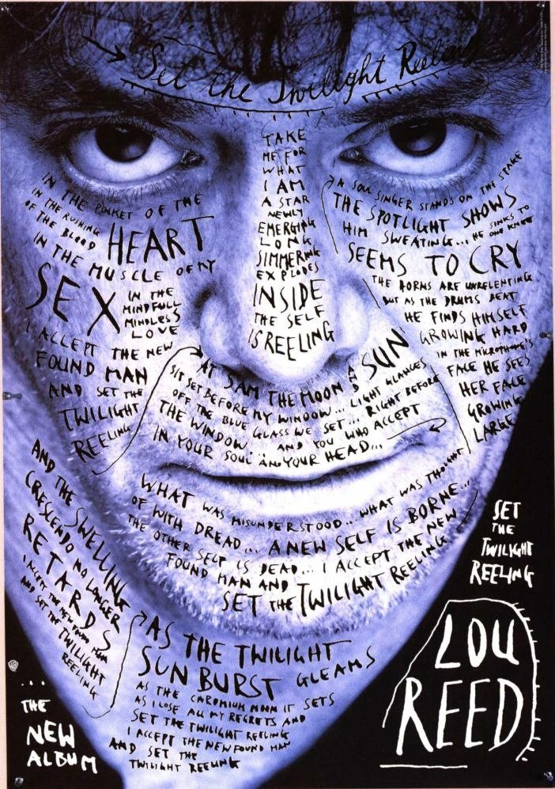
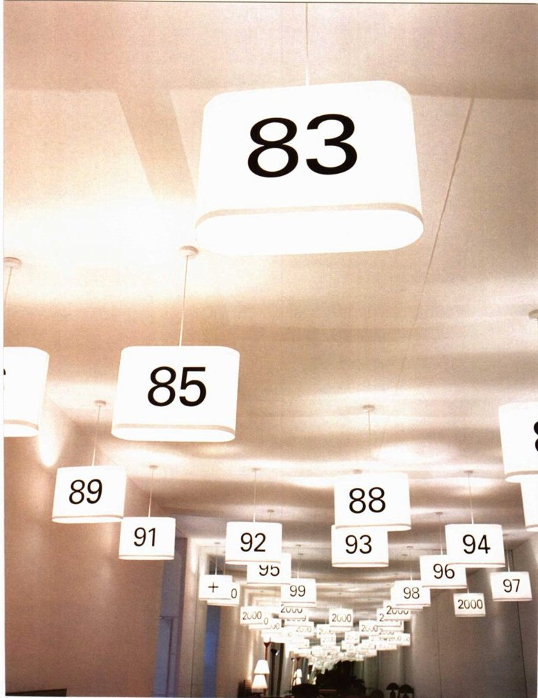
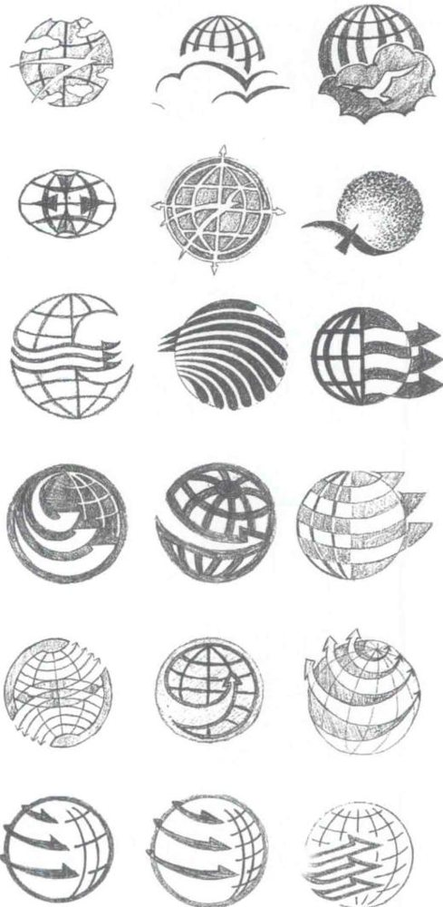
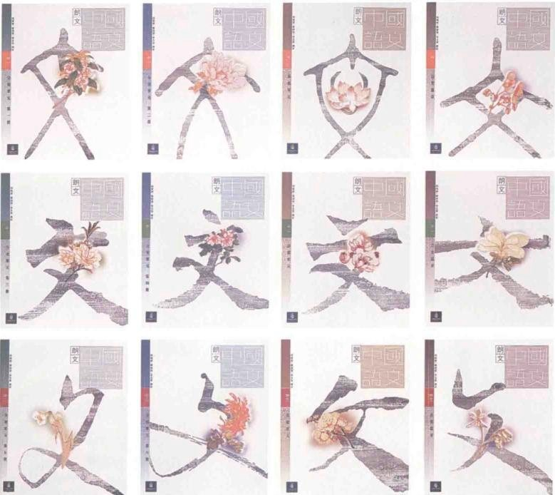
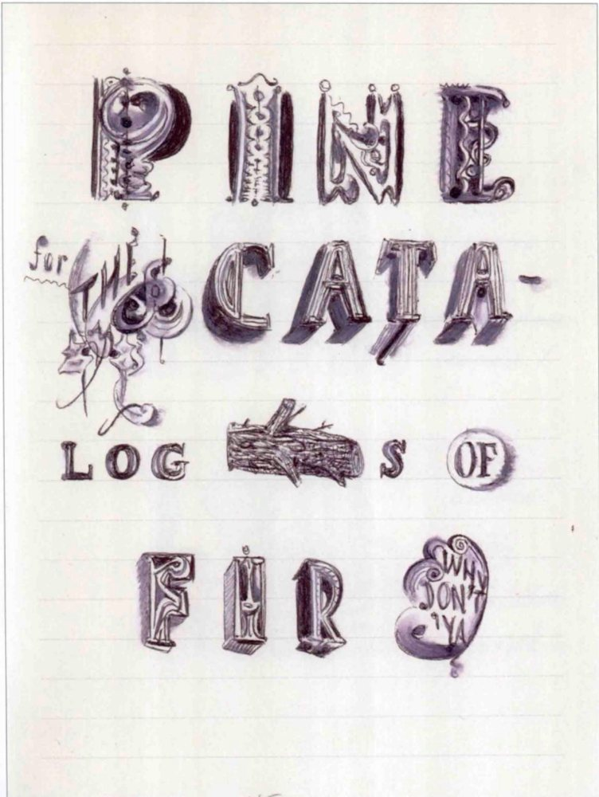
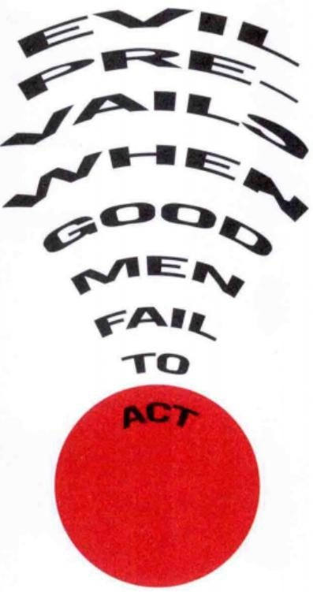
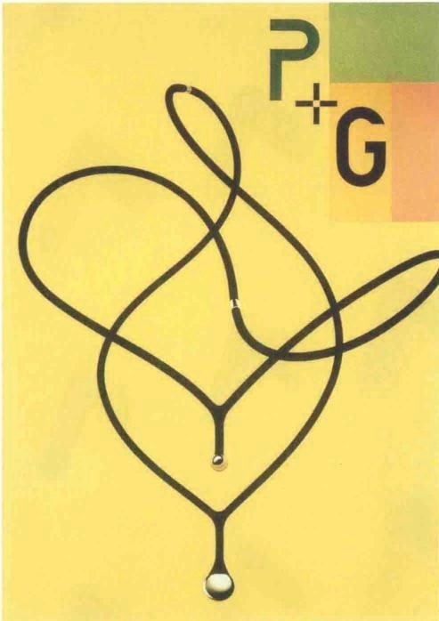
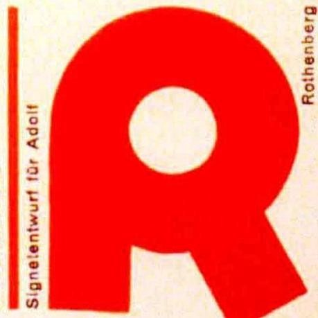
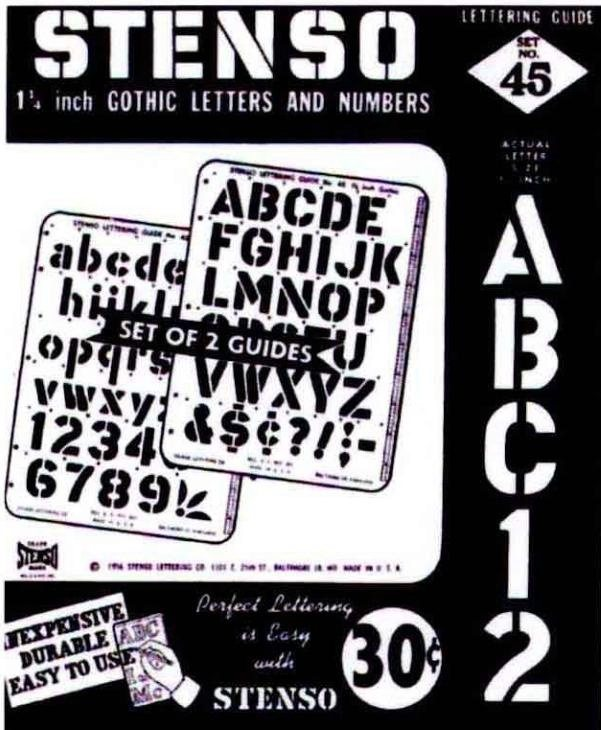
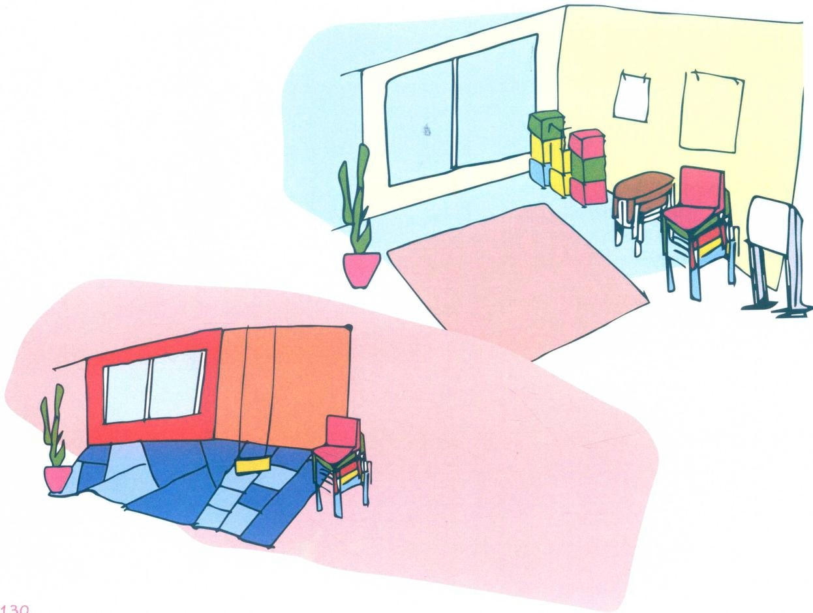
5. Source Bookshelf
Suggested reading order: Newark, 《什麼是平面設計？》 → Rand, 《關於設計的思考》 (short and sharp) → 《平面設計過程》 → Kan Tai-keung, 《視覺傳達設計實踐》 → 《設計思維手冊》 → Papanek, 《為真實世界的設計》.
Show 139 titles
- 100 個改變平面設計的觀念 - 嘿，設計 - 圖解平面設計規範 - 40 天成為資深設計師 - IDEO：設計改變一切 - 創意之道（The Copy Book） - [009]非常規標誌設計：6 個不必遵守的基礎原則 - [018]最佳設計 100 細則 - [026]少即是多：減法設計 - [032]視覺傳達設計實踐 - [038]1000 Retail Graphics - [041]高效設計溝通之道（原書第 2 版） - [043]完成設計：從理論到實踐 - [044]美國視覺傳達完全教程 - [067]零 ZERRO：世界符號大全 - [078]平面與空間 - [081]創意工場：提升設計技巧的 80 個挑戰 - [086]日本的手感設計 - [087]設計的品格 - [096]設計並不重要 - [098]我的第一本設計書 - [104]平面設計過程 - [107]小平面 - [115]北歐設計 - [119]王志弘作品收集 - [130]做喜歡的事：25 個亞太創意設計工作室 - [131]做喜歡的事：25 個歐美創意設計工作室 - [140]設計修辭法 - [141]設計與死 - [147]設計的覺醒 - [152]平面設計死了嗎 - [162]放眼德國設計 - [163]放眼法國設計 - [164]漫遊英國設計 - [165]漫步日本設計 - [185]荷蘭設計 - [189]設計的手感 - [200]歲寒三友：詩意設計作品集 - [203]廣州美術學院碩士研究生作品集 - [204]靳埭強與格呂特納的海報對話 - [205]靳埭強設計獎 - [206]陳幼堅最新作品 - [207]平面設計八人 - [210]設計集 - [212]設計心法 100+1 - [217]靳叔說：設計語錄 - [220]設計的圖謀：改變世界的80個日常創意陰謀 - [221]遺產與更新：中國設計教育反思 - [223]設計師演講錄：Icograda 世界設計大會 - [228]設計創意流程：用MBA思維成就設計高效能 - [230]全球優秀93位平面設計師作品集 - [246]遊遊遊：說說我的設計私想 - [247]對話日本設計 - [248]設計師不讀書 - [249]設計質 - [250]大話設計師 - [262]從製造到設計：20世紀德國設計 - [270]意東方：設計中的東方元素（一） - [271]49個成就平面設計的關鍵詞 - [272]企業形象設計家：靳埭強與他的設計師朋友 - [273]海報設計家：靳埭強與他的設計師朋友 - [275]生活·心源：靳埭強設計與藝術 - [276]靳埭強·身度心道：中國文化為本的設計·繪畫·教育 - IDEO 設計現象探究：Patterns 2010 - 設計效果圖 - 設計百年：20世紀平面設計的先驅 - 設計解決 - 像設計師那樣思考 - 圖形設計新元素 - 如何把國外作品轉化為自己的能力（第二部） - 平面設計：我的第2語言 - 為什麼設計 - 理性設計 - 至關重要的設計 - 解決100個煩惱的100種設計 - 設計推導學 - 中國古代設計思想史略 - 什麼是平面設計？ - 創意工場：提升設計技巧的80個挑戰 - 動畫分鏡台本設計 - 吳東龍的東京設計生活100 - 寫給大家看的設計書（第三版） - 好設計的造型元素 - 完成設計：從理論到實踐 - 宣傳冊設計與製作 - 平面設計200年 - 新興實踐：設計的專業、價值與途徑 - 日本當代插圖集 - 最全設計規範 - 服務的細節：完全商品陳列115例 - 為真實世界的設計 - 生命的幻象：迪士尼動畫造型設計 - 異想天開：設計初始 - 知日・設計力 - 移動設計 - 符號與數字：平面中的視覺表達 - 第三種創新：設計驅動式創新 - 編輯設計 - 至關重要的設計 - 至關重要的設計（布倫納） - 蘋果首席設計師：喬納森傳 - 視覺傳達設計 - 視覺傳達設計考研手繪 - 視覺營銷：零售店櫥窗與店內陳列 - 託尼克：設計為何 - 設計＋生活：佐藤 - 設計＋生活：奎內克 - 設計＋生活：姚爾丹 - 設計＋生活：孔喬 - 設計＋生活：府烈茶 - 設計＋生活：王翰尼 - 設計＋生活：白同異 - 設計＋生活：蒙古齊 - 設計＋生活：雷又西 - 設計中的錯視 - 設計五感：亂 - 設計五感：惡 - 設計五感：拙 - 設計五感：精 - 設計入門教室：設計的基本規則 - 設計力就是溝通力 - 設計，在人人設計的時代 - 設計密碼 - 設計師不可不知的 100 種世界經典平面設計圖書 - 設計思維手冊：斯坦福創新方法論 - 設計思維與方法 - 設計方法與策略：代爾夫特設計指南 - 設計的意義 - 設計的細節：日本經典設計透析 - 設計與革新：關於未來設計的 50 種思考 - 設計風尚 5：創意節日宣傳頁設計與製作 - 設計高手的秘密 - 設計，在人人設計的時代：社會創新設計導論 - 這樣擺，最好賣：賣場中的商品陳列技巧 - 造像量度：佛像唐卡設計比例圖 - 關於設計的思考 - 非平面 - 靳埭強設計獎：平面設計作品集 - 騰訊網 UED 體驗設計之旅6. Study Cues
- Use Newark's four dimensions (form, material, time, information) to analyse a poster you like.
- Write a complete design brief for your next assignment, including a measurable objective.
- Use the Double Diamond to map the process of your last project: which stage did you spend too little time on?
- Choose one idea from 《100 個改變平面設計的觀念》 (for example "the pointing finger") and find three examples from different decades.
- Use Papanek's six elements of the function complex to evaluate an everyday product.
- Are you T-shaped or π-shaped? Write down what your vertical and horizontal bars are, and plan which part to strengthen next year.
7. Each Book
Each book in the bookshelf is described below. Every title above links to its section.
100 個改變平面設計的觀念
Original title: 100 Ideas that Changed Graphic Design
Scope. This is a reader of ideas. It gathers about a hundred creative ideas that recur in graphic design and have influenced practice over the long term, arranged roughly in time order, from very early approaches such as writing on the body to pixels, two-way images and designers' own websites. The book separates "foundations" from "surface styles": movements can share asymmetry and loud colours, but what is worth remembering on its own is the idea that keeps coming back.
Main ideas
- A great idea must hold attention over a long time: it has changed professional practice or theory, or it has appeared in large numbers over a period.
- Ideas go out of date, and they also come back. The book notes roughly when each one appeared, and what it looks like when it is used at its best.
- The number one hundred is a convenient round figure. The editors say openly that there will be omissions, and they deliberately leave out surface styles that are merely pretentious.
- The opening ideas include book jackets, writing on the body, transfer lettering, rays of light, pastiche, the pointing finger, the void and the clenched fist; later come small type, magazine cover lines, guerrilla advertising and pixelation.
Methods
- For each entry, note only three things: what communication problem it solves, what visual move it relies on, and where it turned up again later.
- When you see a piece of work you like, first ask which idea it belongs to, then ask whether it has only borrowed the style.
- In your own exercises, choose one idea and explore it fully (for example "the pointing finger" or "the void"). Do not try to perform five ideas on one poster.
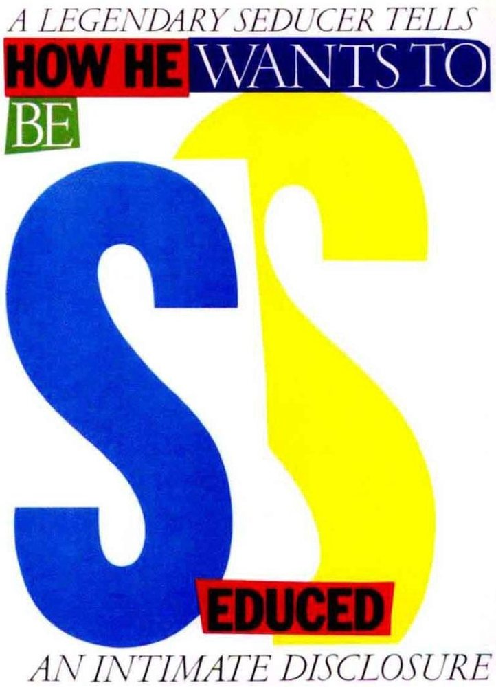
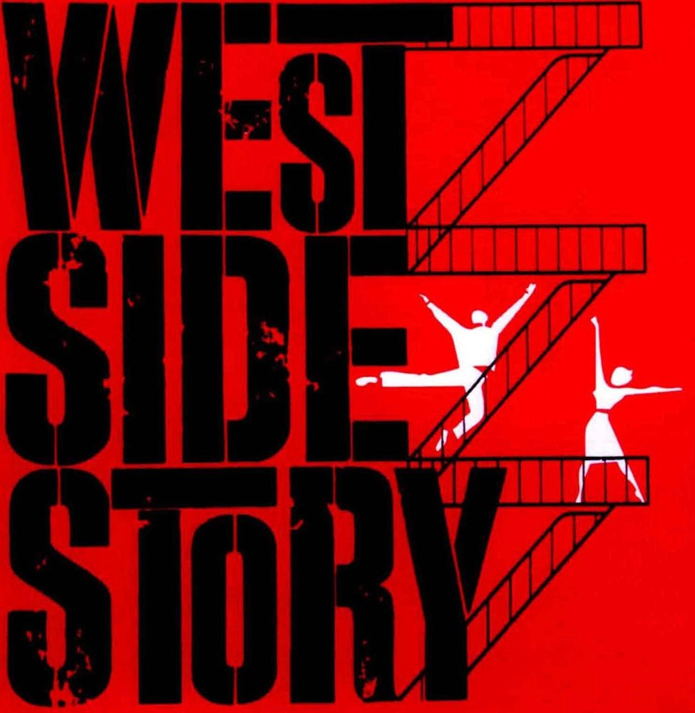
Study cues
- Using the book's criteria, explain the difference between "long-term attention" and "a passing style", and give an example of each that you have seen.
- Choose one of "book jackets, the pointing finger, the void, pixelation" and describe a situation where it is still useful today.
嘿，設計
Author: Mr Hei
Scope. This is a technique handbook for art academy design entrance exams, covering everything from tools to creative sketching. It teaches how to use technical pens, brush pens, pencils, markers, coloured pencils and gouache, then decorative patterns, single objects and a set of creative methods given everyday nicknames. Read it as studio notes before an exam: the black, white and grey structure of a picture matters more than piling on decoration.
Main ideas
- The pencil is only for blocking in shapes. Once the lines are inked, erase the pencil marks; do not press too hard, or you will score the paper.
- The brush pen is for tidying lines and separating black, white and grey, used with a squarish, fairly firm stroke. Coloured technical pens are only for accents; large areas make the picture look busy.
- Before the exam, alcohol-based markers are easier to handle; coloured pencils are for gradients and texture, not for laying in large blocks of colour; gouache must be applied evenly, with a separate fine brush for outlines.
- Decorative patterns and "elements" are not the same thing: the first are motifs added onto an object, the second are used to enrich the background, the area behind the main subject, or intertwining relationships. Only when you can draw single objects accurately do you have a basis for creative sketching.
Methods
- Settle the black, white and grey structure of a picture first, then decide how much pattern to add. If it looks busy after adding, take some away.
- When copying the single objects in the book, draw a few from each category (food, clothing, buildings, transport), and note which pen produced each texture.
- Rewrite the book's six creative methods in one sentence each in your own words, then make a small sketch of the same still life with each.
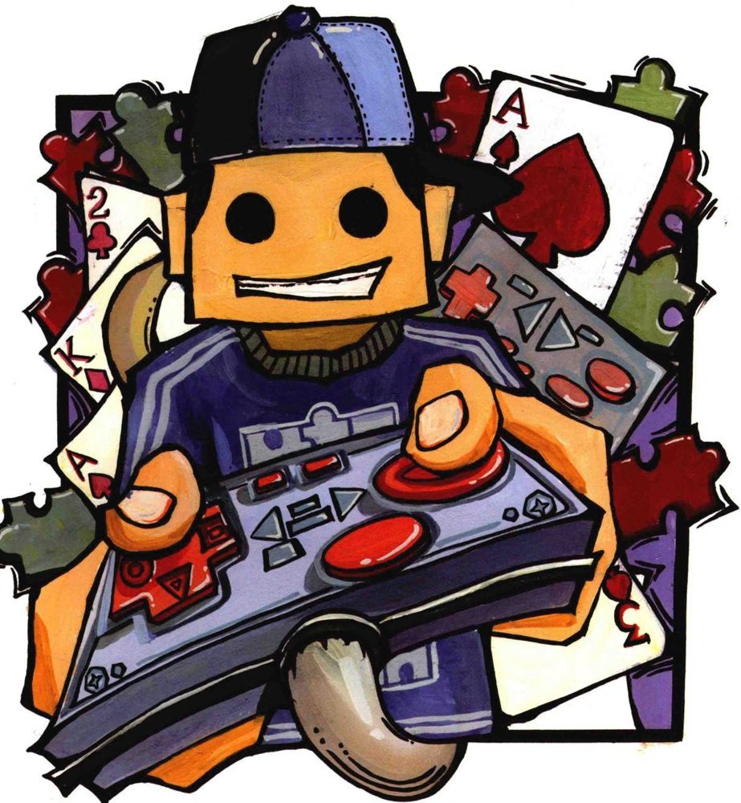
Study cues
- Explain the difference between decorative patterns and picture elements, and draw a small example of each.
- Why should you erase the pencil drawing after inking? Give two reasons it would spoil the finish.
圖解平面設計規範
Scope. This is a quick-reference chart book for graphic design, laying out type, colour, common sizes and print processes as comparison pages. It is good to keep at hand for checking figures, but it is not a complete textbook on colour theory or print processes. The golden ratio, the Fibonacci sequence and paper sizes are presented as "numbers for when you are unsure", and the print section runs from the workflow to embossing, foil stamping and lamination.
Main ideas
- The colour pages go from the three primaries, secondaries and tertiaries to the twelve-part colour wheel, and separate hue, saturation and value.
- Warm colours feel closer, cool colours feel more distant, and neutrals such as black, white and grey steady a composition.
- Colour combinations are reduced to monochrome, analogous and complementary: monochrome relies on tonal steps, analogous schemes are low in contrast, and complementary schemes are high in contrast.
- Printed matter mostly uses standard paper sizes such as DIN, which makes filing easier. When unsure about proportions, the book offers the golden ratio and the Fibonacci sequence as optional whole-number scales.
Methods
- When choosing colours, first write down the hue relationship (monochrome, analogous or complementary), then fill in CMYK or RGB values, rather than going by what you like on screen.
- Before preparing print artwork, check the finished size, the bleed, and whether the piece needs embossing, foil stamping or lamination.
- Use the book's common photo sizes to make a comparison table, and convert the pixel dimensions of your assignments into print sizes.
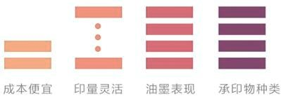
Study cues
- Take the same set of three colours and turn it into a monochrome scheme, an analogous scheme and a complementary scheme, then write down how their moods differ.
- Why do standard paper sizes matter to designers? Give one sentence about "filing" and one about "imposition".
40 天成為資深設計師
Scope. The title sounds like a quick career fix, but the text is a very long course in prepress production, drawn from tutorials on the Aifenxiang ("love to share") community. It runs from scanning physical originals and handling digital originals to colour correction, output from layout software, imposition, folding, carrier bags, ring binding and hand binding. Use it to understand that "design artwork" and "a file ready for print" are two separate jobs.
Main ideas
- Physical originals only become files once they are scanned or photographed; stock images, digital photos and images from the web are already digital originals.
- At the concept stage you can use Photoshop to piece together a mock-up. Once the design is final, text, logos, colour blocks and lines must be redrawn as vectors in layout software, and images must be processed to prepress requirements before being placed.
- Only files saved from layout software can be output for film; even if a page has only images and no text, it must still go through layout software.
- Later lessons deal with curves, overprinting, trapping, trimming, images that are too dark, folding structures, and the title pages, blank pages and foil stamping on the covers of books.
Methods
- Split every job into two folders: mock-ups for exploration, and layout files ready for print. Never send a mock-up straight to print.
- When scanning or correcting colour, look at the histogram: if a large black area leaves only a thin line on the left, the shadow detail is already gone.
- Before imposition, check that the pieces use the same paper and the same set of inks, then place them on the same large sheet.
Study cues
- Why must text and logos already laid out in Photoshop still be redrawn in layout software when the design is final?
- Explain which two conditions must be met before "imposing to save paper".
IDEO：設計改變一切
Original title: Change by Design: How Design Thinking Transforms Organizations and Inspires Innovation
Author: Tim Brown
Scope. This is a book on design thinking by the chief executive of IDEO; the Chinese edition renders Change by Design as "Design Changes Everything". It starts from the consequences of the Industrial Revolution and argues that new technology alone is not enough: human needs, technical feasibility and business viability must be considered together. Use it to understand how design methods can be handed to people who do not call themselves designers, and used for products, services and strategy.
Main ideas
- Design thinking goes one step further than design craft: the methods can leave the design profession and be applied to bigger problems.
- What we need are products that balance the individual and society, approaches that can tackle problems such as health and education, and strategies that make the people affected willing to take part.
- If brainstorming cannot become a real product, service or strategy in the real world, it is just a temporary trick.
- The first half of the book runs from "getting under people's skin" and "converting need into demand" and "thinking with your hands" to how stories carry ideas out into the world.
Methods
- For any proposal, write three columns: what people really need to get done, whether existing technology can do it, and whether doing it can be sustained.
- Make rough models first and think with them; do not wait for the idea to be complete before you start making. The book calls this thinking with your hands.
- Prepare one story for inside and one for outside: the inside story aligns the team, the outside story helps people who are not yet involved understand why things should change.
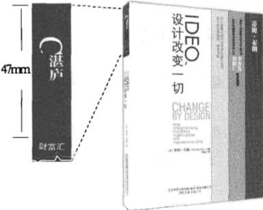
Study cues
- Write in your own words the three things design thinking must look at together.
- Choose a small problem on campus, write down the difference between "need" and "demand", and propose a rough model you could make within a week.
創意之道（The Copy Book）
Original title: The Copy Book: How 32 of the World's Best Advertising Writers Write Their Advertising
Scope. This is a collection in which thirty-two advertising people talk about how they write copy; the simplified Chinese edition is called 《創意之道》 ("The Way of Creativity"). It is not a handbook of copywriting formulas but a section on each writer's working habits, with famous advertisements in between. Read it before you write a headline, to see how others rewrite and how they think of words as images.
Main ideas
- One of the writers treats words as servants of the argument: clear, simple, ordinary words matter more than clever wordplay.
- When developing an idea he first draws the shape of the ad and puts the headline into it; to judge a headline, he even has to draw a line under it before he can see it properly.
- A headline may be rewritten dozens of times. The company's open-plan office does not necessarily suit this work, so he writes at home, at night or in hotel rooms.
- Among the things he considers broadly reliable: put your own life into your copy, think visually, and sometimes the best copy is no copy at all.
Methods
- Use one sheet of paper per idea. When you get stuck, switch to bigger paper and a thicker pen: change the procedure first, then wait for the sentence.
- Only choose after you have written more than ten headlines. When choosing, ask: is it showing off, or is it making things clear for the reader?
- When looking at classic advertisements, note the copy and the art direction separately. In the Dr White ad in the book, the art director was John Hegarty, and it helped establish BBH's reputation.
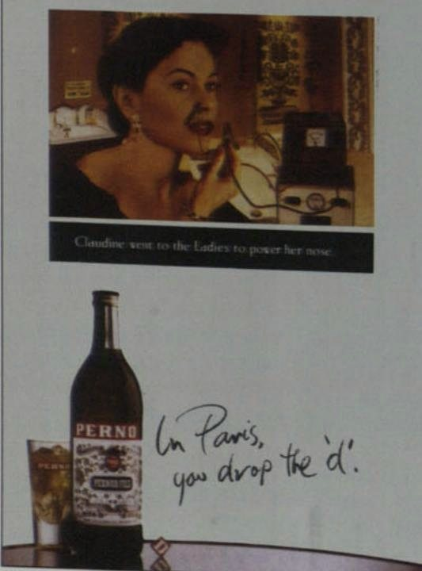
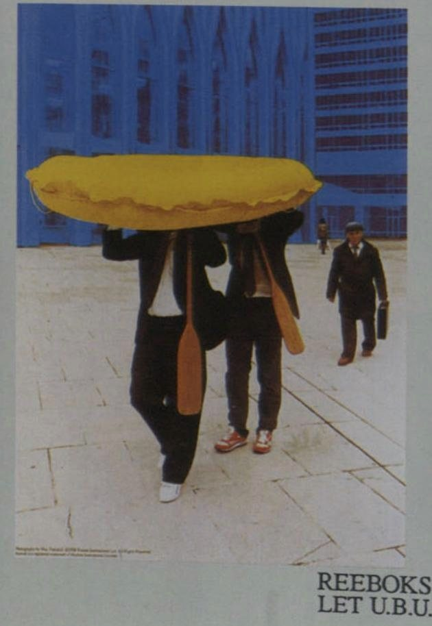
Study cues
- Write five headlines for the same product: two that show off cleverness, two in plain language and one with almost no copy. Mark the one you would take to a presentation, and explain why.
- What does "think visually" mean in writing? Using a staircase as the example, write one line of copy that does not rely on adjectives.
非常規標誌設計：6 個不必遵守的基礎原則
Original title: No Rules! Logos: Radical Design Solutions That Break the Rules
Scope. This is a book of logo case studies that collects only logos deliberately made against the conventions of identity systems. The text sorts the rule-breaking into several kinds: logos that are hard to read, that go against the client's idea of a "stable logo", that flow and change, that cannot be reproduced small, and that carry some kind of error within them; those that fit none of these are grouped as oddities. Use it to discuss what else an identity can be, while also seeing why clients so often send bold proposals back.
Main ideas
- Traditional identity stresses control, consistency and instant recognition. The examples in the book deliberately make people unable to read them at first glance, or let the logo change with the context of use.
- Breaking the rules is hard. A client can commission a very wild designer and still choose the safe option in the end; only when designers are their own clients can they more easily see an experiment through.
- Practice such as that of Wolff Olins is presented as a challenge: a logo can look as if it has almost no identity at all. The book says plainly that it could not get permission to include the controversial London 2012 Olympics logo.
- Not all of these works are masterpieces. Their use is to show that a logo does not always have to be a fixed stamp that can be shrunk.
Methods
- When designing a logo, first write down the rule you intend to break, and the task the reader still has to complete (recognising the brand, the event or the series).
- Deliver two versions of each proposal: one still readable at business-card size, and one that only works on particular materials. Let the client see the cost.
- When collecting rule-breaking logos, note their risk of failure: the name cannot be read, it cannot be printed, or it cannot carry over to the next season.
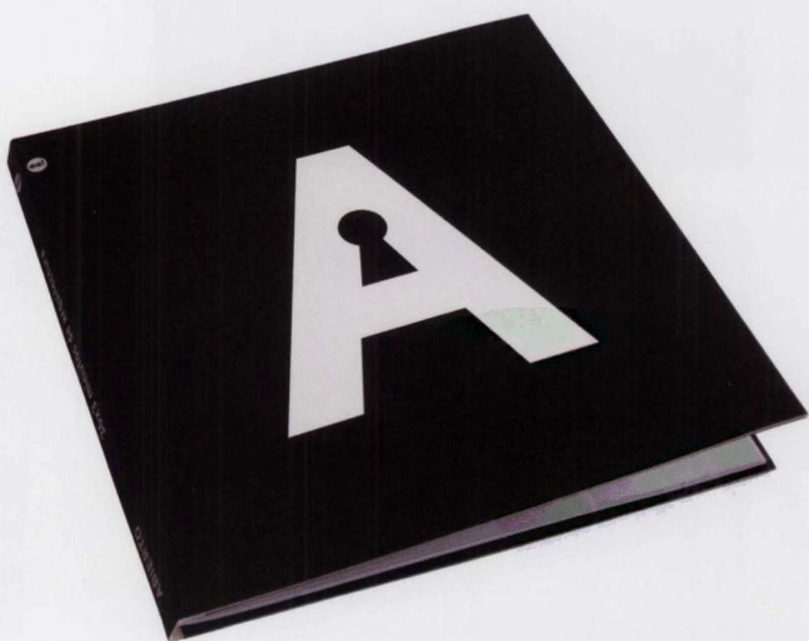
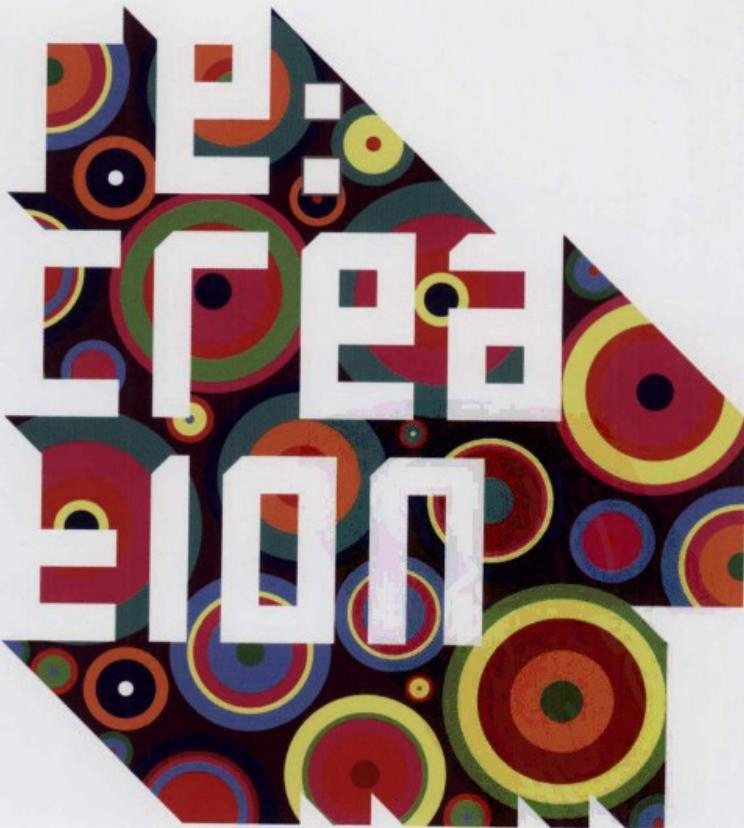
Study cues
- Choose a logo rule you normally follow, and write down what readers could still rely on to recognise the same organisation once it is broken.
- Why can't cases where "the designer is the client" be taken directly as evidence for commercial identity work?
最佳設計 100 細則
Original title: Universal Principles of Design
Scope. This is a book of design principles in entries, one concept per entry, running from the 80/20 rule, accessibility, alignment, archetypes, chunking and closure through to colour. It covers products, interfaces and information graphics, and is useful in critiques for naming problems. The author credit in the catalogue is incomplete, so no names are added here.
Main ideas
- The 80/20 rule: in large systems, most of the effects come from a few variables. Design and testing should focus on the small set of features that are actually used.
- Accessibility asks that as many people as possible can use a design without it having to be modified. The book lists perceptibility, operability, simplicity and forgiveness, and stresses redundant coding (text, images, touch).
- Entries such as alignment, chunking, closure, archetypes and the baby-face bias all explain how people see and judge, not just matters of layout taste.
- Help systems and design quality are inversely related: if something needs a lot of explanation before it can be used, the design itself has a problem.
Methods
- When assessing your own assignment, pick three principles to score it against first. Do not use all hundred at once.
- Use 80/20 to list the features: which ones will people actually use, and which can be played down or removed?
- When you finish an interface or poster, ask: without instructions, can people recognise it and operate it? If not, fix the design first, then write help text.
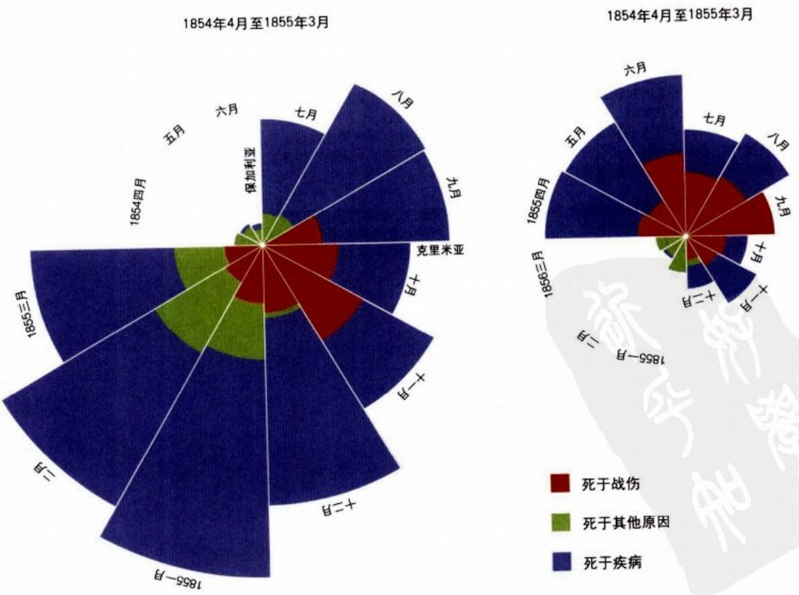
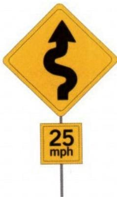
Study cues
- Take a product you use often, and point out the roughly 20 per cent of features that are "actually used", and the rest you could do without.
- Use "perceptibility, operability, simplicity, forgiveness" to check a sign in the classroom, and write down its weakest point.
少即是多：減法設計
Authors: Lin Gengli, Lin Shijian (compilers)
Scope. This is a collection on subtractive design made up of case studies and short texts by designers, with work ranging from posters, packaging and brand identities to small books. It borrows the phrase "less is more" and asks designers from different regions to explain how they strip away unnecessary layers. Use it to practise cutting back when a composition is already very full, not to collect the surface look of minimalism.
Main ideas
- The book traces where the phrase came from: a poem by Browning, then Mies van der Rohe turning it into an architectural slogan, and later others rewriting it as "enough is more".
- Subtraction means knowing the essence of something and peeling away the unnecessary outer layers so the message becomes clear. It is not adding yet another layer of "minimal decoration".
- The Nordic interviewees link simplicity with materials, nature and printed matter that can be held for a long time, and admit that "letting go seriously" is harder than making the work complicated.
- In the Japanese cases, less can also be heavy: for example a beer whose bottle carries only the silhouette of a pine tree, packing the idea of rebuilding into a single outline.
Methods
- For each piece, first write down "the one sentence that must stay", then remove, one by one, the colours, lines and subheadings that do not contribute to it.
- After cutting, check that you have not cut the message as well. As the book puts it: less can open up more possibilities, provided the core is still there.
- For branding or packaging, the material itself counts as a design decision. Ask whether it can be kept for a long time, not just whether it can shout louder on the shelf.
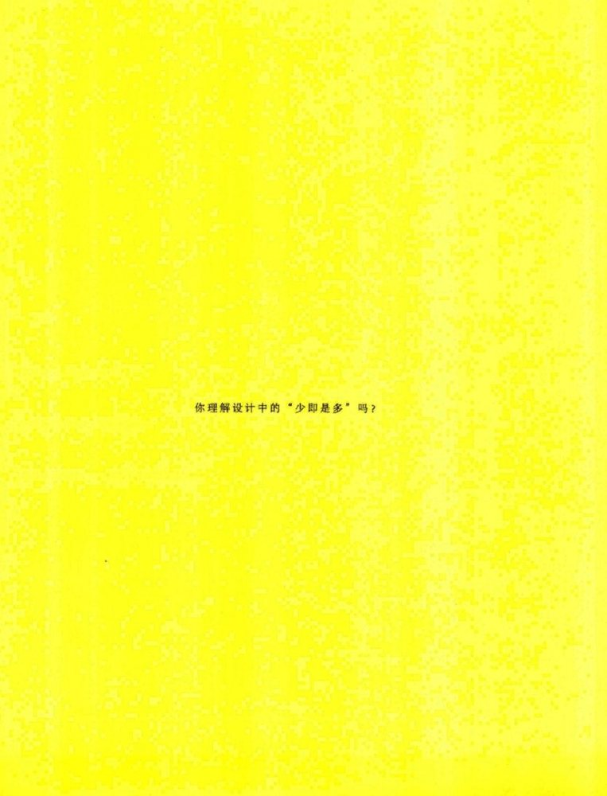
Study cues
- Take a poster that is already full, list five things you could remove, and mark which one would hurt the message if removed.
- What is the difference between "less is more" and "a composition with lots of white space"? Explain using the pine tree beer as an example.
視覺傳達設計實踐
Author: Kan Tai-keung
Scope. This is Kan Tai-keung's practice book, linking the principles of two-dimensional design to real design work. After finishing the basic exercises, students often do not know how grids, contrast, texture and space are used in logos, posters and packaging. This book fills that gap with his own projects. The structure moves from form (point, line, plane, volume, positive and negative, abstract and realistic) to grid, repetition, gradation, radiation, contrast, texture and space.
Main ideas
- Principles must become visible in commissioned work. Most examples in the book are logos, annual reports, posters, stamps and packaging, and each example matches one type of composition.
- The chapter on form separates positive and negative, abstract, semi-abstract, realistic and surreal, and shows how form works together with traditional graphics.
- A grid is not a single flavour but a set of different organisations: centripetal, centrifugal, radial, anomaly and so on. Contrast can happen between forms, between basic shapes, and between grids.
- Beyond positive and negative, space can be flat, illusory, or ambiguous and contradictory. Texture is divided into the texture of the material itself and visual texture that is made.
Methods
- When you design a logo or poster, first state which organisation you are using (repetition, gradation, radiation, anomaly, concentration), then start drawing.
- Mark the positive and negative shapes on every draft. If the negative shape is just leftover space, it has not been designed yet.
- Use one project in the book as a comparison: make two drafts on the same theme, one "flat" and one with "an illusion of depth", and see whether the depth overwhelms the message.
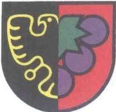
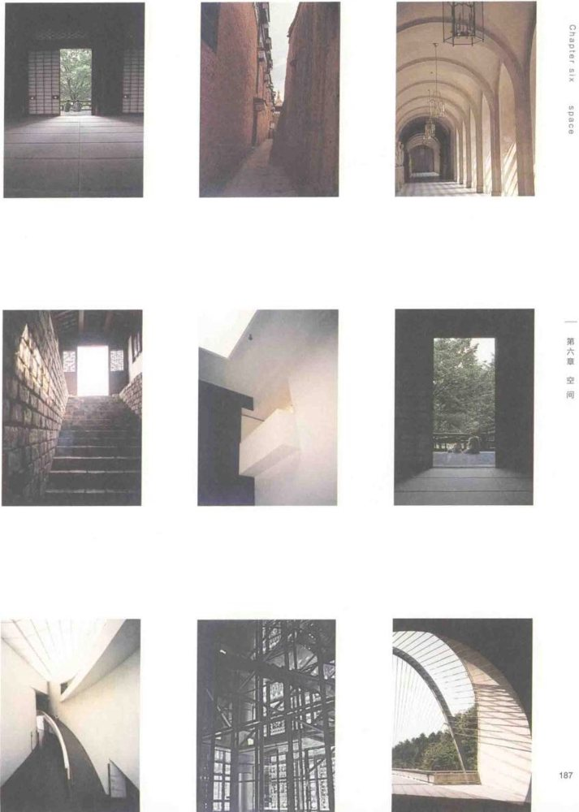
Study cues
- Use one basic shape to make three thumbnails: repetition, gradation and radiation. Write down the kind of message each one suits best.
- Take one of your assignments and point out where the positive space is, where the negative space is, and whether you have accidentally made a contradictory space.
1000 Retail Graphics
Scope. This is a catalogue of retail graphics. It arranges shop graphics, packaging and in-store visuals by case, with the design firm and country for each. The readable text is mainly credits, such as Hardy Design, Landini Associates and Design Ranch. Use it to widen your view of retail work. The cases have to be understood by looking at the images; you cannot rebuild them from the incomplete captions.
Main ideas
- Retail graphics are a whole set of touchpoints: signs, shop windows, bags, labels and interior walls, not just a logo.
- The book's value lies in quantity. The same type of shop can use many different graphic strategies. Comparing them is more useful than memorising one firm's style.
- The credits show that the work is spread across studios in many places. Brazil, the UK, the USA, Australia, Canada and Germany all appear in the index.
- Because most of the caption text in this material cannot be made out, trust the images when you read. Do not guess unreadable words into concepts.
Methods
- For every ten cases you look at, record them in the same table: is it signage, packaging or in-store graphics, and what is the next action it asks people to take in the shop?
- File "attractive surfaces" separately from "helping people find goods, queue or try things". Collect only the second kind, as structural references for your own retail assignments.
- If a caption cannot be read, leave your notes blank. Do not invent a story for the original work.
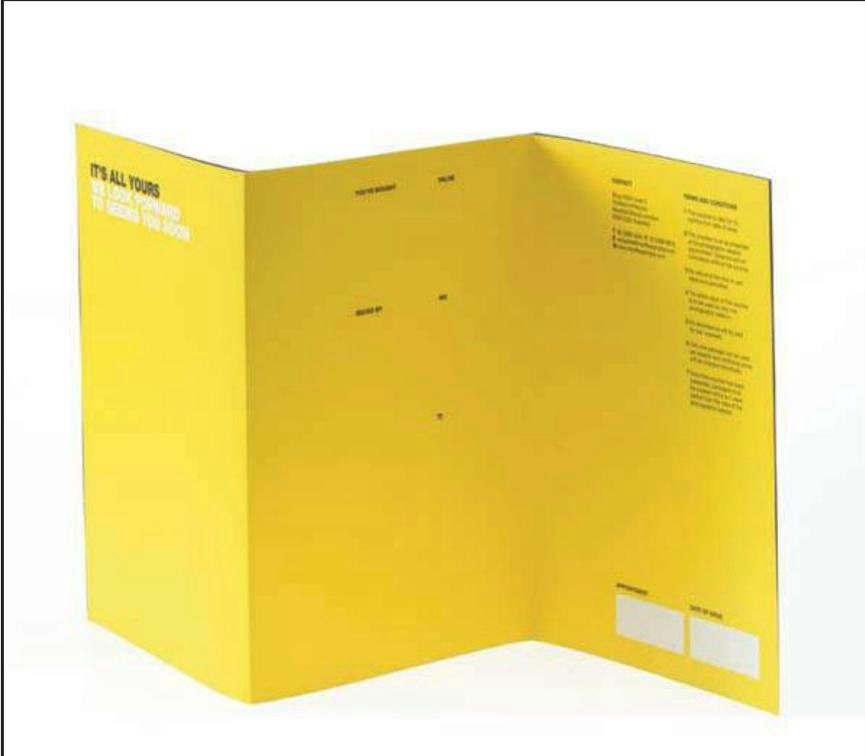
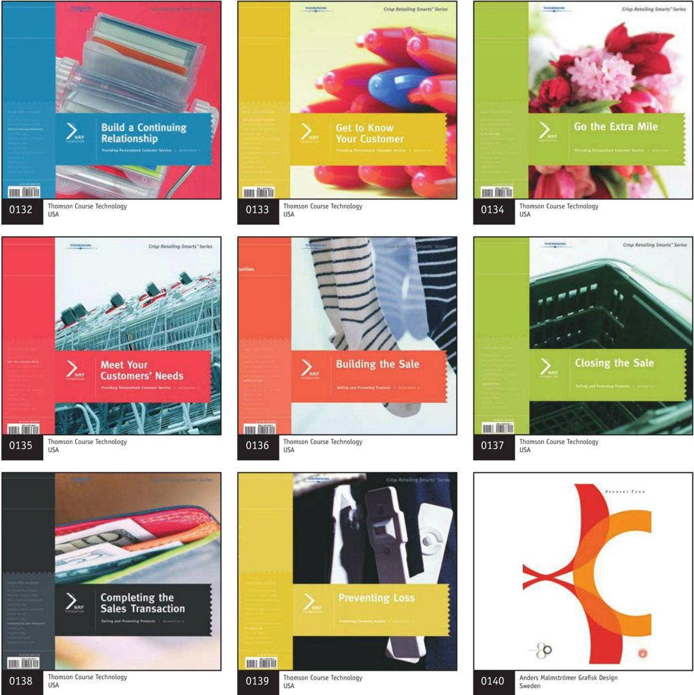
Study cues
- How do retail graphics and a brand poster differ in terms of "what the person needs to do at that moment"?
- How would you take notes on this book so that you do not guess unclear captions into design concepts?
高效設計溝通之道（原書第 2 版）
Original title: Communicating Design: Developing Web Site Documentation for Design and Planning, 2nd edition
Scope. This is a book on documentation for web and user experience design. Its English title is Communicating Design, and the Chinese edition adds the subtitle "ten tools for design communication". It argues that deliverables are not paperwork added afterwards but milestones that record decisions so that people who join later can pick up the work. The preface treats Dan's diagrams as the core of the method. Use it when you work on web or service design to learn how to deliver site maps, wireframes and sketches, not to learn a visual style.
Main ideas
- A document records an idea. If the idea does not reach the people who build it, the website cannot be built according to that idea.
- Different people will produce different results from the same instruction. So clarity matters more than showing off talent.
- A good site map should be readable by people who come later. It cannot work only in the one meeting where you explain it.
- Sketches are scanned into documents to keep the context. Final diagrams should not erase the whole process of exploration.
Methods
- For each deliverable, first write down who it should help make a decision: the client, the developers, or the next designer.
- When you draw a site map, write labels in words other people can understand. Read it again without your spoken explanation.
- Keep one key sketch in your proposal and note the question it answers, rather than handing in only the final polished drawings.
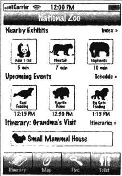
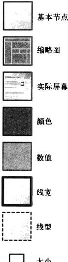
Study cues
- Why can "documents are dull" and "projects are handed over through documents" both be true?
- Draw a site map of only ten nodes for the course website and give it to a classmate. Anywhere they cannot understand without asking is a label you need to fix.
完成設計：從理論到實踐
Original title: Design Evolution: Theory into Practice
Scope. This is one of the books in the "American Visual Design School" textbook series. It condenses "good design" into twenty rules used by professional designers, then uses projects to show how these rules appear together. The process is written as making, trying, choosing and making again. Use it before a critique to check whether a piece of work has a concept, hierarchy and negative space, not to memorise the rules.
Main ideas
- The standards of good design come from how we see and how the brain processes what we see, so it is both an aesthetic question and a practical one.
- Requirements that recur among the twenty rules are: communicate, and make every form relate to the concept; use one visual language; treat type as image; you must have a concept.
- Other rules include: use two typefaces at most, separate primary from secondary, use colour as needed, do less if less will do, manage negative space, do not use stock images directly, look back at history, give density a rhythm, and arrange light and dark.
- A lecture poster in the book shows that the twenty rules can work at the same time in one piece, rather than each piece performing just one rule.
Methods
- Before finalising, use the twenty rules as a checklist for cutting: which rule has not been addressed at all? Fix only the weakest one.
- Look at type first as shape, then read it as words. Ask whether it shares the same visual language as the images.
- When a client changes direction midway, record "is the concept still there?" separately from "only the colours and positions changed", as with the cover draft in the book.
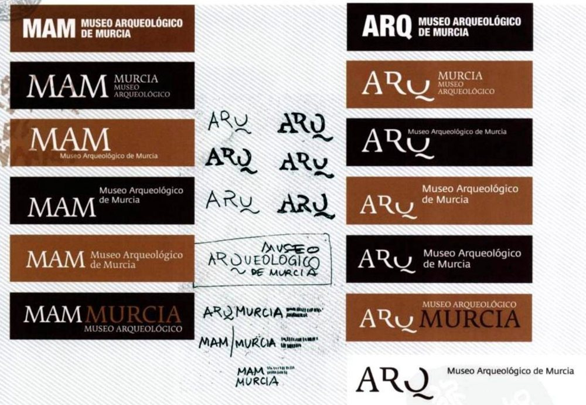
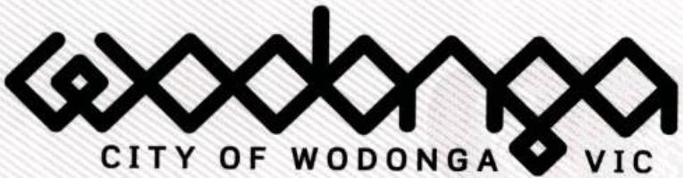
Study cues
- Choose five of the twenty rules and check your most recent poster. Write down the weakest one and one way to fix it.
- After you "treat type as image", the words still need to be readable. How would you satisfy both at once?
美國視覺傳達完全教程
Original title: Graphic Communications Today
Scope. This is an introductory course for people preparing to enter visual communication, also written for writers and new media experimenters. It starts with vision and light, then moves into strategy in graphics, colour, layout and media. Each chapter ends with exercises in collecting, looking again and making again. Use it to build the habit of seeing that "there is content behind the image".
Main ideas
- The division of labour between words and images is becoming blurred. Journalists may need to take photographs, and copywriters and art directors need to work together.
- The book wants readers not only to make graphics but also to see the content in an image and the meaning it wants to be believed.
- Substantial assignments are mostly done in specific situations: get to know the material, collect, analyse from a new point of view, then propose an approach.
- The same kind of lettering can have a completely different tone. The book contrasts the slashed lettering on the 《七宗罪》 poster with steadier magazine and website type.
Methods
- At the end of each chapter, do the kind of exercise the book sets: first collect ten examples, then describe the difference in their tone in just one sentence.
- When you lay out a feature, let the image and the headline explain each other. In the book's page on genetically modified food, pills are drawn as kernels of corn.
- Work once with a classmate who writes: you handle the hierarchy, and they decide which sentence must be seen. Both of you should be able to explain the other's decisions.
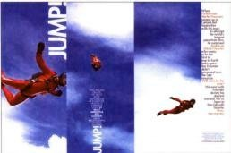
Study cues
- Choose two pieces of typographic design and describe the tone of each in three words. Say whether the tone comes from the typeface, the arrangement, or both together.
- If you worked with a writer on a poster, what is the one thing you would need to agree on first?
零 ZERRO：世界符號大全
Scope. This is an illustrated guide to signs and writing systems. The editor chose eleven chapters of eleven kinds each, purely for the interest of their shapes, giving 121 sets of marks, and even the page size is based on multiples of eleven. It includes Morse code, Edgar Allan Poe's ciphers, mathematical symbols, astrology, Cree syllabics, I Ching hexagrams, runes and many kinds of mystical signs. It is a book for looking at shapes and their origins, not a tutorial on logo design.
Main ideas
- A sign is often both "nothing" and "something". The book uses the Masonic "∴" to show this: a gap like zero carries meaning in itself.
- Many later chemical and biological symbols are related to alchemy, astrology, and Greek or Hebrew letters. John Dee's Monas Hieroglyphica is a combination of astrology and alchemy.
- Some writing systems disappeared because they were too complex, and some are as strange as the jindai moji ("scripts of the age of the gods"). The book chooses them because their shapes are attractive, not because they all circulated successfully.
- Star shapes, rotation signs for body movements, and letterforms for vertical writing are all placed under the same "looking at shape" eye.
Methods
- When you copy signs, note "where this shape came from and which fields later borrowed it". Do not just copy an attractive symbol as decoration.
- When you make your own set of signs, limit the number and the strokes, and test whether others can guess the category without explanation.
- Compare the body movement signs in the book with pictograms in public places: which kind depends on convention, and which still tries to describe the movement?
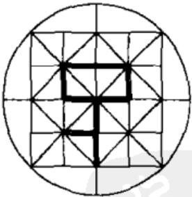
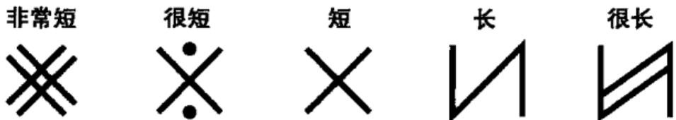
Study cues
- Why does the editor say that some signs are "like zero"? Use a symbol you know to explain that "empty space also has meaning".
- Judging by the way the book selects its material, why can it not be treated as a complete classification of "all the world's writing"?
平面與空間
Scope. This is a book of case studies in environmental graphics, with the English title Graphics and Space. It collects what graphic design does once it enters rooms, shops, exhibitions and catwalks: huge hand-lettered words on walls, murals, exhibition routes, and visual marks for retail campaigns. Use it for spatial assignments, to see how graphics can rewrite the use of a room.
Main ideas
- An identity can leave paper and be applied to walls and doors, changing with the venue while still being recognisable.
- The 3FS office uses irregular black and white walls. In another flat converted into an office, the function of each room is written directly on the wall in exaggerated lettering.
- The exhibition "The Art of Persuasion" breaks the history of advertising down into target groups, channels, messages, media and policy, turning the paintwork in the lobby into a table of contents.
- Retail and restaurant projects (Nike back-to-school, an Eastern-themed restaurant, a Diesel catwalk) show that graphics in space direct how people move and where they stop.
Methods
- Before designing spatial graphics, write one sentence on what the room asks people to do, then decide whether the words belong on the wall, the floor or the entrance.
- If an identity has to appear in shops in many cities, first design a visual mark whose content can change while its structure stays the same.
- Whenever you visit a shop, take three photos: the entrance, a place where people stop, and the last graphic before you leave. Analyse only these three when you get back.
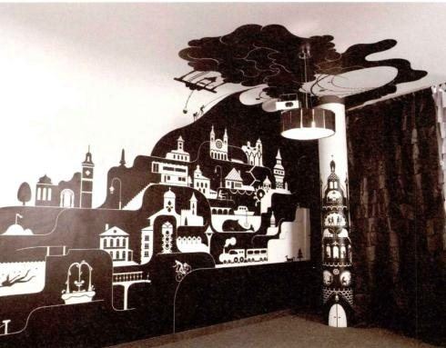
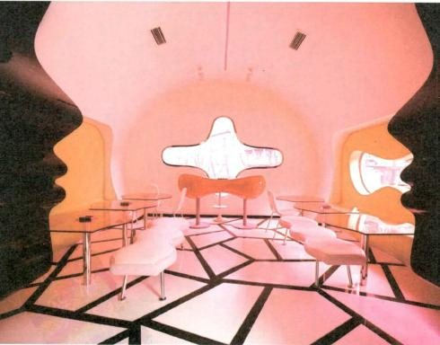
Study cues
- If you write "this room is a meeting room" on the wall, does it solve wayfinding or atmosphere? How would you write it so that it is not just decoration?
- Choose a space on campus and identify what graphics the entrance, the stopping point and the exit each need.
創意工場：提升設計技巧的 80 個挑戰
Original title: Creative Workshop: 80 Challenges to Sharpen Your Design Skills
Scope. This is an exercise book. Each of the eighty challenges comes with a time limit, constraints and a "go further" extra task, to train your design intuition. The book's position is that intuition cannot be taught in a classroom, but it can slowly become sharper through a large amount of disciplined problem-solving. The translator is credited as Wang Xu; the translator is not listed here as the author.
Main ideas
- A career is more like a marathon. The way to stay creative is to keep a steady pace of practice, not to sprint now and then.
- The book quotes Paul Rand: talent is rare, the rest is intuition, and intuition is not taught. The exercises respond by using many different problems to make people more intuitive.
- Constraints will clash with your old habits. Failure is treated as part of the process, and time limits force you to stop endless revisions.
- The tools are simple: within the time limit, produce lots of sketches in pencil, and only when time is up choose one meaningful idea to finish.
Methods
- Use the timebox each challenge gives you strictly. Only sketches are allowed within the time; do not jump into software to polish.
- Before you choose an idea, write down its meaning in one sentence. If you cannot say what it means, go back to sketching.
- After the basic task, do the "go further" task: for example, apply the style of one illustration to a whole article, or extend one character into a series of short films.
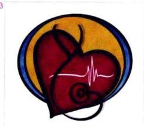
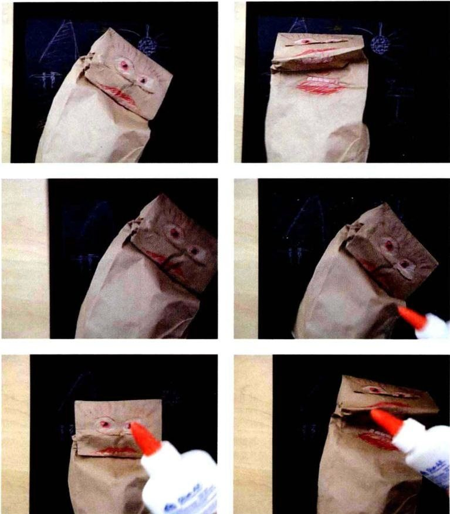
Study cues
- Set a twenty-minute timebox and draw fifteen different poster ideas for "the library is too quiet". Stop when time is up, choose one, and write down its meaning.
- Why does the book think that "having no rules" actually fails to train intuition?
日本的手感設計
Author: Lee Pei-ling (writer of the cultural context section)
Scope. This is a book about touch in Japanese objects and contemporary design, in two parts: cultural context, and the feel of the hand in the twenty-first century. The first half starts with Shinto, natural materials and the traces of time. The second half covers Muji, and interviews with Yoshimi Higashi, Shin Azumi, Tadashi Fukuyama, Yoji Ishii and D-BROS. Use it to understand that "feel of the hand" means material, time and the body, not just a soft style.
Main ideas
- The Shinto belief that all things have spirits means that materials are not casually disguised. If you spoil or waste a material, a senior craftsman will ask you to bow to it.
- Rotting wood and the paper of shoji screens, which can be replaced, are seen as traces left by time. With the solid-wood chair at the entrance of the Miho Museum, what matters is awakening the spirit in the wood.
- The scale of objects the hand can hold is linked to the delicate aesthetic of Japanese life, which follows nature.
- The interviews bring the question back to feeling: designers work for feelings and emotions, and capture spaces and vessels through smell, touch and sight together.
Methods
- When you describe a material, write about how it feels and smells first, then what it looks like. The ceramics section of the book starts with the smell of clay.
- When you make a model or packaging, ask: does this surface belong to the material itself, or is it an expression stuck on afterwards?
- When you read the interviews, note only one working method each, such as how to take a sense of touch from nature. Do not note style adjectives.
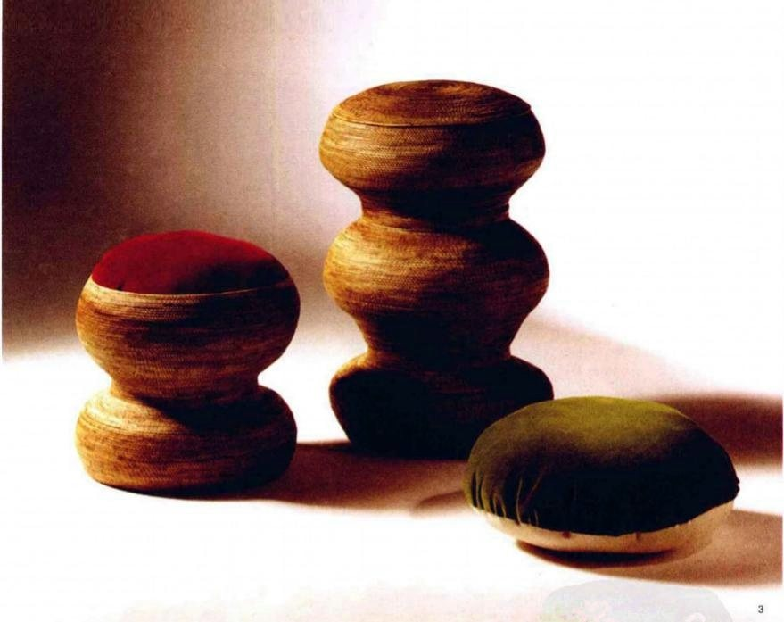
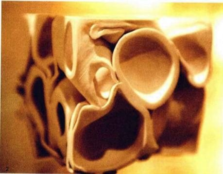
Study cues
- Describe an object you touch every day using touch and smell (do not use words like "premium" or "minimal").
- Why is "materials age" treated as a value rather than a flaw in the first half of the book?
設計的品格
Author: Recto & Verso Studio
Scope. This is a practical book on layout in InDesign, subtitled exploring, presenting and evolving. In the preface the studio says design is hard to judge as good or bad; there are only trade-offs. The main text moves from type properties, principles of letter construction and paragraphs to new documents, layout, drawing and advanced typesetting. It suits people who already know the basic software but whose layouts still have no point of view, helping them connect type decisions with layout decisions.
Main ideas
- The type section starts with properties, capital proportions, strokes, serifs, axis of curves and ornament, then moves on to the emotional and creative uses of typefaces.
- Software operations (placing, exporting, preferences, guides, master pages) are there to finish the layout; they are not the end point of the course.
- A poster example in the book uses a roughly symmetrical composition, then breaks the overly regular image with asymmetrical type.
- The studio's own statement stresses a simple life and constant trade-offs, which sits alongside the book's title "character": the quality of typography comes from a chain of small decisions.
Methods
- For type exercises, follow the book's order: proportion and stroke first, then serifs and axis, and only add ornament at the end.
- Decide the hierarchy of a layout in black and white first, before thinking about special effects. Underlines, handwriting and contrasts of weight must all serve the hierarchy.
- If a composition is too stable, change only the position or weight of one piece of text and see whether interest appears, rather than adding another image.
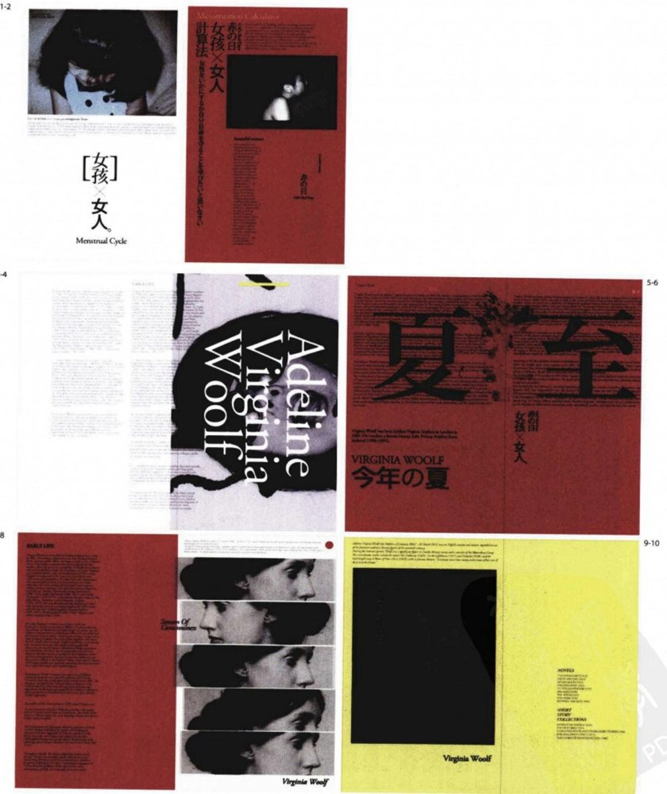
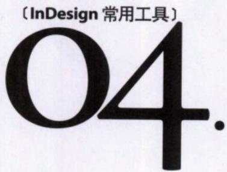
Study cues
- When designing letters, which would you decide first: proportion, stroke, serif or axis? Why?
- Find a composition that is too symmetrical and move just one line of type. Write down how the reading order changes before and after.
設計並不重要
Scope. This is a book of interviews with Hong Kong creatives, subtitled reflections on design. Lü Jingren wrote the foreword, and the interviewees include Kan Tai-keung, Barrie Ho, Freeman Lau, Tommy Li, Lee Chi-ching, Kenneth Ko, Mak Nga-sui and Liu Kit-lin. The title is a provocation: the book discusses design in ethics, education and the urban economy; it does not deny design itself.
Main ideas
- To look at a city's design, you can start by looking at how its advertising industry changes with the economy. The interviewees compare Hong Kong's experience with Beijing, Shanghai and Shenzhen.
- Kan Tai-keung's chapter treats design ethics as essential: beyond creativity, you need method, and you need to consider how designers see their own work.
- Without everyday aesthetic education, both individuals and the wider community lose their judgement. The book follows this from school out to the surrounding environment.
- Mak Nga-sui's section shows another kind of practice: combining illustration with products to make things with a sense of everyday life and an Eastern imagination.
Methods
- For each interview, note only one criterion the person uses again and again (such as ethics, method or education). Do not note their CV.
- Rewrite the title as "where does this design matter?": for the assignment you are working on, is it the form, the commission, or its consequences for users that matters?
- Compare what two interviewees say about "Hong Kong design". Write down one condition they share and one on which they differ.
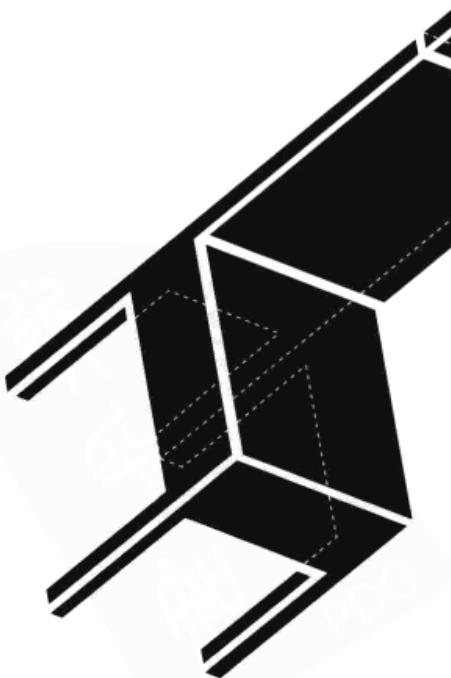
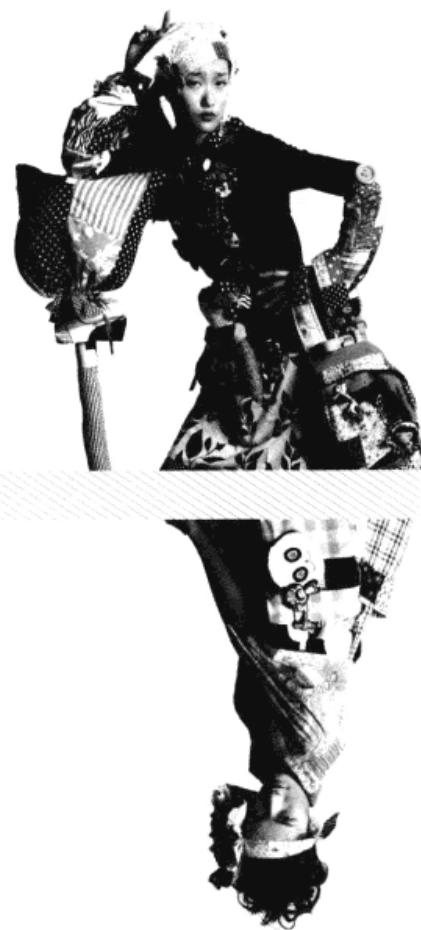
Study cues
- The book is called "Design Doesn't Matter". Using the ethics discussion in Kan Tai-keung's chapter, write down one thing you think really matters about design.
- Why does the interviewee say you can read a city's economy from its advertising industry? Which part do you agree with?
我的第一本設計書
Scope. This is an introductory book that demonstrates projects step by step. The first part is about logos, and later parts move into visual identity. A logo is developed in several directions: one the client will like, one the designer likes, and a more neutral one. The form is first made precise in black and white, then shown in mock-ups. It suits people designing a logo for the first time, helping them set up the sequence from sketch to vector to proposal.
Main ideas
- Once a sketch is chosen, move into software if it gives better control. Otherwise draw it accurately on grid paper and scan it in as a reference. Use only black and white as far as possible while shaping the form.
- The three directions must be genuinely different, not three colours of the same logo. The examples in the book lean towards fashion, retro and neutral respectively.
- Check the details after reducing the size: strokes that merge and parts that cannot be recognised must be fixed at this stage.
- Mock-ups are there to make the client stop at first glance. If a logo only reveals its quality after long study, the proposal needs a carrier that lets it be seen immediately.
Methods
- Always present three options, and state who each option is meant to please. Do not pad the proposal with five similar drafts.
- When drawing vectors, start in black and white, and use the pen tool and basic geometry to check each other. If a curve is not smooth, go back to reference shapes such as ellipses.
- When designing a business card or flyer, find the visual centre first, then think about printing. One page in the book points out that scattered information, no centre and chaotic type sizes are signals to cut information with the client first.
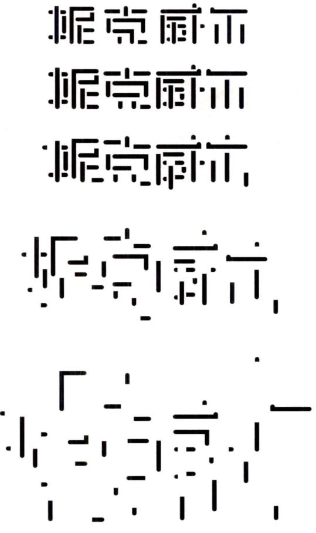
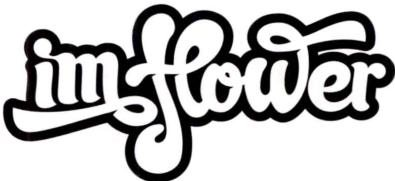
Study cues
- Make three genuinely different logo directions for the same name, and explain in one sentence each which kind of judgement it is meant to please.
- Why should the form be shaped in black and white first? If you add colour from the start, what will you miss?
平面設計過程
Original title: Graphic Design Process: From Problem to Solution: 20 Case Studies
Scope. This is a case-study book in the "American Visual Design School" textbook series, with the English subtitle "20 case studies from problem to solution". Each case first sets out the brief: goals, constraints, budget and time, then shows how the studio worked. A2/SW/HK, Dubberly and Johnson Banks are among those in the contents. Use it to learn how to read a brief, not to learn a particular layout style.
Main ideas
- A brief defines both strengths and limitations. The process starts with the first conversation with the client, and only then comes finding a solution.
- The case of the Turner Prize reading room at the Tate shows that being movable, reusable, of a fixed size, on a budget and with a six-to-eight-week deadline pushes the design towards modules.
- Conceptual art influenced this exhibition design, but the designers do not see themselves as artists. The physical form of the design must support the brief, not express inspiration.
- Other cases start with thick pads of sketch paper, or build the façades of city buildings out of type and then prepare a second, paler set of colours.
Methods
- When you receive an assignment, first rewrite the brief as sentences you can check: it must be portable, it must be reusable, it must be finished by a certain date.
- Once constraints appear, let them decide the structure. For example, the postcard size and the pencil that doubles as a pin both grew out of constraints.
- In your notes on each case, write only "how the brief changed the form". Ask whether the brief still stands if you delete the form, to judge whether you have understood it.
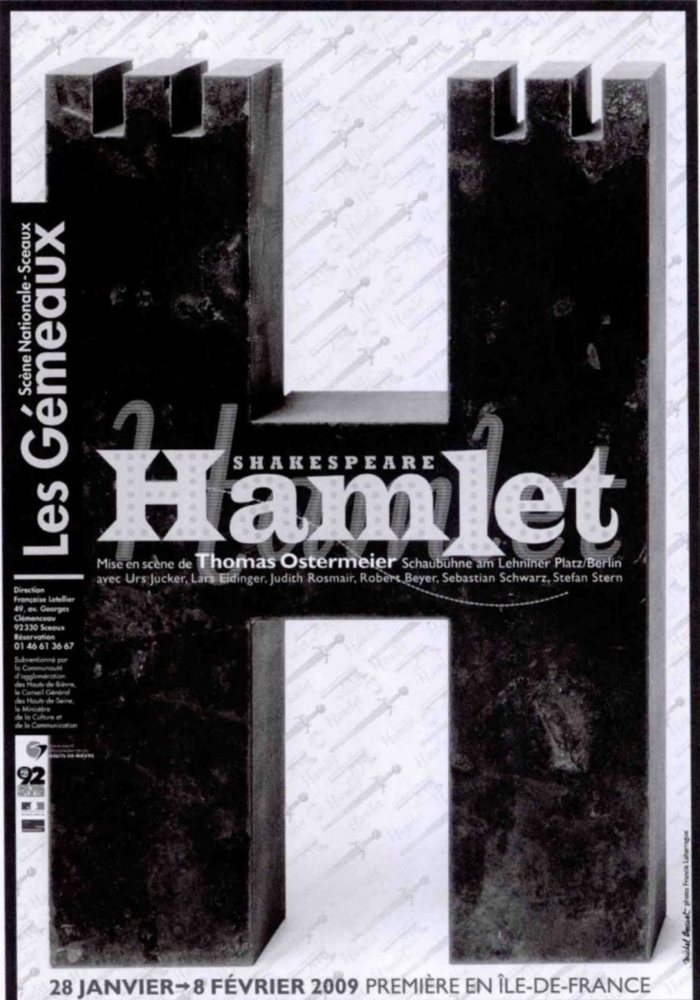
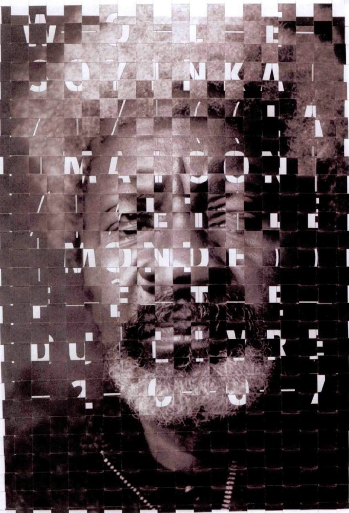
Study cues
- Rewrite your next assignment as five points in a brief (goal, size, deadline, budget, the parts that must be reused). Which one is most likely to change the form?
- Why can the statement "we are not artists" sit alongside exhibition design in the manner of conceptual art?
小平面
Scope. This is a book of case studies of small printed items: business cards, letterheads, postcards, menus and limited-edition gifts. In his foreword, Mok Hong-sun says that an area smaller than a business card can hold a name, an identity and the conduct of a company all at once. Use it to bring the basics of graphic design back to a tiny space, and to see how a big idea can be carried by a very small object alone.
Main ideas
- The foreword describes the business card as the smallest stage: from the small task of giving contact details to the large one of corporate identity, with typeface, colour and concept in between.
- The attitude of the title is to think big and act small. An idea that can spread widely can also live on just one small card.
- The cases include Stefan Sagmeister's personal business card, a series of letterheads and menus, and a Christmas gift that puts seeds and planting instructions into a cup.
- A small object has to answer at the same time: who is it for, why is it being passed on, and which message is it carrying?
Methods
- When designing a business card, first write down its function (name and contact details), then the one thing it should make people remember. Both must survive at small size.
- When designing a series (menus, letterheads, postcards), keep one structure and change only the content. Check whether people can tell they come from the same company.
- If an object is small enough to be posted or held in the hand, design "the order of opening" too, like the cup of seeds in the book.
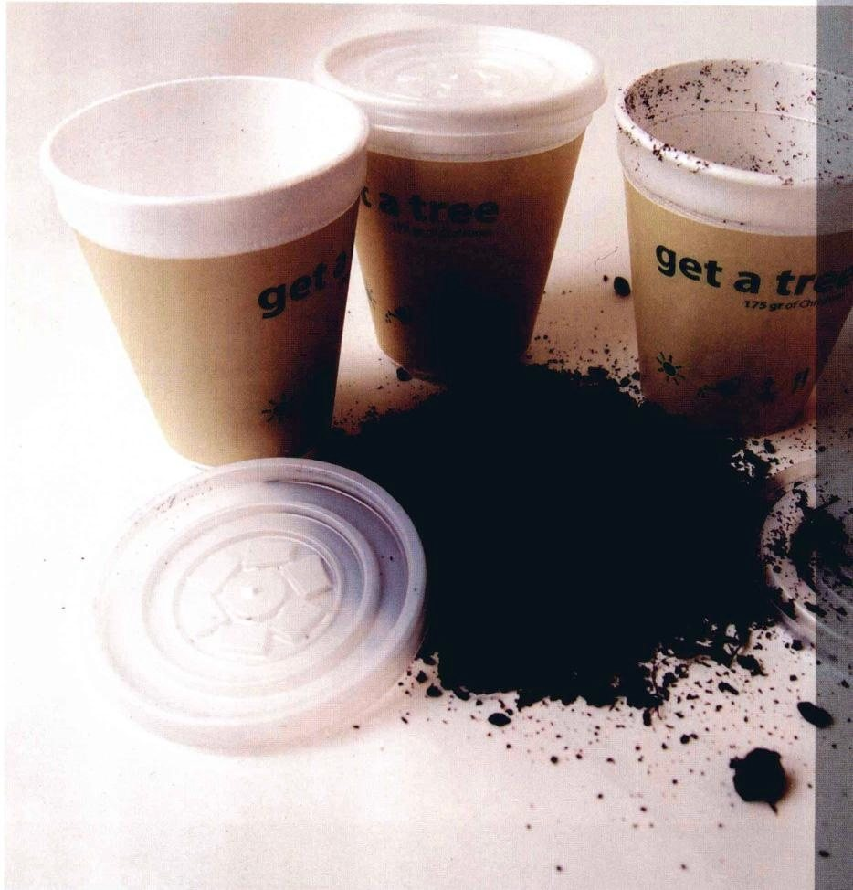
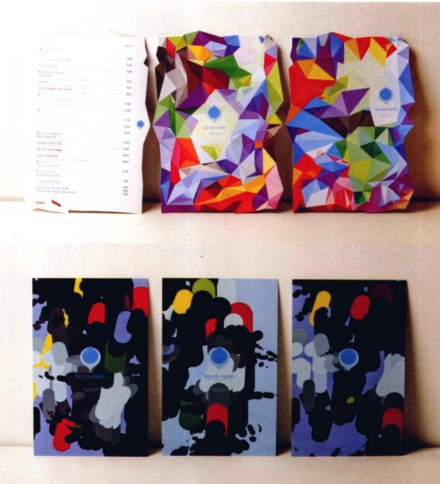
Study cues
- Design the front of a business card for yourself, allowing only one extra visual decision. What does that decision communicate?
- If you remove the instruction card from the seed cup gift, is the design still complete? Why?
北歐設計
Author: Wang Shaoqiang
Scope. This is a collection of interviews on Nordic graphic and related design, with studios grouped by country, such as Grandpeople from Norway and Tsto from Finland. The bibliography also lists a translator, Zhao Donglei. One Danish interviewee's answer represents the book's line of questioning well: Nordic design is often described as clean, but they would rather talk about concept, function and the differences between the countries.
Main ideas
- The Danish approach stresses modernism and function. There must be an idea behind the visuals; form is the result of following principles through.
- Scandinavia shares dim daylight, restrained colours and minimal methods, but the countries are not the same. The interviewee thinks Denmark uses folk motifs less and is closer to European modernism.
- Copenhagen is described as somewhere between a big city and a small town, which makes it easy to work across disciplines. If you live there too long you lose your sensitivity to the place, so you need to travel.
- Globalisation has not erased local character. Local and global views change together, and copying a trend does not make your work Scandinavian design.
Methods
- For each studio you read about, note the country, one project and one misunderstanding they reject (such as "it's just clean").
- For a "Nordic style" assignment, write down the concept and function first, then decide on white space and colour. If the work still stands after you remove the concept, you have only made a surface.
- Compare one project each from two countries in the book. Point out one thing they share and one thing that cannot be swapped.
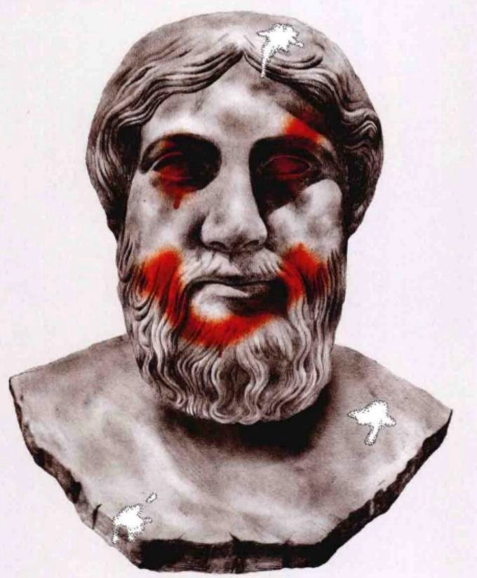
Study cues
- Using the interviewee's words, explain how Danish design differs from other Nordic countries on the question of folk motifs.
- Why does the Tromsø piece use both tiny type and fluorescent type? What is each decision responsible for?
王志弘作品收集
Author: Wang Zhi-hong
Scope. This is a portfolio of Wang Zhi-hong's book and layout work. The material is mainly fragments of text left after covers and promotional pages were scanned. What can be made out is a group of books he designed: Jun'ichiro Tanizaki, Kenya Hara's 《白》, Natsuhiko Kyogoku, Akira Kurosawa's 《蝦蟆的油》, Japanese photography, Herman Miller and the Eameses, as well as novels and poetry collections. Use it to see how a designer handles very different texts through covers. The written descriptions in this material often do not join up.
Main ideas
- This is a portfolio, not design theory. The "point" of each page lies in how the cover responds to the character of that book.
- Literary books, design books and photography books are placed in the same body of work: white, paper, shadow, ghost stories and photography each have a different voice.
- From the surviving promotional lines you can see that his covers often have to build up memory, labyrinths, death or the atmosphere of an era, rather than summarise the content.
- Because much of the text cannot be read continuously, treat the images as the main subject when you use the book, and only record which design goes with which original book when you can recognise the title.
Methods
- Choose five covers and write for each: what kind of text the original book is, and which visual decision the cover uses (type, empty space, photograph, symbol).
- Compare the cover of 《白》 with the cover of a ghost-story book. The same designer can be very quiet or very dense, and both density and quiet must serve the text.
- If the text on a page is already fragmented, it is better not to take notes than to string the fragments into a sentence he never said.
Study cues
- If you had to design covers for a book about "white" and for a ghost-story book, which design decision would you change?
- How do a portfolio and a book of interviews differ in their use for learning design? Which kind is this book?
做喜歡的事：25 個亞太創意設計工作室
Scope. This is a book of interviews about running a studio, featuring twenty-five creative design studios in the Asia-Pacific region. The preface comes from OHM, a co-working space in Taiwan, and the main text is organised by management, staff, systems, communication, finance, marketing, clients and projects. It suits people who want to open their own studio, to see how day-to-day work runs, not to imitate a particular style of work.
Main ideas
- OHM's story is this: rent a large space, share the rent, bring in design-related micro-businesses, and use gatherings to let newcomers practise asking questions and quoting prices.
- Management is described very concretely: when there is more than one designer, a studio will not have just one style, and the head must let people take part in projects rather than just hand out tasks.
- The structure of the book is itself a checklist: staff, systems, training, finance, developing clients and expanding the business.
- Some studios write their goal as: the people working here in the future should still be happy and keep their enthusiasm for every project, rather than becoming a bigger company first.
Methods
- If you are planning a group, first fill in a few of the book's columns: who designs, who deals with clients, how money is handled, and where new clients come from.
- In meetings, use their questioning exercise: each person brings one real question (how to quote, whether to join a big company or stay), and the others only give advice.
- When reading about each studio, separate "the work looks good" from "how this company survives". Keep only the second in your notes.
Study cues
- Use five words for the things you think a small studio must decide first: people, money, clients, premises, work. Which one do you have no idea about yet?
- Why is "subletting space" described in the preface as part of design practice?
做喜歡的事：25 個歐美創意設計工作室
Scope. This is the Europe and America volume of the same series. Twenty-five studios talk about how to start, how to work, and how to get the company noticed. The contents run from planning, your own strengths and working habits to naming, choosing a location, registration, equipment, systems and brand promotion. One interviewee defines graphic design as communication: a good designer must understand people's behaviour and desires, because you are speaking for someone to another group of people.
Main ideas
- The Europe and America volume returns more often than a business checklist would to "why do design". Communication is described as several senses plus thinking, not just logos and typefaces.
- A studio's uniqueness, consistency and reason to exist are treated as questions to answer before opening.
- The practical side is very concrete: name, address, interior, tools, business cards and online promotion.
- The cases show that handwork still has a place in commercial packaging: for example, a CD package made with sand art, creating three-dimensional scenes in black, white and grey.
Methods
- Before opening a studio or forming a graduation group, use the book's contents to write one page: strengths, habits, uniqueness, and how to stay consistent.
- For each piece of work, ask who it is communicating with and what it wants them to feel, rather than just recording the names of techniques.
- Start brand promotion with the smallest objects (logo, business card, one web page), and check whether all three say the same thing.
Study cues
- Rewrite your definition of graphic design in terms of "communication", and add: which thing about people must you understand for the design to work?
- How does the sand art CD package show that packaging can go beyond "printing a cover"? What might it cost?
設計修辭法
Scope. This book uses fifty works to set out fifty design figures of rhetoric. The author says in the book that it and his earlier 《設計曼茶羅》 are two sides of one coin: that book looks at thinking through keywords, while this one draws figures of rhetoric out of real objects. Most of the works are objects and spaces, such as a spiral cup, paperweights, chairs and a teahouse. Use it to learn how to give a formal move a precise name. This material does not give the author's name, so none is added here.
Main ideas
- Rhetoric here means thought, method and the outward expression of the work all at once. One keyword often runs through several works; it is not one to one.
- The fifty works are linked into a relationship map. One object can contain vagueness, spirals, stacking, memory and negative creation at the same time.
- The examples in the book stress that design can make the user a designer too, so that the two sides resonate in their thinking.
- Form often responds to mathematics or nature. Minimalism, light, bodily sensation and inside-out reversal are all treated as methods that can be clearly described.
Methods
- When looking at your own assignment, force yourself to give its main move a short name like those in the book (stacking, reversal, spiral, drifting). If you cannot name it, the move has not been thought through yet.
- Draw a small relationship map: the main figure of rhetoric in this work, and the two others it connects to. Do not let every word be equally important.
- If you want users to help complete the work, write down the step they have to take, so that, as the book says, the user also becomes a designer.
Study cues
- Give your most recent assignment a "figure of rhetoric" of no more than two or three words, then write down two other words it connects to.
- What kind of form is needed for "the user becomes a designer"? Explain using a paperweight or another object you can handle.
設計與死
Author: Masayuki Kurokawa
Scope. This is a collection of essays by Masayuki Kurokawa, ranging from hotels, objects, companies and the deaths of friends to the question of whether design has a soul. The name in the bibliography is incomplete, but the title matches Masayuki Kurokawa, and the text is written in his first person. It is not a methods handbook. Read it outside your technical classes to see how one designer brings together life, making and beauty.
Main ideas
- If design is to resonate with others, it has to start from a very specific "self", not from an average user.
- Learning and creating are compared to breathing, and he also judges life and death by breathing. Design is therefore not a plan of endless accumulation.
- He doubts the twentieth-century kind of harmony in which everything has to be "planned", and also discusses company size, publishing under your own name, and the hobbies behind design.
- Chairs, the Pure Land paradise, the beauty of the body and desire are all gathered into one question: why do people make things?
Methods
- As you read, keep only one sentence from each essay that you disagree with. The book is useful because it forces you to respond, not because it provides steps.
- Do a small autobiographical exercise: start by writing about an object you have really used, then ask how it relates to "limited time".
- Bring the book's question into critiques: "Does this object have a specific person in mind?", to avoid talking only about target groups.
Study cues
- Where do "you can only resonate with others by starting from your particular self" and "design must serve many users" conflict? Which side are you on?
- Why is this book unsuitable as a textbook for software or layout? Which part of how you design can it still change?
設計的覺醒
Author: Ikko Tanaka
Scope. This is a collection of Ikko Tanaka's writings, and its first chapter is about Muji. He writes about materials, no-brand goods, everyday life and the first standalone shop in Aoyama, then about posters, lettering, patterns, the Rinpa school and the reputation of Japanese design abroad. Use it to read how "the design of everyday goods" becomes an attitude to life, and how a poster designer views simplification.
Main ideas
- Muji's character comes from its materials. The typeface and colour of the wordmark restore this character rather than adding a luxurious logo on top.
- In a world of luxury goods, it sells the everyday, the reasonable and the comfortable, so he describes it as a symbol of "fashion for ordinary people".
- Products that still stand up once the brand is removed are compared with products that have no character without their labels. The thinking goes in at the moment materials are chosen.
- He sees the Aoyama shop as a turning point: a standalone shop in a district where information and fashion gather lets this voice be heard better than staying in suburban department stores. The later problems were that customers and products did not match across different shops, and that after mass production, caring about materials made things more expensive.
Methods
- When working on a brand, write about materials and use first, then draw the logo. If the logo would still seem to work on a different product, it has not yet connected to the object.
- Test packaging with "what is left once the name is removed?" What remains should still be the character of the thing.
- When reading the chapters on posters and patterns, ask which Japanese visual tradition simplification has kept (such as Rinpa or stripes), rather than just talking about white space.
Study cues
- Using Ikko Tanaka's logic, explain why Muji's wordmark cannot be replaced with a more ornate logo.
- Why does he see the location of the first Aoyama shop as a strategy, not just an address?
平面設計死了嗎
Scope. This is the record of a multi-person conversation about whether print design still has a place. Li Degeng, Jiang Hua, He Daokuan and others discuss shrinking newspapers, schools that still divide courses into posters and packaging, the non-linear nature of electronic media, and designers starting their own work when there is no commission. Use it to think about whether the purpose of graphic design should change once the media change.
Main ideas
- The conversation puts together falling print advertising, print magazines closing and new media making it easier to find work, and concludes that print-based graphic design is losing its old position.
- Moving from print to electronic media is not just a change of tools. Print culture tends to be linear, hierarchical and one-way; electronic culture tends to be non-linear, without fixed hierarchy, and multi-directional. Grids and the relationship between text and image both need to be re-evaluated.
- There are also opposing voices: Irma Boom's book design shows that in a dematerialised environment, a book you can touch becomes more valuable.
- When there are no timely commissions, designers become authors and start their own design projects. This is presented as a reality, not as a more sacred identity.
Methods
- As you read, keep the speakers apart. The same book contains two judgements, "print is a sunset industry" and "books are more precious", so do not merge them into one sentence.
- Check your own course habits: do you divide assignments into posters, packaging and web pages, or by the media a message needs to live in?
- Try a small experiment: make the same content into one printed page and one branching screen flow, and write down where the hierarchy disappears.
Study cues
- Using the book's contrast, write one sentence each on the reading habits of print culture and of electronic culture.
- In the book, is "designers become authors" praise or a description of a difficulty? Support your view with what is said around p.76.
放眼德國設計
Scope. This is the Germany volume in the 《放眼設計》 series, put together in the manner of a design magazine: designers' recommendations, interviews, and separate chapters on graphic and product design. Xiang Fan, Liu Yang, Jamy Yang and others talk about what they saw in Germany, and the projects range from record sleeves and Berlin visuals to an exhibition focused on process. Use it as a sketch of one country's contemporary design, to compare whether "German design" means durability, systems or a cultural scene to different people.
Main ideas
- The recommendations describe design as solving functional and psychological problems, and stress that you can see studios from other countries through a book like this without going abroad.
- The contents are structured as outlook, creativity, graphics, products and exchange, with topics such as the creative industries and "contentment brings happiness" in between.
- Interviewees are asked about specific impressions: what struck them most while studying and working in Germany, and which kind of design is most memorable.
- An exhibition called "Open Process" puts the emphasis on process, and the finished works were only later taken to the DMY Berlin design festival. The process itself is treated as something that can be exhibited.
Methods
- For each chapter, write one sentence on what "Germany" means to that designer, then see whether their work supports it.
- Borrow this structure when you survey local design: ten questions, a few studios, a set of graphic work and a set of products. Do not start by writing national stereotypes.
- If a project exhibits its process, your notes should record which step of the process becomes visible, not just the final poster.
Study cues
- What did you originally think "German design" was? Which project in the book changed that impression?
- Why can an exhibition show only process? What are visitors meant to see there?
放眼法國設計
Scope. This is the France volume of the same series; the bibliography credits Wang Shaoqiang as producer. It starts with studios that work in paper: Le Creative Sweatshop, Zim & Zou and Paper Donut, then divides into romance and reason, graphics, products and design exchange. Use it to see how handmade paper craft, art direction for luxury goods and public issues sit side by side in contemporary French design.
Main ideas
- The opening outlook section is almost a special feature on paper: perspective on paper, real and imagined scenes made of paper, and using paper to carry messages.
- Later topics place French design between romance and reason, and also include colder, fiercer aesthetics, so that it is not reduced to elegance alone.
- The product chapter discusses public spirit, and the idea that "unfinished" can also be a way of making.
- The exchange chapter sets French practice beside studios of Asian designers, so the book is both a picture of France and a record of dialogue.
Methods
- When looking at paper work, write down what the paper is doing: structure, message, or just texture. If it does all three, mark which is primary.
- Place each case on a "romance/reason" scale, and write down which decision in the image pulls it to one side.
- For a materials exercise, choose one kind of paper, make a small structure that can stand up, then write one sentence on what it communicates.
Study cues
- Why does the France volume open with three studios that work in paper? How does this affect your understanding of "French design"?
- If "unfinished" is a product strategy, how does it differ from an assignment that was not finished?
漫遊英國設計
Scope. This is the British volume in the Roaming series, also built from interviews and projects. In the foreword, George Hardie says that the most attractive thing about British design is its diversity: traditional techniques make modern things, small studios do not grow big for the sake of it, and large companies do commercial work while also nurturing independent designers. Use it to see how design education opens up the boundaries between illustration, type, new media and handwork.
Main ideas
- What Hardie is proud of in British education is hands-on making: teachers set requirements without one correct answer in mind, and process and feedback matter as much as results.
- He also stresses citation and copyright, and that students may challenge their teachers. Diversity is presented as the result of questioning and trying things out.
- The London Underground map is treated in the book as a model that is hard to beat: it lets people directly understand speed and destination.
- The interviewees often talk not about lists of styles but about how people and cities change their work, such as meeting completely different people in London.
Methods
- When reading the foreword, break "diversity" down into observable facts: media, scale and ways of teaching. Do not treat it as a word of praise.
- When analysing a transport map, ask what geography it removed and what clarity of use it gained in return.
- When doing survey interviews, borrow the book's question: living there, was your deepest impression of the people or the landscape?
Study cues
- Using Hardie's foreword, list three concrete conditions that make British design look "diverse".
- If the Underground map were redrawn to true geography, which use described in the book would it lose?
漫步日本設計
Scope. This is the Japan volume in the Strolling series, linked to the Design 360° brand. The main text is interviews with designers; Masaaki Hiromura, Hideki Nakajima, Wu Dong-long, Makoto Tanijiri, Megumi Matsubara, Ryuji Nakamura and others are in the contents, and it opens with a long essay on design and everyday life. Read it alongside Ikko Tanaka and the book on tactile design: one is the designer's own essays, one is about the touch of objects, and this one is the spoken account of contemporary practitioners.
Main ideas
- The opening argues that design does not count as creation only when it stands at the front of its era. Seeing familiar life as unknown and developing it again is also creation.
- Technology moves faster than any individual's knowledge. Design still holds the ideal of "form and function", so while it works within the economy it can keep a kind of calm inquiry.
- Good understanding brings joy. Design is defined as coming to know the world we live in through creation and communication.
- The Japanese designers interviewed describe visual communication as the designer's core job; one also says that Japanese people are not afraid of change, that change and continuity go on together, and that this is where refinement grows.
Methods
- Do a one-week exercise on "new questions in familiar things": each day, record one everyday object you have overlooked and ask just one new question about it.
- For each interviewee, note one method. Paths like Masaaki Hiromura's (leaving Ikko Tanaka's office to go independent) help you understand lineage; do not use them to imitate visuals.
- Write three sentences each on the "Japan" in this book and the "Japan" in 《設計的覺醒》, and see which judgements repeat.
Study cues
- Which does the opening of the book value more, "treating the familiar as unknown" or "inventing a form no one has seen"? Why?
- If you could ask a Japanese designer only one question, would you ask about lineage, materials or change? Explain with one name from the book.
荷蘭設計
Scope. This is a question-and-answer collection on contemporary Dutch graphic design studios. Each studio gives its clients, a profile and key works, and answers the same questions: who influenced them, how they work on a normal day, whether graphic design needs a social conscience, and what they learned at school. 75B, Beautiful Minds and others appear in the contents. It is a spoken account of the current state of the industry, not a design history of Dutch modernism.
Main ideas
- 75B shows that a studio can be set up in an environment with public support and can make design playful and strange, less serious.
- They claim their influences come from artists, comics, bands and footballers more than from other designers.
- The book asks about social conscience again and again, which shows that it is a legitimate question in Dutch graphic design debate, not an optional extra.
- Another studio, Beautiful Minds, is introduced as creating visual communication strategies for companies, and has been nominated for design awards. The question-and-answer format lets different studios be compared side by side.
Methods
- Use the book's four questions to interview a local designer, and compare the answers with 75B's to see how the environment (whether there is public support) changes the tone.
- For each studio, note only one key work and one sentence of self-positioning (playful, strategic, social). Do not copy out a whole client list.
- When discussing "does graphic design need a conscience?", require yourself to give an example of a commission you would turn down because of it, so that you do not stop at attitude.
Study cues
- 75B says design can be playful. Under what conditions does this not turn into "not having to be responsible"?
- Interview yourself with the book's questions: what is one thing you really learned at school and can use now?
設計的手感
Scope. This is a book of case studies in handmade graphics. The contents are a long list of projects: comic techniques, clay illustration, recycled paper, balloon cards, cardboard letters, Coca-Cola calligraphy, tape installations and giant infographics. The opening judgement is that the weight of handwork never goes out of date, and people's feeling for handwork will not fade. In a term full of software assignments, use it to remember which decisions your hands can still make.
Main ideas
- Handwork here is not a nostalgic category but a way of working that is still active in brands, posters and installations.
- The materials range widely: plasticine, ceramic clay, polymer clay, paper, tape, balloons, and tattoo-style images on glass bottles.
- Many projects start with a sketch and then turn the sketch into something you can touch. Three-dimensional illustration is one clear route.
- The project names show that the commissions are still there: rebrands, festivals, posters and packaging. The handmade feel has not left commercial work.
Methods
- Choose a logo that would normally be made in software and remake it in a material (paper, clay or thread). See where the identity survives.
- When making handmade images, keep the first sketch, place it beside the finished piece, and write down the stroke the material forced you to change.
- When collecting cases, file them by material, not by "looks good". Look at at least three pieces in the same material before you know what it can do.
Study cues
- Why does the statement "handwork never goes out of date" need examples to support it? Choose one work from the book that still serves a brand.
- Make a number or a letter into an object you can touch. Which kind of meaning does the material change?
歲寒三友：詩意設計作品集
Scope. This is the catalogue of the 2004 invitational poster exhibition "Three Friends of Winter: Poetic Design". The exhibition was sponsored by the Li Ka Shing Foundation and jointly organised by the Academy of Arts & Design at Tsinghua University and the Cheung Kong School of Art and Design at Shantou University. Nearly a hundred designers from the mainland, Hong Kong, Macau and Taiwan contributed almost two hundred posters, on the theme of traditional Chinese graphics and modern visual design. Pine, bamboo and plum blossom are the subject, and also an experiment in cultural identity.
Main ideas
- The editors hope to carry on and renew tradition with Chinese culture as the base, and present this as a contribution to world design, not just a stylistic revival.
- Traditional graphics are seen as a resource left by thought, religion, ethnic groups and folk custom. Looked at again from the present, their forms and meanings can become a recognisable cultural identity.
- The exhibition followed a symposium on the same theme, and aimed to turn research into posters and build exchange between the mainland, Hong Kong, Macau and Taiwan.
- The catalogue shows different approaches: language, water, pine, bamboo and plum, calligraphy, oracle bone script, and series that set tradition beside the modern.
Methods
- For each poster, write two words: the traditional form it borrows, and what it wants to say now. If the two words do not match, mark it.
- When doing your own "traditional graphics" assignment, first choose a form with a meaning (pine, bamboo, plum or something else), write down the meaning, then allow yourself to change the form.
- Compare two designers on the same theme (for example Chen Nan and another in the book), and see whether identity is built by piling up symbols or made through structure.
Study cues
- If pine, bamboo and plum are drawn only as three plants, has the exhibition's theme been fulfilled? What step is missing?
- Choose a poster in the book that you understand, and write down the tradition it keeps and the part it rewrites.
廣州美術學院碩士研究生作品集
Scope. This material presents both design education at the Guangzhou Academy of Fine Arts and a set of built projects and student work. The title says it is a collection of master's students' work, but the contents also include staff work for the sixtieth anniversary and public projects (the Zhuhai Fisher Girl, the Guangdong Hall of the Great Hall of the People, Xinghai Concert Hall, hotels). The longer readable text is the academy describing its own leanings: solving problems, serving society, and being taught by staff who have really practised design in the market. The bibliography lists Zhao Jian and Lingnan Fine Arts Publishing House; the main text names no separate author, and the publisher is not listed here as the author.
Main ideas
- The academy admits that it values social and economic worth more, seeing design as solving needs for others; it says less about pure aesthetics and artistic ideals.
- Between innovation and problems, it leans towards problems and constraints. Staff should ideally have market experience and stories of their own.
- The direction of reform is spelled out: from technical design towards wider value, from single problems towards causes and consequences, and gathering the programmes into three clusters: space, product and visual.
- In teaching, it wants to replace fragmented linear courses with a project-based system, and to add some experiment alongside the market focus, to set itself apart from purely vocational training.
Methods
- When reading the images of work, look for the project description first: who commissioned it, what the constraints were, and which problem of use the design responded to.
- Use the academy's own contrast to assess assignments: is this solving a defined constraint, or just expressing an ideal? Both are possible, but you should know which side you are on.
- If you are doing a research-based master's project, write down the causes of the problem and the chain of consequences after it is done, not just a description of the finished product.
Study cues
- Using the language of this self-description, explain how "designing for others" and "designing for your own artistic ideals" differ in a critique.
- Why does the office space project deliberately avoid warmth? Which value stressed by the academy does this match?
靳埭強與格呂特納的海報對話
Scope. This book sets the posters of Kan Tai-keung and Erhard Grüttner side by side, with text in Chinese, English and German. The German preface praises Kan's posters as compressed visual information with lasting power, showing his responsibility towards his cultural background, in contrast to short-lived trends. The subjects include politics, a tribute to Ikko Tanaka, paper, liberty, equality and fraternity, and opera and theatre posters. Read it as a dialogue between two poster languages, not as a book of poster techniques.
Main ideas
- The preface argues that Kan's posters have both a very high density of information and a place for humanity: the audience is assumed to be able to accept an intelligent art form.
- The two designers' graphic languages differ, but their demands on the poster as a medium are described as the same.
- The subjects show how wide the dialogue is: commercial printing awards, group exhibitions, politics, cities, and paper as a design material.
- Paper here is not just a carrier. At one point the book says that paper can leave space for the designer.
Methods
- For each pair of posters, compare only one thing: is the message compressed into a single image, or broken into a set of symbols?
- For a tribute assignment, state whether you are paying tribute to a method or a style. If a tribute to Ikko Tanaka is reduced to a red circle, there is no dialogue yet.
- Choose a theatre or social subject, first write one sentence that must be seen, then decide whether the poster takes the restraint of Kan's side or the directness of the other.
Study cues
- The preface says the two graphic languages differ but their demands on the poster are the same. What is this "demand"?
- If you made paper the subject of a poster (not just the material it is printed on), which property of paper would you make visible?
靳埭強設計獎
Scope. This is the catalogue of one year of the Kan Tai-keung Design Award. The readable parts explain that the competition aims to give young designers a chance to show their work and has become one of the most influential competitions among design schools. This year's theme was the character pin (meaning character, quality and taste). The judges included Song Xiewei, Ma Quan, Han Xu, Wang Shanglin, Jiang Hua, Wu Yong, Toshiyasu Nanbu and Han Jiaying. The text around the plates is almost impossible to read in this material, so do not describe the winning works from those fragments.
Main ideas
- The competition is seen in the context of design education: how to turn education into a practice that produces creativity and can enter into international dialogue.
- Pin is the character used to set this year's brief. The catalogue should be read by first reading the explanation of the theme, then seeing whether the works respond to it.
- The book gives a fairly long introduction to Kan Tai-keung's awards and teaching, to show the people behind the judging and the competition, not to replace the student work.
- Where the text on the plates fails, the book can still serve as a list of judges and an archive of themes. Exact rankings and images should be taken only from clearly legible printed matter.
Methods
- First write in your own words how pin could be designed (a person's character, the quality of work, taste), then compare it with the explanation of the theme and see which layer you missed.
- When looking at the plates, cover up the incomplete captions and judge only: is the theme there, and is the hierarchy there? Do not make up stories for words you cannot read.
- If you use it to prepare for the competition, study how the theme constrains form, and which areas of practice the judges come from.
Study cues
- Write three different poster lines for pin. Which is easiest to make visual, and which most easily becomes empty words?
- Why is this material unsuitable for retelling that year's winning works?
陳幼堅最新作品
Author: Alan Chan
Scope. This is a monograph of Alan Chan's work. The projects include Three on the Bund, Qeelin, Coca-Cola, Baishayuan, Modern Media, Francfranc, the Mandarin Oriental spa, and brands of the "Made in China" kind. The book also includes exhibition pieces: cultural icons built from rice bowls and tableware, and "A Whole New Game", which pairs up international brands two by two. Use it to see how commercial identities and exhibition installations share the same set of Eastern and Western ideas.
Main ideas
- "One bowl of rice feeds a hundred kinds of people" is used to show that different people take different nourishment from the same source. Tableware is assembled into figures such as Bruce Lee, Marilyn Monroe and Mickey Mouse; real people and fictional characters can both become cultural labels.
- "A Whole New Game" puts Adidas with Nike, McDonald's with KFC, Microsoft with Apple and so on, depending on each other like yin and yang.
- The commercial projects show the same method applied: a Chinese name must be easy to say and write, and a shop should feel as approachable as opening your own wardrobe.
- Read the monograph for its systems, not for single attractive images. One idea appears in exhibitions, packaging and spaces at the same time.
Methods
- When analysing a project, list three carriers it appears on. If the three carriers each say something different, the system has not yet formed.
- If you borrow the "pair of brands" exercise, write down why each needs the other, rather than just putting their logos together.
- When creating a Chinese brand name, do a reading-aloud test: can someone who does not know the brand say it and write it roughly correctly?
Study cues
- What kind of structure does the "bowl of rice" exhibition idea share with a commercial brand identity?
- If you pair two competing brands only for visual symmetry, which layer of meaning from the book do you lose?
平面設計八人
Scope. This is an illustrated collection on eight graphic designers, with the translator credited as Fan Ke. The most complete readable section in this material is on the Japanese studio K2: Seitaro Kuroda and Keisuke Nagatomo, with Yoshio Hayakawa's account of them. Among the plates you can also make out pages on Alan Chan, a Hitchcock film festival and jazz posters. The full list of the eight cannot be determined from the incomplete contents alone, so rely on the chapters you can read and the posters you can see clearly.
Main ideas
- K2 did not want to chase "good design, personality, the avant-garde, what no one has done before". They wanted to run an office that sees things through from start to finish.
- The two teamed up because both their names contain a K, and they set shared rules from the start to avoid the falling-out that often happens when friends work together.
- Kuroda's posters are described as unconventional but friendly; Nagatomo won an award for a Jantzen swimwear poster, drawing the profile of a beach girl in highlighter pen.
- Yoshio Hayakawa believes that Kuroda's illustration combined with Nagatomo's ideas widened what "graphic design" meant to them.
Methods
- When reading the chapters on people, note the studio's goals, not lists of awards. K2's goal was to get things finished.
- When looking at the poster plates, write down the commission (a furniture company opening, a film festival, a concert), then see whether the form lets that commission be seen at a glance.
- Before a group assignment, write three shared rules. The lesson of the book is that rules must be set before any interests arise.
Study cues
- K2 refused to make "what no one has done before" their goal. What did they put in its place?
- Why does the book think friends who open a studio together should write rules first?
設計集
Author: Wang Shouzhi
Scope. This is a collection of essays on design by Wang Shouzhi. The contents run from Sottsass, Argentine design, German design culture, the Italian furniture company Arflex and Koziol to Berlin, contemporary Dutch graphics, and what "total design" means. Read it as a set of profiles of figures in design history: he writes about meetings, personalities and companies, not just style labels.
Main ideas
- The chapter on Sottsass starts with the red Valentine typewriter, places him back in Olivetti, post-war Italy and the later cultural rebellion, and stresses that he did not want to be reduced to a flamboyant style.
- The chapters on Germany, the Netherlands and Italy discuss design culture through specific companies and events in daily life: the World Cup, graphics in a small country, and the changes of a furniture brand.
- The status and the function of objects are separated. The chapter on drinking vessels explains that the point of some vessels is to display status, using materials such as gold, silver, jade and cloisonné.
- Koziol's story shows that a company can move from souvenir figurines to another kind of product; a brand's design history is often the history of its product lines.
Methods
- Use three lines for each essay's notes: the person or company, one representative object, and the misunderstanding the author wants to correct.
- When reading "German design" and "Dutch design", keep these essays separate from the country catalogues earlier on. These are commentary and first-hand impressions, not directories of studios.
- When analysing an object, write two columns: is it good to use, and what is it showing off? Both columns can be part of design.
Study cues
- Why is it not enough to say "Sottsass was flamboyant"? Which product and which stage of his life does the book also expect you to know?
- Choose an object you own and write down its function and the status it displays. Do the two answers contradict each other?
設計心法 100+1
Author: Kan Tai-keung
Scope. This is a set of 101 short pieces by Kan Tai-keung, ranging from "what is design" to creativity, designers, professionalism, education, visual identity, packaging, books, crossing disciplines and joyful design. The preface uses the image of a triangular wheel. It suits reading in spare moments, and each piece can become a question in a critique. His own words: after forty years of practice, he is still learning what design is.
Main ideas
- Design done well can be art; design done badly is rubbish. Whether it is art depends on quality, not on which profession it comes from.
- Education means developing observation, analysis and creative problem-solving, not vocational training. Mathematics and art are responsible for thinking and appreciation respectively.
- A brand is more than a logo. In the example of the jewellery brand Dian Jing Pin, a single curved surface lets a traditional trade enter the fashion market, and packaging and naming have to break the mould together.
- Learning is described as lifelong: from leaving tailoring for design, teaching at night and running a company, to creating city brands and reforming design education at university.
Methods
- Use only one piece at a time to revise an assignment. For example, "ask first whether the design is rubbish", and force yourself to cut the part that has no quality.
- When working on a brand, write three sentences at once for the name, the logo and the packaging, and check whether they break the mould in the same way, rather than only the logo trying hard.
- Keep a weekly journal on "what I am still learning". The book is meant to keep questions open, not to be memorised in full.
Study cues
- "Design done well is art; design done badly is rubbish." Using one of your assignments, explain whether "rubbish" means ugly or lacking in quality.
- Which part of a brand does the Dian Jing Pin piece say cannot rely on the logo alone?
靳叔說：設計語錄
Author: Kan Tai-keung
Scope. This is a book of questions and answers with Kan Tai-keung. The questions range from "what is design" and "what is good design" to content and form, art and commerce, how students should learn, and how students from the north and the south differ. Read it alongside 《設計心法》: that book is short pieces, and this one is his answers when pressed with questions. The tone is direct, and he often puts personal character, work and professional integrity together.
Main ideas
- Content matters more than form. If form cannot express content, it is only an empty frame. Personal style grows slowly through use; it is not a precondition.
- The quality of design includes creativity, spiritual content and craft. Good design can have artistic qualities, but design is design, not "pure art".
- The difference between design and art is that design is an economic activity carried out to reach a goal, needs rational analysis, and takes place in a commercial society. Abandoning principles just to make money is, in his view, the worst thing a designer can do.
- He asks students to care about creative culture across the whole Chinese-speaking region, especially working with Shenzhen and the Pearl River Delta; for the industry, he opposes "the lowest bid wins".
Methods
- Write two lines for every assignment: which sentence is the content, and which decision is the form. If the content survives when the form is swapped, the form has not really taken part yet.
- When you take on a commission, add a column for "things I will not do". The book describes refusing work that goes against your conscience as a professional act that takes courage.
- When reading assignments with classmates from the north and south, or from two different places, compare their awareness of the problem, not whose style is more fashionable.
Study cues
- Using Kan Tai-keung's answers, explain why "having a personal style" is not the starting point of design.
- How does "the lowest bid wins" change the quality of design? Explain with a commission you have seen.
設計的圖謀：改變世界的80個日常創意陰謀
Scope. This is design criticism of everyday objects. It is not a yearbook of work, and not the design history of one country. The author takes the Audi TT, Philippe Starck, the Mini, mobile phones, digital cameras, glasses and design hotels apart one by one, to see which old archetype is hidden behind each new form. It is good for practising the question "what is this object up to?"
Main ideas
- Most good things are not entirely new. A new design often turns an existing archetype into a symbol, then places it inside current technology.
- The Audi TT fixes the overall body first, then fits the lights and windows. From the side you can still see the shadow of the 1950s Porsche Speedster.
- Starck's inspiration lives in his hands: he tests materials by hand, then fits the shape into industrial specifications, instead of being tied down by the specifications from the start.
- New technology does not always bring new forms. Digital cameras, brands and shops often just put a new shell on an old idea.
Methods
- Choose an everyday product. Write down which earlier archetype it inherits, and what it deliberately changes.
- Draw one sketch for "the whole before the parts" and one for "the parts before the whole". See which is closer to the design order of the product.
- Ask: does the brand appear only on the product, or are the shop, office and website also designed, each by different people?
Study cues
- Use the Audi TT to explain what it means to "turn an old car model into a symbol", rather than copying an old car.
- Find an electronic product you use. Point out which part is new technology and which part simply keeps an old form.
遺產與更新：中國設計教育反思
Authors: Xu Jiang, Kan Tai-keung (associate editor)
Scope. This volume of reflections on education belongs to the series "Research on Chinese Design and World Design". It centres on the Bauhaus and Chinese design education, and it is not a technique manual. Xu Jiang's general preface asks: what can the Bauhaus actually give us? The book also takes the question to Taiwan, and to the aesthetics of the East as a place of manufacturing and consumption.
Main ideas
- The Bauhaus ran for only fourteen years. What it left behind was ideas: art joined with technology, craft valued as much as art, and an alliance between creating and making.
- "Less is more" is not just a style slogan. It shaped the later industrial aesthetic aimed at the mass public, including the simplicity of today's handheld products.
- The educational legacy is the workshop and the unity of mind and hand. Treating the Bauhaus only as the drawing foundation for every subject makes it smaller than it is.
- The East is now a place of large-scale manufacturing, large-scale consumption and a different way of life. Renewal cannot stop at "improving modern aesthetics".
Methods
- When reading the general preface, take notes in three columns: ideas of change, basic aesthetics, teaching methods. Copy one sentence for each, then rewrite it in your own words.
- Check your own foundation course: are you training materials and hands, or only practising one style?
- When discussing "Chinese design education", separate three things: imported ideas, local manufacturing, and your own world view.
Study cues
- Answer Xu Jiang's question in your own words: what can the Bauhaus still give design education today?
- If "less is more" is reduced to a look, which layer described in the book does it lose?
設計師演講錄：Icograda 世界設計大會
Scope. This is a record of the talks at the industry forum of the Icograda World Design Congress, not a personal portfolio. Long Yongtu's preface describes the design industry as a combination of manufacturing, culture and soft power. The talks that follow are grouped into sessions on benefit, harmony, exchange and definition. Speakers include David Kester, Patrick Whitney, Pan Gongkai, Kohei Sugiura and Victor Margolin.
Main ideas
- Here design is placed inside industry: it must link "made in China" with "created in China", and link manufacturing with culture.
- The forum's key words are rights and the public, challenge and opportunity, people's livelihoods and sharing, development and the future.
- Within the same congress, graphics, architecture, narrative and sustainability sit side by side. Design is not reduced to one poster style.
- Free expression still needs a sense of limits. Basic information must not disappear in the experiment.
Methods
- For each talk, note only three things: the speaker's question, one example, and one sentence you disagree with.
- Apply the four key words "benefit, harmony, exchange, definition" to your own assignment. See which one it is really answering.
- When you meet a famous name, do not copy the style first. First ask whom this speaker, at this forum, says design should serve.
Study cues
- Of Long Yongtu's three "combinations", which is closest to your assignments this term, and why?
- Choose one speaker and state their design question in one sentence. Do not just write their job title.
設計創意流程：用MBA思維成就設計高效能
Original title: Design and the Creative Process
Scope. This is a methods book that teaches the creative process through cases. It borrows management thinking to look at how design enters a business. It is not an MBA textbook, nor a catalogue of styles. The book sets side by side Stefan Sagmeister, OXO, the fashion designer Patrick Robinson, Hong Kong's Alan Chan, and Sussman's identity work for Newark.
Main ideas
- The point of the book is not to praise design. It looks at how innovators make decisions and how they get along with company culture.
- Sagmeister keeps change in his own hands: when music packaging moved from cassettes to CDs, the designer was using the new technology, not being dragged along by it.
- OXO's success depends both on its business model and on its judgement about everyday tools: durable, easy to use, good-looking and fairly priced.
- Alan Chan had almost no long formal design education, yet his work turns Hong Kong's meeting of East and West into a method. Design is seen as a tool for reaching the next goal.
Methods
- Write a process for one case, not praise: what were the constraints, which step did they change, and why did the company accept it?
- Apply "design is a starting point" to your own brief: once this image is finished, what does the user do next?
- Compare two of the people interviewed: one relies on a personal method, the other on a company system. Which does your assignment lack more?
Study cues
- Why does this book use business cases to discuss creativity, rather than only showing finished work?
- Choose Sagmeister or Alan Chan. Write down which step in his process you cannot yet do.
全球優秀93位平面設計師作品集
Original title: Atlas of Graphic Designers
Scope. This is a selection of graphic work from around the world over the past decade. Use it as a map, not a step-by-step manual. The contents run from phunk, Alex Trochut and Catalogtree to studios in many places, covering graphic design in cities, production and consumption. As you read, ask how each piece relates to the city it comes from.
Main ideas
- The book describes graphic design as a journey: you look at the work, and also at where it is produced and used.
- In the first decade of the twenty-first century, the city once again became the centre where signs are produced. Graphic design is the organisation of those signs.
- Informing, educating and persuading are presented as the three basic tasks of the discipline, with roots that go back to printing.
- Styles in this one collection differ greatly, so you cannot reduce it to a single "contemporary international style".
Methods
- For each designer, take notes in three columns: city or client; task (inform, educate or persuade); what is left if you remove the decoration.
- Do not collect work because it "looks good". Collect it by "what reading problem does this piece solve?"
- Choose two studios that are far apart and compare how they treat empty space and text.
Study cues
- Why does this book insist on looking at work through cities, production and consumption, rather than only sorting it by style?
- In two pieces of work, point out whether each one mainly informs, educates or persuades.
遊遊遊：說說我的設計私想
Scope. This is a book of musings on design. It links things seen in China and Japan through travel, materials and cultural ideas, and it is not a tutorial. It writes about Kenya Hara, Sori Yanagi and Sanlitun SOHO, and also about bamboo, packaging and "emptiness". It is good for learning how to turn one observation into a design judgement.
Main ideas
- Bamboo is used to explain "the East": its form stays connected from bamboo grove to bamboo strip, and it decays, so the things made from it carry a sense of impermanence.
- "Emptiness" is not an emotional metaphor. Using 《般若心經》 and Kamo no Chomei's 《方丈記》, the book explains that there is no fixed, unchanging substance: things are only temporary states within relationships.
- Wabi-sabi is described as a way of building "emptiness" into things, not a Japanese style you can stick on at will.
- A lack of harmony in packaging is sometimes not a mistake. Feelings of the moment may have entered the design unconsciously.
Methods
- Choose one material. Write whether it can still be recognised from raw material to finished product, and whether it decays.
- When you read about "emptiness" or wabi-sabi, first explain it in your own sentences, then decide whether to use it in your assignment.
- Look at a piece of packaging. Separate "harmony" from "deliberate lack of harmony", and give one piece of evidence for each.
Study cues
- Why does the book say bamboo makes people feel "the East" more easily than precisely machined wood?
- If you applied "emptiness" to a poster, would you change the white space, the materials, or only one line of copy? Give your reasons.
對話日本設計
Scope. This is a book of interviews on Japanese design. It is neither a general history of Japanese design nor a technique book. Interviewees include Kengo Kuma, Koji Iyama and Yoshiaki Irobe, and the questions focus on nature, business, users, region and culture. The opening sums up Japan's "design of beauty" as: carry out the work thoroughly, and be humble towards the environment.
Main ideas
- Japanese design in this book does not stress isolated beauty. It stresses getting the relationship between people, objects and environment right.
- Kuma redefines "large": it is not about a large footprint, but whether each unit people use makes them feel settled and safe.
- After the Great East Japan Earthquake, when even concrete and steel failed, he still chose local natural materials and proposed "small architecture".
- The graphic examples also distil: Kirin Beer turned its traditional trademark into a pop-style badge, and design is also used to tell stories after the earthquake.
Methods
- For each interview, write down the question first and then the answer. Do not just copy memorable quotes.
- Use Kuma's idea of the "unit" to check a piece of work: has the part that people actually touch been carefully designed?
- Translate "living in harmony with nature" into a graphic decision you can make: paper, ink, image density or white space. Choose one and explain it clearly.
Study cues
- Why can Kuma's "large" and "small" not be measured by volume?
- Compared with the words "minimal, white space", what two concrete things does the Japanese design in this book add?
設計師不讀書
Original title: Designers Don't Read
Scope. This is the Chinese edition of Designers Don't Read, a collection of short essays, each marked with its reading time in minutes. It is not a portfolio and not a software tutorial. It focuses on taking apart how design firms present themselves: why their website sections, business philosophies and "design processes" all sound the same.
Main ideas
- Many studio websites use the same set of sections and the same sales tone, treating visitors as clients who are already ready to order.
- This tone is close to the "assumptive close" of TV shopping: it assumes the other side is convinced before any working relationship exists.
- The book argues for writing in a human voice. You can use "I", or ask someone who really knows the firm to write a documentary-style introduction.
- Sagmeister making a separate page for students, and Sandstrom Partners preparing different content for different clients, are given as contrasts.
Methods
- Open three design firms' websites. Compare only the wording of their "philosophy" and circle the repeated sentences.
- Rewrite a self-introduction in the first person, and cut empty words such as "empower", "ultimate" and "one-stop".
- Write two versions for the same piece of work: one for classmates, and one for a client visiting for the first time.
Study cues
- What is an "assumptive close"? Why does it not suit the home page of a design firm?
- Rewrite your own thirty-word introduction so that people can hear it is you, not just any firm.
設計質
Scope. This is a design read in magazine format, divided into sections on space, faces, public good, art and reading. It is not a methods book, nor the design history of one country. Its samples include the architectural practice of Penda, and spaces by Kengo Kuma and the NIMB hotel. Read it as a slice of contemporary practice.
Main ideas
- The book describes spatial design as a bridge connecting people and nature, not just a display of form.
- Studios like Penda work across planning, architecture, interiors, products and graphics, and use internal seminars to study software, sustainability, film and books together.
- Kuma's use of natural or transparent materials is understood within Japanese and Eastern building wisdom, not simply as an anti-Western stance.
- Cases such as hotels list atmosphere and function together: coolness, warmth, materials, poetry. In the end, the space still has to work.
Methods
- When reading a studio profile, split "what awards they have won" and "what they are actually researching" into two columns.
- When looking at photos of a space, write down the materials first, then the bodily feeling the space aims to create.
- Organise your own material using the book's sections: space, people, public, art. Do not pile everything under "looks good".
Study cues
- Is the "quality" in this book closer to materials and quality of life, or to a list of award winners? Explain with one case.
- If you had to introduce a studio, which three facts would you write before giving your opinion?
大話設計師
Author: Ying Tianjiang
Scope. This is a book on working life. It uses game characters and the pilgrim team from Journey to the West to discuss how designers set their pay, deal with clients and take on side jobs. It does not teach layout; it teaches survival in the studio. The endorsements stress that newcomers can use it as a guide, while experienced people will recognise their own pitfalls in it.
Main ideas
- The book writes the design department as a team: Tripitaka, who chases detail; Sandy, who carries the clients; Pigsy, who flatters; and Monkey, who wants to start his own business. Each has professional strengths and a fatal flaw.
- Relationships with clients, colleagues and bosses are presented as required lessons, not moral lectures.
- The second part talks about money directly: side jobs, breaking ties and quoting. The book's position is to make interests clear first.
- Starting benefits (interest-free loans, housing subsidies) are set against the list of things junior staff never actually see.
Methods
- Use one of the book's "types" to give yourself a temporary label. Write down in front of which kind of client your strengths stop working.
- Write up one round of revisions as facts: who asked, what was changed, and whether you charged extra time and money.
- When reading the humorous passages, pull out one rule you can act on. Do not just remember the jokes.
Study cues
- When does a Tripitaka-type designer's high standard turn into being unable to finish the work?
- If a client asks for major changes, would you discuss scope first or feelings first? Following this book's logic, write your first sentence.
從製造到設計：20世紀德國設計
Scope. This is a national survey of twentieth-century German design, part of a series on the China Academy of Art and Bauhaus research. It is not a guide to global styles. It approaches design through manufacturing: why "design and manufacturing" was chosen as the theme, then on through craft, politics, systematisation and internationalisation. Object examples include AEG (the German General Electric Company) and craft workshops.
Main ideas
- The German story is told as a move from manufacturing to design: factories, workshops, associations and museum collections matter more than any single poster.
- The general preface still uses the Bauhaus as its entry point: art and technology, craft and art, creating and making.
- Chapters such as the one on Art Nouveau put style back inside the system of manufacturing, rather than treating it only as a history of decoration.
- Peter Behrens's light bulb for AEG, from about 1907, shows that company, mould and designer can be one and the same thing.
Methods
- When reading a German case, write down the method of production first (handcraft, moulds, electrical company), then the form.
- Choose one museum object and take notes in three columns: who made it, who designed it, and which kind of modern life it was meant to enter.
- Do not reduce "German design" to the single word Bauhaus. Find two more chapters in the contents that are not about the Bauhaus.
Study cues
- Why is this book titled "From Manufacturing to Design" and not "German Style"?
- What relationship between corporate identity and industrial products does Behrens's light bulb show?
意東方：設計中的東方元素（一）
Scope. This is a collection of cases using Eastern elements. It is not a design history, nor a survey of one country. The work comes from mainland China, Taiwan, Vietnam and elsewhere: a redesign of ghost money (paper money burned as offerings), the "Black Town" music festival in Nangang, tea and sea-fish brands, and home furnishings. Each case lists the designer, place and client, which makes it good for practising how "elements" enter a brand.
Main ideas
- In this book, Eastern elements are concrete commissions: logos, packaging and event visuals, not a set of motifs you can stick on anywhere.
- The Vietnamese ghost-money redesign keeps the original appearance, because that is treated as the soul of the ghost money. It also states that it should be viewed with a graphic designer's eye, not as scientific research.
- Taiwanese cases often build place names and industrial history into the identity, for example the black factory smoke of Nangang, the old name Shuishalian, and the name of the fishing boat Hsin Ho Fa.
- The brand has to connect to the process: catching at sea, flash-freezing, grading, home delivery. The visuals are only the public part of this chain.
Methods
- For each case, note only four boxes: place, client, what old thing was kept, and what was newly made.
- Check whether the "Eastern" quality comes from identity (a boat name, a place name, a ritual) or only from decoration.
- When making your own logo, first write one sentence of local fact, then decide on the graphic. Do not start by choosing ink wash or a seal.
Study cues
- Why does the ghost-money redesign deliberately not change the appearance? How does this conflict with the idea that "a redesign must look new"?
- Choose one Taiwanese brand case. Point out which real object or place name the graphic comes from.
49個成就平面設計的關鍵詞
Original title: The Graphic Design Idea Book: Inspiration from 50 Masters
Authors: Steven Heller, Gail Anderson; translated into Chinese by Wang Shuliang and Zhang Yuhua
Scope. This is a book of concepts and methods for graphic design, titled in English The Graphic Design Idea Book. It draws key words from about fifty practitioners, and it is not a set of celebrity biographies. The contents are divided into experience, type and image, media, borrowing from history, and communicating information. Heller states clearly that the cases are there to make you aware of techniques, not to be copied.
Main ideas
- Talent and practice are not enough. You also need visual language, printing, space, colour and interaction, and these are best learned by doing.
- Paul Rand's words are used to cool things down: doing design well is already hard, and innovating is harder; yet good design still contains something original.
- The key words are practical: white space, spot colour, monochrome, geometry, perspective, proportion, pictograms, infographics, persuasion, narrative.
- Pictograms aim at efficient communication. Otl Aicher's sign system for the 1972 Munich Olympics is the example, not a pile of decoration.
Methods
- Practise only one key word at a time. Make two versions of the same text, so that the only difference between them comes from that one word.
- When you see a master's work, write "which word did he use", not "I like his style".
- When making a symbol, first test whether people recognise it, then discuss whether it looks good.
Study cues
- Choose four words from the book's contents and explain which reading problem each one solves.
- Why do the authors say these cases cannot be copied? What kind of notes would you take instead?
企業形象設計家：靳埭強與他的設計師朋友
Author: Kan Tai-keung
Scope. This is Kan Tai-keung's volume on the corporate identity work of his designer friends. It focuses on logos, packaging and identity, and is not the poster volume (posters have a separate book). Writing in the first person, he introduces Yuko Araki, Keizo Matsui and others, with years and clients. It is good for learning how to read an identity system, not just a single logo.
Main ideas
- A trademark can be very refined and still have character. Packaging then carries that character onto boxes, paper and carrier bags.
- Yuko Araki's sweet packaging uses musicians, fine ladies and flowers to create a fairy-tale mood, and the decoration stops "at just enough".
- Keizo Matsui's background (Hiroshima, the Silk Road, Takashimaya, his Osaka office) is used to explain why he still pursued artistic quality during the economic boom.
- Identity is not one logo: the book sets side by side self-promotion, a city food festival, food gift boxes and environmentally themed paper bags.
Methods
- When looking at a brand, put the logo, packaging and paper bag in three columns. Write where they are consistent and where they deliberately differ.
- Score "refined" and "has character" at the same time. Only refined, or only decorative, means the work is not yet finished.
- When reading a short biography, reduce the life story to one design judgement. Do not copy the CV.
Study cues
- Why can you not judge corporate identity by the logo alone? Explain with one brand from the book.
- What does "decoration that stops at just enough" mean in concrete terms in the sweet packaging?
海報設計家：靳埭強與他的設計師朋友
Author: Kan Tai-keung
Scope. This is the poster volume of the same series on his friends. Kan Tai-keung writes about Chaz Maviyane-Davies's human rights posters and Kazumasa Nagai's animal images and printing. It combines comment on the work with memories of friendship, and it is not a tutorial on making posters.
Main ideas
- In this book, posters often take on public subjects: human rights, voting, disease, cultural dignity, not just event notices.
- Chaz speaks through the body, skin colour and a single "X". The same designer can also move from forceful to gentle and humorous.
- Kazumasa Nagai changed his subject matter even after his style was established: his fine lines moved from earlier work to animals, and Eastern spirit and a new naivety can exist together.
- Kan Tai-keung writes again and again about original prints: screen printing and paper raise design to a level of craft that can be viewed as art.
Methods
- When reading a human rights poster, first write down its one-sentence claim, then write how the image turns that sentence into a relationship you can see at a glance.
- Compare two posters by the same designer. Point out whether the line and the body changed when the subject changed.
- When looking at printed work, separate the design from the printing craft, and write one piece of evidence you notice for each.
Study cues
- Choose one human rights poster. Explain which part the image carries and which part the slogan carries.
- Why are Kazumasa Nagai's late animal images described as "another peak", and not just a continuation of his old style?
生活·心源：靳埭強設計與藝術
Scope. This is a study of Kan Tai-keung's design and art, covering both poster analysis and commissions such as identities and annual reports. The book questions one easy description: seeing his work as East plus West. Read it alongside the two "friends" volumes above to see how his own visual language is explained.
Main ideas
- Overseas magazines often describe him as tradition and intuition set against reason and geometry. The author thinks this stays on the surface.
- The Hong Kong in his posters has no yachts and no Victoria Harbour postcards. Chinese tradition is reassembled through modern design, and identity stays flexible.
- His usual language is a white ground, red and black, brushstrokes and floating objects, with the information text pulled back so it does not compete with the main subject.
- Identity can also be very specific: a 1988 logo turns the letter E into a trigram, the white lines can be read as the character tu ("earth"), and the square frame suggests a plot of land.
Methods
- When analysing a Kan poster, list which layer the objects, brushstrokes, background colour and information text each sit on.
- Whenever you want to write "fusion of East and West", first find one detail that those words cannot explain.
- When making a lettering logo, write down the meaning of each change you make to a character. Do not change it only to look good.
Study cues
- Why is "East plus West" not enough to explain these posters?
- In the poster for the "Nagoya Thirteen" exhibition, what relationship do the red dot, the character zhong ("middle", as in China) and the brush each represent?
靳埭強·身度心道：中國文化為本的設計·繪畫·教育
Scope. This is a biographical study of Kan Tai-keung rooted in Chinese culture. It covers design, ink painting and teaching, and it is not a catalogue of works. Hang Jian's text points out that on the mainland he first became known for the Bank of China logo, while he had always been an ink painter as well. The book runs from his childhood in Panyu and his grandfather's plaster relief sculpture (huisu) to his years as an apprentice in Hong Kong.
Main ideas
- The culture that can represent Hong Kong is described as a mix of foreign and local, and Kan Tai-keung is one of its leading figures.
- The Bank of China logo made him an early reference point for corporate identity on the mainland, but the book asks readers to look at the life behind the ink painting, not to stop at the logo.
- His grandfather Kan Yiu-sang was a plaster relief craftsman at the Chen Clan Ancestral Hall. He gave the boy the 《芥子園》 but did not teach him rigid brush rules. The book links this to his later ability to use tradition without being trapped by it.
- His poster subjects range from solo exhibitions and childhood to an Asian Games bid and Chinese zodiac stamps. His creativity is divided into what comes from life, from culture and from thought.
Methods
- When reading a life story, pick out only the facts that affect the images: plaster relief, tailoring, an ink-painting teacher, writing without a formal diploma.
- When looking at a poster, ask: is this brushstroke showing off ink painting, or carrying a specific subject?
- Sort your own assignments into "life / culture / thought" and see which category is missing.
Study cues
- Why does the author say you cannot know Kan Tai-keung only through the Bank of China logo?
- How can the story of his grandfather "giving him a painting manual but not teaching brush rules" be understood as a way of learning?
IDEO 設計現象探究：Patterns 2010
Scope. This is IDEO's short essay collection Patterns (2010). It uses product phenomena to discuss design judgement, and it is not a portfolio. The text is written as English notes. It compares mobile phones, game consoles and computer interfaces to show that form alone, or hardware alone, is no longer enough.
Main ideas
- A phone that stands out only by being smaller and thinner misses "giving people a complete experience on the move". Motorola is presented as this lesson.
- The Wii did not compete on graphics. It used natural body movements instead, which opened it up to people who did not play games before, including older people in rehabilitation.
- Apple's products are put down to how it is organised: the interface and hardware people work together. A vision without breaking down department walls will fail.
- The story of the mouse and the graphical interface shows that once a tool fits the human hand, people can concentrate on their work instead of memorising commands.
Methods
- For each case, use only one contrasting sentence: what was the old competition, and what did the new competition change it into?
- Check your own product concept: are you improving the specification, or changing how people come into contact with it?
- Add a line to your proposal saying "who in the organisation has to work on this together", so you do not end up with form but no collaboration.
Study cues
- Why are "a thinner phone" and "a complete experience on the move" two different design problems?
- In the Wii example, is the sign of design success a technical specification, or a change in who uses it?
設計效果圖
Authors: Cao Xuehui, Yi Li
Scope. This is a methods book on product renderings for vocational colleges. It teaches tools, form-making skills and marker steps, and it is not a tutorial on graphic posters. The contents run from ballpoint pens, water-soluble pencils, markers, rulers and texture boards, to circles, ellipses, rounded corners (R corners) and section lines, then give step-by-step demonstrations with a car wing mirror, a massager, a lawnmower and more.
Main ideas
- A rendering needs form, control of quick sketching, beauty of form and a language of form, together with an understanding of structure, materials and manufacturing.
- Paper and pens are the stage and props; the judgement lies with the person drawing. The tools can be simple, but the steps cannot be skipped.
- Markers come in water-based, oil-based and alcohol-based types. Their nibs and layering have their own rules, and you cannot fill in with them as you would with coloured pencils.
- Once you add section guide lines, the same form gains a different sense of volume. The lines explain structure; they are not decoration.
Methods
- Practise in the book's order: circles, ellipses, graduated ellipses, nested circles, combined shapes, rounded corners. Limit each to one page in a set time.
- After copying a rendering, write its language of form in your own words, then draw a similar product.
- Draw the same product twice, once with section lines and once without. Ask a classmate which version shows the volume more clearly.
Study cues
- If a rendering only looks like a photograph, which ability described in the book is still missing?
- Do section guide lines solve "looking good", or "how this surface turns"?
設計百年：20世紀平面設計的先驅
Original title: A Century of Graphic Design: Graphic Design Pioneers of the 20th Century
Author: Jeremy Aynsley
Scope. This is a survey of a century of twentieth-century graphic design, titled in English A Century of Graphic Design. It is not a technique book, and it is not limited to one country. It starts with graphic design after the industrial division of labour. Chapters cover new design experiments, mid-century modernism, pop and alternatives, late modernism and postmodernism, and the digital age, and it uses people such as Behrens and Henry van de Velde to link them.
Main ideas
- Graphic design is defined as organising signs, words and images for public communication. Its range runs from stamps and labels to books, posters, logos, wayfinding, corporate identity and screens.
- The author deliberately does not begin with cave paintings, but with the division of labour brought by industrialisation.
- The designer's work includes making judgements, and also handing those judgements to typesetters, printers and technicians to carry out.
- The later part of the century takes in alternative voices, postmodernism and digital work together. The pioneers are not only a single modernist line.
Methods
- Use the book's five periods to place a poster, and write down what evidence you used to place it, not just your feeling.
- When reading about a pioneer, note what kinds of commission they had: books, posters, companies or identity systems.
- Compare how two periods used "experiment" differently, in one sentence each.
Study cues
- Why does this book place the starting point of graphic design at the industrial division of labour, rather than at ancient writing?
- Choose two of the five periods in the contents, and give one type of work you recognise from each.
設計解決
Author: Gao Zhongyu
Scope. This is Gao Zhongyu's book on design method. It uses markets and product development to explain "how design solves problems", and it is not about rendering technique. Cases include how a brand grows in the public's mind, and a home beauty capsule that Tongji University designed for a factory: from the existing product, constraints and sketches to ergonomics, models and a prototype.
Main ideas
- A brand is not finished once it is drawn. It has to pass through distribution, retail and time before it becomes concrete in users' minds.
- Concepts can be recombined like elements. You need plenty of material in your head, but known ways of doing things can also block new ideas.
- Overdoing it is failure. Design cannot only add things; a sense of measure is itself a judgement.
- The hard part of the home "space capsule" is not the rendering, but making it work within the limits of fibreglass, weight and manufacturing.
Methods
- When you take on a brief, first write a list of constraints: materials, weight, posture, cost. Then draw concepts.
- For each concept, say in one sentence which two existing ideas it combines.
- At the proposal stage, do an "addition check": which element can you remove and still keep the promise?
Study cues
- Why could the home beauty capsule not be delivered as just one good-looking rendering?
- "What you already know gets in the way of innovation" and "without accumulated knowledge you cannot innovate": how would you apply both at once in one assignment?
像設計師那樣思考
Original title: How to Think Like a Great Graphic Designer
Author: Debbie Millman; translated into Chinese by Bao Chen
Scope. This is Debbie Millman's book of interviews with graphic designers, not a step-by-step manual. Interviewees include Michael Bierut, Milton Glaser, Paula Scher, Stefan Sagmeister, Neville Brody, Chip Kidd and Massimo Vignelli. The book sets out to show how they see the world, and how reason and feeling are balanced in a single piece of work.
Main ideas
- Most people describe design as problem solving, but the interviewer believes these designers share another ability: passing on the client's meaning both accurately and poetically.
- Glaser's words are placed in the foreword: what kind of person you are decides what kind of beliefs you pass on.
- Each person's way in is very different: one starts from an obsession with doing laundry, one remembers when designers were anonymous, one sees a day's work as tearing things down and starting again.
- Questions are often more useful than advice. The book's format is to keep asking, so that methods emerge from life stories.
Methods
- For each interview, pick out only one working habit, and write why it might not suit you.
- Use the book's questions to interview a local designer: how do you begin, and how do you know you are finished?
- Divide your own work into two columns, "solved the problem" and "also carries your judgement". See whether the second column is empty or vague.
Study cues
- Why does Millman say "problem solving" is not enough to describe these designers?
- Choose one sentence from an interviewee and rewrite it as one action you can take in your next assignment.
圖形設計新元素
Original title: Graphic Design: The New Basics
Authors: Ellen Lupton, Jennifer Cole Phillips
Scope. This is a foundation methods book, titled in English The New Basics. It revisits the Bauhaus point, line and plane, and adds concepts that only became common in the software age, such as transparency, Bézier curves and drawing with code. It is good for comparing "old elements" with "new elements" in a composition course.
Main ideas
- The Bauhaus wanted to use geometric elements to build a visual grammar everyone could understand. Kandinsky, Moholy-Nagy and Albers took different approaches to it.
- Today's design accepts conventions, but also pursues mixing, individuality, and complex results that grow from simple rules.
- Software has turned point, line, plane, contrast and rhythm into parameters everyone shares. Photoshop handles the qualities of images; layout software handles columns, hierarchy and the placement of pictures.
- Transparency can be a subject (two things layered in the same space), or just a compositional tool (softening edges, separating opposing elements).
Methods
- Make three versions with the same pair of images: opaque and side by side, overlaid at 50%, and faded to white or to black. Write down whether the meaning changes.
- Add only one "new element" to each exercise, and note next to it whether it comes from the tool or from the concept.
- When you break a modernist simplification, state clearly what rule you have put in its place.
Study cues
- When is transparency the subject, and when is it only a tool for softening edges?
- The book says software has achieved the Bauhaus goal of "describing a visual language". Which part has it not achieved automatically?
如何把國外作品轉化為自己的能力（第二部）
Scope. This is a self-study course book for commercial design. It analyses layout and colour schemes using what the author calls "building-block theory". It is not a design history, nor a survey of one country's work. The sky-high price and "you will regret it for life if you don't read it" in the file name are sales language; when reading, take only what it asks of information. Its target readers are described as people who want to become "marketing-minded designers".
Main ideas
- Visual communication is summed up in one sentence: deliver the right information correctly to the target people. Layout and colour schemes must both serve this.
- Information must at least be correct, effective, simple and intuitive. If the direction is wrong, it does not matter how complete the image is.
- A package can be broken into three layers of building blocks, primary, secondary and supporting, and you can see the alignment and reading direction.
- The author argues that remembering the word "symmetry" is not enough. You need to work it out into top and bottom, left and right, and diagonal, and then carry it over to other things such as products.
Methods
- Take a food package and mark the primary, secondary and supporting information in three colours. Draw the direction of the eye.
- Each time you use a formal word (symmetry, alignment, contrast), write down which sentence in this piece it helps.
- When you finish, check whether the layout could lead anyone to misread the price, time or materials.
Study cues
- If "correct" and "good-looking" conflict, which should you fix first according to this book? Give an example of a layout that would get information wrong.
- Work "symmetry" out into two arrangements you could really use. Do not stop at the definition.
平面設計：我的第2語言
Original title: Graphic Design as a Second Language
Author: translated into Chinese by Gu Chen
Scope. This is a methods book that teaches graphic design through vocabulary; the Chinese edition was translated by Gu Chen. It presents collage, montage, reproduction, parody, distortion and continuity as "words" you can choose from. It stresses that how an image is made depends on how it helps the intention, not on the designer's fixed style.
Main ideas
- Once you have a concept, you still have to decide whether the image is hand-drawn or photographic, realistic or expressive, sharp or a silhouette. This decision is part of the expression.
- Lines must suit the subject: a mechanical line, a heavy line and a clumsy line cannot all be drawn with the same pen.
- Parody borrows a well-known work and rewrites it. Distortion is very effective, but the author advises using it sparingly.
- In a series, each piece must work on its own, while still being recognisable as the same identity.
Methods
- Choose three "words" for the same brief and make one version with each, for example silhouette, parody and repetition. Write why that word suits it.
- Before drawing by hand, first write whether the line you want is mechanical, heavy or light, then start.
- When making a series, put three pieces side by side and cover the logo. See whether they still look like one family.
Study cues
- Why does the author say he has no fixed style? How is this different from "having no judgement"?
- When should you not use distortion? Answer with the book's advice.
為什麼設計
Authors: Kenya Hara, Masayo Ave
Scope. This is a dialogue between Kenya Hara and Masayo Ave, subtitled Dialogue in Design. It is neither a technique book nor a general history of Japanese design. The first chapter starts from "how did you get into design", and later chapters reach language, education, towns and the senses. It is good for building your own answer to "what is design actually doing?"
Main ideas
- Hara places his way in at text: Japanese typewriters and metal typesetting showed him that ideas can become a carefully worked book.
- The book is described as a container for wisdom and imagination. Graphic work is editing visual material through print, not just drawing posters.
- The moment of completion — a book landing on the table, or an exhibition all ready before dawn — is what he gives as the reason design still makes him happy.
- The dialogue also pushes design history back from Ruskin and Morris to the time humans began walking upright, stressing that design is older than the modern profession.
Methods
- Write half a page on "my way in" from your own experience. It must be a specific object or a piece of typesetting, not "I like beauty".
- When reading a section of the dialogue, separate the two speakers' positions: who is asking, and who is bringing the concept back to work.
- Before handing in your next piece, write down your standard of completion: the point at which it "can be handed over to someone else".

Study cues
- Why does Hara say his starting point was text, rather than advertising or posters?
- If you applied "a book is a container" to an exhibition, what would be left?
理性設計
Author: Xi Qiao
Scope. This is Xi Qiao's methods book on web pages and layout, titled in English Rational Design. It handles information with alignment, hierarchy and grids, and it is not a book of inspiration. Its examples range from an ordinary bill to the W3Schools tutorial home page. The goal is to turn a page into a structure people can understand.
Main ideas
- Alignment alone can make a messy bill stable. "Rational" here means a strategy of arrangement, not a cold decorative style.
- Clarity comes from layering: navigation, tutorials, references and examples should not compete at the same volume.
- The book uses real web pages directly (a tutorial site, a clinic, a food brand). What you practise is interface, not abstract composition.
- Every group of links on a page should answer "who am I, what can I learn, and where do I click next".
Methods
- Take a real receipt and reset it using only alignment and two type sizes, with no illustrations.
- When making a web page, write the hierarchy first: first glance, second glance, appears only when needed. Then add colour.
- Cover the decoration and read the navigation text aloud. See whether it can still guide people on its own.
Study cues
- Why does the author say a bill can be used to discuss "rational" design using alignment alone?
- Read the navigation on your portfolio home page aloud. Does it have a hierarchy, or is every word equally loud?
至關重要的設計
Original title: Do You Matter? How Great Design Will Make People Love Your Company
Author: Robert Brunner
Scope. This is a book on design written for business readers, titled in English Do You Matter?. It discusses how design-driven companies make people care about them, and it is not about graphic technique. Its chapters run from "who you are, what you do, why it matters" to "a brand is not a logo" and "the product is the doorway into the experience". Examples include companies that have built design into their culture, such as Apple, Nike, BMW and IKEA.
Main ideas
- The role of design is described as changing the game: building an emotional connection, not just making existing products a little smoother.
- Usability is not the same as usefulness. If testing is used only to remove personality, it destroys the core of the design.
- A brand is not what the company says about itself, nor the logo at headquarters. It is something that lives with the users.
- The product is a doorway. What people remember is the experience they enter through the product, not one item on a specification sheet.
Methods
- Check a branding assignment with three questions: who are you, what do you do, and would the world lose something without you?
- Put "brand" and "logo" on two separate pages. The logo page shows only the graphic; the brand page describes only how people meet it.
- When making usability changes, list which change would make the thing usable by anyone but no longer like itself.
Study cues
- Why does the author say a brand is not a logo? Explain with something you have bought.
- In your next assignment, what does "usable" mean, and what does "worth caring about" mean?
解決100個煩惱的100種設計
Scope. This is a handbook that applies design methods to everyday life, not a commercial portfolio. The contents are divided into shopping, work, living, appearance, creating, health, learning, groups and love. Each worry is matched with a method, such as setting a goal, making a list, using a colour chart or visualising. It is good for practising moving "design" from posters back to your own choices.
Main ideas
- In this book, design is not professional styling. It is setting a goal, making a proposal and testing it for one specific problem.
- Choosing clothes, using up leftover ingredients and tidying bags are all treated as problems you can visualise and list.
- Fashion should not be defined too rigidly. The essence of entertainment is also brought out, so that you are not left just chasing trends.
- Conversation is described as imagination: the conversation only starts when you can keep imagining the other person.
Methods
- Choose one small worry of your own and write it in the book's format: the goal, the name of the method, and how you will know it worked.
- Practise "visual adjustment": photograph your wardrobe, notes or desk, and circle the duplicates and the things you cannot find.
- Before talking to someone about something, write down three points you imagine they care about, then speak.
Study cues
- Choose one everyday worry and write its "design goal". Do not write empty words about fixing your mood.
- Which step does the "design" in this book share with designing a poster?
設計推導學
Author: Design Player
Scope. This is a small methods book compiled by Design Player. It teaches you to use "design derivation diagrams" to write out concepts, elements and results in horizontal, vertical, tree, flow or conditional-branch form, so you can explain to clients why you did what you did. It is not a design history. The book stresses that design reviews in China often come down to "I feel" or "classy and upmarket"; the derivation diagram turns feelings into steps you can point to.
Main ideas
- The design expression imitates a maths equation: known information is transformed into visual elements, which then equal a logo or image.
- The way you draw a derivation diagram can vary, as long as the process is visible: arrows, boxes, brackets and colours can all be used.
- The author argues that a mature logo is one where you can invite the other person to point out errors in the logic, not just say whether they like it.
- Typeface, poster and visual identity (VI) proposals can all use the same kind of diagram to lay out the "why".
Methods
- When designing a logo, hand in a derivation diagram: at least three pieces of known information, three elements and one result.
- If someone asks you to revise, first ask whether the change is about the information, the derivation or personal taste, then start work.
- Draw the same proposal once as a tree and once in horizontal form. See which explains it better.
Study cues
- What kind of comment is the derivation diagram meant to prevent?
- Add three steps to your most recent logo: known information, transformation, result. Which step is weakest?
中國古代設計思想史略
Scope. This is a historical study of ideas about making things in ancient China, not a tutorial on modern graphic design. The whole book is built on four phrases: value people over things and make things useful for people; study the form and follow nature with skill; suit time, place, material and craft to each case; let skill carry the Way, with ornament and substance in balance. The chapters run from the pre-Qin thinkers and the Kaogong ji (Records of the Artificers) to the Qin, Han, Wei and Jin, and later reach the everyday objects of the late Ming.
Main ideas
- "Each according to what suits it" (ge sui qi yi) is about time, place, climate, custom and material. Making things must fit people within a specific time and place.
- "Skill carries the Way" puts the invisible Way into skills you can practise. The Confucian measure is "ornament and substance in balance" (wen zhi bin bin), that is, moderation, not a ban on skill.
- The early thinkers' criticism of "skill" itself shows that making things was already flourishing at the time, and that luxury had provoked a reaction.
- Pottery, bronze, and late Ming cups and censers are used to show that one object holds material, life and spirit, and that civilisations can be divided into periods by their objects.
Methods
- For each section, first write whether this person or book restrains "skill", praises it, or asks for moderation.
- When looking at an ancient object, ask four questions: who is it for, what material does it follow, what time and place does it suit, and which side is overdone, ornament or substance?
- Translate "ornament and substance in balance" into one decoration you can cut from your poster.
Study cues
- Explain "each according to what suits it" in your own words. Why does it not mean "do whatever you like"?
- If "ornament and substance in balance" were applied to packaging, what would too much "ornament" look like?
什麼是平面設計？
Original title: What is Graphic Design?
Scope. This is an introduction that keeps asking for a definition. It uses earlier writers' sentences to annotate "what graphic design is", and it is neither a yearbook of work nor a software book. It places Gutenberg and Sagmeister as forerunner and successor, and quotes Hollis, Dwiggins, Gill, Warde, Lissitzky, Rand, Bayer, Lupton and Müller-Brockmann.
Main ideas
- Richard Hollis describes graphic design as a language: its grammar is not fixed and its vocabulary keeps growing. Its three functions are identifying, informing, and presenting and promoting, and most work does all three.
- The term "graphic design" appeared in 1922. Earlier terms stressed its link to machines and printing.
- Designers stand between two poles: risking failure to follow a unique process, or reliably delivering the message within the brief.
- Several writers describe typography as a service, not self-expression. At the same time, design still has to make judgements about viewers' responses and social responsibility.
Methods
- Do not memorise one definition. Copy three sentences you agree with and one you disagree with, and give reasons for each.
- Label your own assignment with identify, inform and promote. See which one you pretend is absent but is actually there.
- When working with type, check it against Beatrice Warde's standard: do distortion and colour get in the way of the meaning you want to pass on?
Study cues
- Why is it hard for a poster to belong to only one of "identify, inform, promote"?
- How will you use both "typography is a service" and "design needs personal judgement" in one assignment?
創意工場：提升設計技巧的80個挑戰
Original title: Creative Workshop: 80 Challenges to Sharpen Your Design Skills
Author: David Sherwin; translated into Chinese by Wang Xu
Scope. This is a methods book that trains design intuition through eighty timed challenges. It ranges from packaging, posters, type and signs to storyboards and interfaces, and it is not a catalogue of styles. Each challenge has a time limit, constraints and an extra twist. The author quotes Paul Rand: intuition cannot be taught directly in a classroom, but it can be sharpened by working through many different problems.
Main ideas
- Failure is written into the process. Mechanical repetition rarely brings deep intuition; constraints are what force you to give up old habits.
- A career is compared to a marathon: part of every client's brief always lies outside your expertise, so pacing matters more than any single sprint.
- At the ideas stage, doodle with paper and pen. Only when time is up do you choose a meaningful idea to carry out. Tools can be mixed.
- Time boxes are for speeding up, not for doing the work badly. Meaning is still the final test.
Methods
- Choose one challenge and keep strictly to its time limit: pencil only in the first half, software only in the second half.
- When you finish, write down which of your habits you broke, and which failure you kept.
- Before handing in, write the meaning of the piece in one sentence. If you cannot, go back to sketching instead of adding decoration.
Study cues
- Why does the book think "doing many different problems" is closer to intuition than "perfecting one style"?
- Set yourself a twenty-minute time box and only generate ideas. When time is up, which one do you keep, and why?
動畫分鏡台本設計
Scope. This is a teaching text on animation storyboards. It runs from the history of film storyboarding to how to draw an animation storyboard, and it is not a book on graphic posters. The contents are divided into basics, types (feature film, television, short film, advertising), pre-production and practice: shot sizes, the axis of action, viewpoint, transitions, composition, performance and timing.
Main ideas
- Early film was single-shot recording. Storyboarding and montage turned film from recording into narrative that could be directed and arranged.
- Animation storyboards share the language of film with live action, but they also have to gather direction, art, movement, camera, dialogue and music into one blueprint.
- Storyboards come in two forms, written and drawn. Before shooting or drawing begins, the crew must be able to read the scenes, shot sizes and technical intentions.
- The book reminds readers to keep their own visual tradition while learning from foreign experience, and not to turn Chinese animation into another kind of American animation.
Methods
- Break a thirty-second action into five shot sizes (extreme long, long, medium, close-up, extreme close-up). Write only one purpose for each frame.
- Draw the axis of action: mark the camera positions and check whether the eyeline jumps to the other side without reason.
- Before the formal storyboard, write half a page of director's statement: theme, style and character personalities. Then start drawing.
Study cues
- Why can an animation storyboard not just be "a nicely drawn sequence of pictures"?
- Choose an action and explain why you used a close-up in a particular frame rather than a long shot.
吳東龍的東京設計生活100
Author: Wu Dong-long
Scope. This is a set of design observations drawn from everyday life in Tokyo. It is neither a general history of Japanese design nor a methods tutorial. From 2007, Wu Dong-long imagined "living in Tokyo for a hundred days", and gathered the airport, Setagaya, Kenya Hara's white, Muji and a food diary into a hundred entries. It is good for learning how to see design on the street.
Main ideas
- Work, travel and life are all a series of choices. Tokyo is dense with design because the choices of daily life are made quickly and with great care.
- The airport is described as a public place that has to be designed: at Narita you can buy Muji and Uniqlo and visit bookshops, and you can also nearly miss your flight.
- The design environment changes and Design Week changes, but he sees one thing as constant: "moving people with something fresh".
- Food photos are used to record the people and atmosphere of a day, and the Nara deer on a membership card is read as local identity.
Methods
- Make seven "design life" notes in your own city. Each note records only one decision (what to eat, where to sit, what a bag looks like).
- When looking at a shop, separate price from value, and write one sentence of evidence for each.
- Use an everyday photo instead of your impressions, and note next to it what kind of design it shows.
Study cues
- Is the "Japan" in this book the Japan of design history, or the Tokyo of everyday choices? Explain with one entry from the contents.
- If you wrote one entry of "Hong Kong Design Life", would you choose the airport, a wet market or a membership card? Why?
寫給大家看的設計書（第三版）
Original title: The Non-Designer's Design Book: Design and Typographic Principles for the Visual Novice, 3rd edition
Author: Robin Williams; translated into Chinese by Su Jinguo and Liu Liang
Scope. This is a layout methods book for non-designers, in its third edition, not a portfolio. Its core is four principles: contrast, repetition, alignment and proximity. The book uses the Joshua tree as a metaphor: once you can name it, you start seeing it on the street. It is good for fixing notices, business cards and slides.
Main ideas
- The four principles are linked and are rarely used alone. Only once you know their names can you see the problems in your own layouts.
- Contrast demands a clear difference. A type size that is only slightly different, or a grey that is only slightly different, does not make contrast.
- Proximity groups related items together and pulls unrelated ones apart. White space is structure, not something left unfilled.
- Alignment requires every element to have a visual connection to another element; vague centring is often just dull. Printing colour has to come back to CMYK.
Methods
- When fixing a business card or poster, check the four principles one by one. Change only one principle at a time and save four versions.
- Count how many times the eye has to stop on the page. If it stops too often, use proximity to combine items.
- If you centre, centre obviously. Otherwise, change to a clear left or right alignment.
Study cues
- Use proximity to explain why readers think related text is about different topics when you pull it apart.
- On one of your old assignments, point out a contrast that is "only slightly different", and write how you would make it "clearly different".
好設計的造型元素
Original title: Design Elements: A Graphic Style Manual
Scope. This is a methods book on form in graphic design. It starts from space, colour and type, and gives twenty rules that can be broken but must not be ignored. It stresses that form serves information: a beautiful image without information, a story or a point of view is just an empty shell.
Main ideas
- The rules come from education and the judgement of earlier designers. Some concern aesthetics and some concern function (for example, small serif type should not be reversed out of a solid colour).
- Breaking one rule should strengthen another, or genuinely create a new rule. It should not be carelessness.
- Recurring themes in the twenty rules: have a concept first; communicate, do not decorate; less, not filled up; fewer colours can be richer; at most two type families.
- A layout can be like a constellation or a molecule: the elements should visibly depend on one another. The colour relationship between foreground and background decides whether they sit at the same depth.
Methods
- Before you start a design, list three rules you will follow and one rule you will break, and give reasons.
- Complete the whole image in one visual language. If you mix in a second one, state clearly what new thing it is saying.
- Check the colour: related colours bring layers closer; complementary colours push layers apart. Which do you want?
Study cues
- In "you can break the rules, but you cannot ignore them", what is the difference between ignoring and breaking?
- Does your assignment still work if you remove the decoration? Check it once against the book's "communicate, do not decorate".
完成設計：從理論到實踐
Original title: Design Evolution: Theory into Practice
Scope. This is a methods book that sets out the design process clearly, from research and synthesis to the finished piece, and revisits twenty rules for professional designers. Read it alongside 《好設計的造型元素》: that book leans towards elements, while this one leans towards how a piece of work is revised until it can be delivered.
Main ideas
- The process is not a straight line. Ideas that appear late can force you back to earlier stages. Design is making, testing, choosing and making again.
- What "delivery" means changes with the medium: print has to reach paper and the printer, spaces have to be installed, web pages have to run.
- The twenty rules again stress concept, one visual language, hierarchy, no more than two typefaces, less, negative space, and designing type as image.
- Form following function has two layers: every shape must relate to the concept, and every shape must carry meaning of its own.
Methods
- For a cover or poster, keep images from three stages: first-round layout, client changes and final version. At each stage, write what was changed.
- Use hierarchy to mark the first and second glance. If there is a third focal point just as loud, remove one.
- Before finishing, write one sentence: once this leaves your hands, who turns it into a real object?
Study cues
- Why is "already having a good-looking draft" still not the same as being finished?
- Use two of the twenty rules to check the last assignment you handed in.
宣傳冊設計與製作
Scope. This is a brochure-making tutorial organised by industry. It uses software steps to demonstrate single-page, two-page, three-page and multi-page brochures, covering food, electronics, cosmetics, hotels, tourism, education, traditional culture and property. It is an operating manual, not design theory. The pages often carry the watermark of a prepress website.
Main ideas
- Brochures are first sorted by page count and structure (single page, double page, front and back cover), then by industry, according to their visual task.
- Each chapter roughly covers: the visual features of the industry, a worked example, and templates you can borrow.
- The steps go down to opening files and dragging material into the layout, such as the Li River images in the tourism brochure.
- Templates can speed you up, but they cannot replace your own judgement about "who is reading this page, and what should they do".
Methods
- Before making a brochure, fix the page count and the fold, then collect images, so you do not keep adding pages as you go.
- Choose one industry chapter and learn only its hierarchy (one sentence on the cover, evidence on the inside pages). Do not copy the whole book.
- Before handing in, print a reduced proof and check whether images across spreads are cut by the fold.
Study cues
- How do two-page and three-page brochures differ in reading order?
- If a client gives you a set of templates, what is one thing you still have to decide yourself?
平面設計200年
Original title: Graphic Style: From Victorian to Hipster
Scope. This is a survey of how graphic styles changed over almost two hundred years, from Victorian commercial printing to the present. It is not a software tutorial, and it is not limited to one country. The book includes a timeline of styles, and uses examples such as Chéret, Futurism, film posters and 《大都市》 to show that styles have aesthetic causes, and also political, corporate and industrial ones.
Main ideas
- The closer we get to the present, the more styles there are and the shorter they last, with several existing at once. The author asks whether new technology will change even the core of communication.
- Today's designers seem to rummage through a wardrobe of historical styles. Used precisely, a style connects a product with the past; used carelessly, it is just an empty shell.
- Owen Jones criticised taking the art of one group of people and using it unchanged to express another. Constructivism and Art Deco have both been misused in this way.
- Revival is not always shallow. Looking back, as the Pre-Raphaelites did, can sometimes open up new imagination, while a "new style" with no time or place may be empty.
Methods
- When borrowing a historical style, write three lines: whom it was originally for, what it originally opposed, and what you are using it for now.
- When looking at a poster, first fix its period and city, then discuss whether it looks good.
- Find a reference for your assignment on the timeline, and state which feature of it you are deliberately not using.
Study cues
- Why does the author say "picking any retro style at random" and "using it after understanding it" are not the same thing?
- Choose a film poster from the book and write which period's way of communicating it belongs to.
新興實踐：設計的專業、價值與途徑
Scope. This is a bilingual Chinese-English collection of papers following the 2012 "Emerging Practices" conference at Tongji University, with an introduction by Ma Jin. Authors include Victor Margolin, Ezio Manzini, Ken Friedman and Liu Guanzhong. It discusses the professional boundaries, values and approaches of design, and it is not a catalogue of cases.
Main ideas
- The boundaries of design are blurring and its approaches are multiplying; its subject has widened to how humans can live better. Values have become a point of debate over the past ten-plus years.
- Ken Friedman uses six types of world economy to show that different economies need different kinds of design knowledge.
- The collection maps contemporary practice as a global knowledge network, so readers can see where Chinese design education and practice stand.
- The essays share common ground but also differ. The introduction suggests first looking at how they support one another, rather than expecting one small book to cover every new practice.
Methods
- For each essay, mark whether it mainly discusses the profession, values or approaches.
- Using Friedman's types of economy, write which type your city is closest to, and what kind of design knowledge it therefore needs.
- When you meet an abstract word (connection, complexity, capital), immediately add a design example you can actually see.
Study cues
- What is new about "emerging practices"? Give one change each for the profession, values and approaches.
- Why is this book bilingual in Chinese and English? How does that help you read design theory in practical terms?
日本當代插圖集
Author: Lü Jingren (editor)
Scope. This is a collection of Japanese illustration edited by Lü Jingren, with a short essay running from ukiyo-e to the present. It is a national and historical survey of Japanese illustration, not a step-by-step drawing guide. The essay makes four points: yugen (subtle, mysterious depth), Westernisation, the painterly value of the image itself, and text entering the illustration.
Main ideas
- The lines and colour printing of ukiyo-e once influenced the West in return. After Western printing technology arrived, ukiyo-e declined, and illustration moved towards new kinds of prints beyond lithography, oil painting and ink wash.
- An illustration has to convey both the content and the artist's interpretation. Sentaro Iwata, Settai Komura and Shiko Munakata are used to show that popular serials can also have high artistic value.
- Contemporary features include traditional yugen, absorbing Europe and America, the book page and the image entering each other, and text itself becoming part of the image.
- The last section separates the order of design from the "murkiness" of illustration, reminding readers that the two are not the same thing.
Methods
- When looking at an illustration, write two columns: which text it serves, and what kind of picture it is in its own right.
- Use the book's four features to classify a Japanese illustration. It may belong to more than one.
- When making illustrations for a book, first decide whether the text is an explanation or a shape within the image.
Study cues
- Why does Lü Jingren say an illustration can have "a life equal to the subject it depicts", rather than being a subordinate accompanying picture?
- In one of your images, what place would the order of design and the murkiness of illustration each take?
最全設計規範
Scope. This is a memo of interface design specifications. It gathers the sizes, type sizes, column widths and icons for iPhone, iPad and Android, and adds a prototyping process and a competitor analysis checklist. It is reference material for looking things up, not a theory book. It is short, with few images.
Main ideas
- The same interface has different status bars, title bars, tab bars and icon sizes on different systems. You cannot just make one "universal pretty picture".
- Main interface layouts are divided into scrolling tabs, accordion, irregular scenes, mixed, and large-background panning. Choose the structure first, then do the visuals.
- The prototyping process runs from users and goals to features, interaction layout, visuals and animated demos, in a fixed order.
- Competitor analysis has to look at function, visuals, interaction and market together, not just take a screenshot of a nice screen.
Methods
- Before designing an app interface, choose the system, and mark the heights of the status bar, title and tappable areas on your sketch.
- Write your proposal in the book's order: background, users, competitors, information architecture, interaction, visuals, implementation. If one is missing, add it.
- Compare competitors in only four columns: features, brand visuals, operation, and price and promotion. Write one strength and one problem in each.
Study cues
- Why can iOS and Android icons not share the same set of pixel sizes?
- If a competitor analysis only says "I like their colours", which three columns from the book are missing?
服務的細節：完全商品陳列115例
Author: translated into Chinese by Hu Min
Scope. This is a Japanese methods book on store display. It uses 115 examples to show how to arrange goods so that they sell; the Chinese edition was translated by Hu Min. It starts from self-service selling and the display traditions of department stores, then moves into volume, product "face", customer flow and lighting. It is good to read with both space and visual communication in mind.
Main ideas
- There are two schools: the replenishment type (piled high, clear prices, self-service) and the display type (themed, like a stage, face-to-face selling).
- Display has five elements: range, quantity, position, which side faces the customer, and what form it takes. The formula is written as range × quantity × position × "face" × form.
- The selling method decides the display: full service at a counter, self-service in a supermarket and self-selection in a large store cannot use the same way of stacking.
- Lighting gives goods expression, and it is also a practical problem: lamps get hot, so you need gloves and a ladder.
Methods
- When you enter a shop, first decide whether it uses volume display or theatrical display, then count which of the five elements is missing.
- Choose the "face" for a product: the side customers must see first. Explain why.
- Draw a customer path and mark the magnet points. If people do not walk in, change the position first, not the poster.
Study cues
- What kinds of goods suit volume display, and what kinds suit theatrical display? Do not answer only with "it looks good".
- If the "face" is chosen wrongly, what problems will remain even if the other four elements are right?
為真實世界的設計
Original title: Design for the Real World: Human Ecology and Social Change
Authors: Victor Papanek; Chinese translation by Zhou Bo
Scope. This is Papanek's classic of design ethics, published in English as Design for the Real World; the Chinese edition was translated by Zhou Bo. It is not a style manual. The book attacks unsafe, showy and basically useless products. It asks design to face the needs of most people in the real world, instead of running a style contest for a small minority in the market.
Main ideas
- Papanek calls industrial design that ignores consequences a kind of harm: it speeds up the use of resources and uses "planned obsolescence" to push people to replace things that still work.
- The greatest role of design is not commercial packaging but being one element in social change. The earth's resources are limited, so design must serve ecology.
- These claims caused a backlash in the profession when the book came out. The energy crisis that followed made "limited resources" hard to argue against.
- The book's examples run from cheap stoves whose welds crack to how the Inuit find their way and make prints. All of them ask: who is the design for, how long will it last, and what happens when it breaks?
Methods
- Add three questions to every project: who is left out, where does it go after it breaks, and does it meet a need or a desire?
- Make one version with the decoration removed. If the promise disappears, the decoration is carrying information. If the promise is still there, the decoration can be cut further.
- When you read the critique, write down one concrete decision you are willing to change, such as material, lifespan or repair, instead of just writing "I will be responsible".
Study cues
- Why does Papanek say design can be a kind of harm? Answer with the stove example; do not just repeat the slogan.
- If your next project were "for the real world", would you change the users, the materials or the lifespan? Pick one and write it out clearly.
生命的幻象：迪士尼動畫造型設計
Original title: The Illusion of Life: Disney Animation
Authors: Frank Thomas, Ollie Johnston
Scope. This is a book on studio method written by senior Disney animators, published in English as The Illusion of Life. It runs from how the studio was born in the 1920s to the principles of animation. It is not a software tutorial. The contents page of the Chinese edition lists squash and stretch, anticipation, staging, straight-ahead action and pose to pose, slow in and slow out, arcs, and secondary action.
Main ideas
- The "illusion of life" comes from a set of movement principles that can be taught, not just from drawing a character accurately.
- The early studio practised these principles until they became a shared language. The book uses a timeline to look back at how the films grew from 1923 onwards.
- The principles are about acting: anticipation, slow in and slow out, and secondary action all exist to make the audience believe in weight and intention.
- Economic pressure from the war once broke up a whole department, and it was never rebuilt as it had been. A craft tradition can also be cut off when an institution disappears.
Methods
- Use a bouncing ball to practise only three things: squash and stretch, slow in and slow out, and arcs. Do not add expression at the same time.
- For every action, draw the anticipation first, then the result. If an action has no anticipation, do not add more frames yet.
- When you watch an old animation, point out one secondary action (clothes, hair, ears) and write how it strengthens the main action.
Study cues
- Does squash and stretch solve "cuteness" or "this thing has weight"? Explain with one action.
- Why does anticipation change how the audience understands the next action?
異想天開：設計初始
Scope. This is an introductory book on observation methods for design. It asks you to take apart and record things such as corn, pomegranates, okra and lotus root over a long time, and then turn what you find into form. It is not a software tutorial, nor a style catalogue. The book calls this way of looking gewu ("investigating things"): setting aside fixed ideas about an object and recording it in both words and drawings.
Main ideas
- Creativity starts with looking at one thing for a long time and in depth. Each layer of a corn husk is different, and the silk grows from a different point than you would imagine.
- Observation always carries the state of the observer, so you should build a subjective framework you can explain, rather than pretend to be fully objective.
- The way you record is itself design: the okra notes use two languages and illustrations, so that each part seems to speak.
- The later part gathers the observations into visual principles: dress should flatter the person; rhythm and positive and negative shapes are central; use one simple element as the main theme so that imagination has room to grow.
Methods
- Choose a plant or a food and record its skin, cross-section, smell and decay for three days in a row. Each day, add only what you newly see.
- First write a guess that could be proved wrong, then cut the object open to test it. Keep both the guess and the result in your notes.
- Take one shape from your notes as the main theme and use it to make a small black-and-white composition. Do not add a second theme.
Study cues
- In the corn silk example, which discovery overturned what the observer had first imagined?
- If you could use only one shape as the main theme, what would your picture lose, and what would it gain?
知日・設計力
Scope. This is the issue of the 《知日》 series on Japanese design. Its main thread is "Classic Japanese Design / Good Design 50": it runs from Sori Yanagi's soy sauce bottle and radio to Muji, Naoto Fukasawa's INFOBAR and Taku Satoh's milk packaging. The second half has eight creators talking about their key words for Japanese design. Use it to build a list of "why everyday objects last", then compare it with your own graphic projects.
Main ideas
- Design power lives in usable objects: a carbon-fibre bicycle with a single-sided axle, A-POC clothing cut from one piece of cloth, an aluminium pan with a spout on both sides. Each one thinks a single action of use through clearly.
- Traditional crafts can be redesigned and still be recognisable: Arita porcelain, furoshiki wrapping cloths and the way family crests are wrapped all add contemporary collaboration on top of the old "wrapping" and "crest".
- Brands can reach both the museum and the everyday shelf: the INFOBAR is in the collection of the Museum of Modern Art in New York, while Meiji milk is the most common packaging in convenience stores.
- For the interviewees, Japanese design includes etiquette, the maintenance of public facilities, and names such as Yusaku Kamekura, Ikko Tanaka, Tadanori Yokoo and Muji. Detail is seen as an attitude to life, not just a style.
Methods
- Choose ten objects from the book and, for each, write one line on "which action of use it changed".
- Sort the key words from the eight interviews into three columns, "objects", "public" and "graphic", and see which column your own work is missing.
- When you make a poster, first find a local everyday object (a soy sauce bottle, a train ticket, a paper bag) and change only one detail that makes it easier to use. Then decide on the visuals.
Study cues
- Pick three items from the Good Design list and explain what each one kept and what it changed.
- Observe a public facility you use every day (a ticket gate, a door number, a bin) and write down a problem you would not find without trying it.
移動設計
Authors: Fu Xiaozhen et al.
Scope. A book on mobile app design written in 2013 by Fu Xiaozhen and several co-authors. It runs from "making users fall in love at first sight" to the product life cycle, eight principles, navigation, motion, adapting to devices and paper prototypes. It treats mobile design as design for scenes of daily life: whether a person opens the app lying down, standing or walking decides how simple the interface must be.
Main ideas
- Good mobile design saves time. People open a product when it is noisy, when they are rushing for a bus, when they are distracted. If you ignore these scenes, the product will not move anyone.
- The life cycle has three stages: preparation, release and use. At release, words and images make people want to install the app; in use, the first impression comes from the icon and the splash screen.
- The principles centre on "give users what they want most, make it clear at a glance, keep it simple, save them money, catch the eye, and take the interaction one step further than competitors".
- Innovation can come from combination: joining two existing methods together. Multi-channel interaction needs accumulated technical skill, so a new team should first make one channel solid.
Methods
- For one app, write three moments when it is opened: where you are, whether it is noisy, and how many seconds you have. Keep only one main action for each moment.
- Check against the book's life cycle: do the first sentence in the app store, the first image and the first screen after opening all say the same thing?
- Make the prototype on paper first. Once one finger can complete the main path, think about motion and adapting to several devices.
Study cues
- Choose an app you use every day and decide whether its first screen is doing "notification", "attracting customers" or "getting the task done".
- Draw the same feature in two versions, "standing at a bus stop" and "lying in bed", and compare the type size and the number of steps.
符號與數字：平面中的視覺表達
Scope. This is a case-based picture book that looks at how logos, posters, packaging and editorial pages turn symbols and numbers into recognisable visuals. The cases range across magazine maps, album covers, restaurant identities, children's brands and wine labels. Use it when you work on a logo project, to learn "how a symbol is drawn out of a sentence".
Main ideas
- A symbol must point back to the content. A collection of Lin Huiyin's poems takes six words, cloud, star, rain, flower, snow and water, and turns them into visuals; the map in the Italian edition of Wired uses geometric shapes to mark mountains, beaches and cities.
- Cultural symbols can be placed side by side to create something varied but still recognisable: a noodle shop identity uses a Mexican wrestling mask, a Noh mask and a Guy Fawkes mask to stand for noodle dishes from around the world.
- A brand symbol must capture both the core objects and the relationship between them. In a traditional Chinese medicine clinic project, the elixir, the alchemy pot and the family surname are gathered into a single character, lian ("to refine", as in alchemy).
- Numbers and calendar grids can be a layout in themselves. A children's brand uses a shield, a fierce bear and a rebel rabbit, plus kraft paper and a handmade feel, to target a specific age group.
Methods
- First write the brand's three core nouns, then find one verb that links them. The logo expresses only that verb.
- When you make a set of symbols, limit yourself to one kind of line and two colours, so the series looks like one family at a glance.
- If the brief includes numbers, dates or a map, first decide whether the numbers are data or decoration, then decide whether to make them into a grid or a legend.
Study cues
- For a small shop that sells only one kind of food, write three core nouns and one verb, then draw a symbol.
- Find an identity that uses cultural masks or landmarks, and explain which symbol is local and which is only decoration.
第三種創新：設計驅動式創新
Original title: Design-Driven Innovation: Changing the Rules of Competition by Radically Innovating What Things Mean
Author: Roberto Verganti
Scope. Verganti proposes a third kind of innovation alongside technology push and market pull: design-driven innovation, which changes how people see the "meaning" of a thing. The book uses Alessi, Artemide lamps, Swatch, Nintendo and the iPod to show that companies must rely on a network of interpreters to propose a new vision, then use cultural carriers to launch it. Chinese translation by Dai Sha.
Main ideas
- Design here means giving things the meaning you want to say, so the language of products changes. Staying too close to users can sometimes stop you from making a real shift in meaning.
- Technological epiphanies must be linked to meaning. Swatch used a watch to rescue the Swiss watch industry; the iPod used technology to turn "a thousand songs in your pocket" into a new meaning.
- Innovation has four steps: interpreting, listening, proposing a vision and promoting it. Interpreters include people from both culture and technology.
- Managers must protect a strong identity and make good use of the interpreters' influence, so that innovation does not become a relay race of hand-offs and products do not go out of date quickly.
Methods
- Write two sentences about a product: what people now think it is, and what you want them to think it is instead. If the two sentences are the same, it is not yet this kind of innovation.
- Make a list of interpreters: who influences this kind of object culturally, and who can make it technically. Listen first, then narrow it down to one vision.
- When promoting, choose one cultural carrier (an exhibition, a flagship store, a story) and tell the new meaning in full. Do not explain it only with discounts.
Study cues
- Sort three products you know into "technology push", "market pull" and "shift in meaning", and give your reasons.
- Choose an everyday object and name one cultural interpreter and one technical interpreter. How would they rewrite the meaning of this object?
編輯設計
Original title: Editing by Design: For Designers, Art Directors, and Editors: The Classic Guide to Winning Readers
Author: Jan V. White
Scope. White designs magazines and manuals as objects that people hold in their hands. He starts with a technician's manual: the headings should not be hidden in a page header that is clamped down. The book covers spreads, eye movement, space, continuity and the functions of colour. Use it when you work on publications, manuals and multi-page projects, to think first about how people turn the pages and where they look.
Main ideas
- A single page is not a standalone work. The spread is the main form; the gutter is a real fold, and content near the spine can only be seen when the publication is opened.
- Put the best material on the outer edges and in the two top corners. The foot of the page by the gutter matters least, which is why footnotes are called footnotes. Advertisers prefer right-hand pages because the right hand holds them firmly when turning.
- Page size decides how many times people have to look. Options are best placed horizontally across the top, and the bottoms of columns do not need to be forced to line up just for neatness.
- In print, colour is first of all a tool for identifying, emphasising, linking, organising and persuading. Captions should align with the top or bottom of the picture, so the two look as if they depend on each other.
Methods
- First write down how it will be used: clipped to a clipboard and flipped from the bottom up, or laid flat on a desk. Put the headings on the side that this action keeps in view.
- Draw a spread and mark the top left, top right, outer edges and gutter. Allow only one main heading near an outer top corner.
- Use colour for one function (grouping, emphasis or linking). When you are done, cover the colour and check whether the structure still holds.
Study cues
- Take a magazine spread and point out where your eye stops first. Is there a main heading there?
- Rework a four-page notice so that "the best material goes on the outer edges and the options go at the top". Compare how many page turns it takes to find the key point before and after.
至關重要的設計
Original title: Do You Matter? How Great Design Will Make People Love Your Company
Authors: Robert Brunner, Russ Hall
Scope. This is the Chinese translation of Do You Matter?, which asks whether a company matters enough for people to care. Design is described as consciously managing every touchpoint with customers, and products as gateways to a chain of experiences. The book uses Apple's comeback, Samsung's change of direction, and the gains and losses of Starbucks and Polaroid to show that being design-led is a culture that needs time and leadership.
Main ideas
- Design is a process. When Steve Jobs returned to Apple, he made industrial design one of the basic plans for the comeback; the boldly coloured iMac and later products followed.
- The interface is the company's public face. When all the functions in a car are reduced to one hard-to-use touchscreen, design becomes dangerous, not just ugly.
- Products must build an emotional bond with people. The iPod's "a thousand songs in your pocket" worked because playlists became easy to make.
- Great design is everyone's responsibility. Changing a culture takes time, risks must be understood, leaders must commit, and creative resources must be managed.
Methods
- List every touchpoint where customers meet the company, circle the one people complain about most, and fix that one first.
- Write an experience promise for the product, like "a thousand songs", and check whether the current interface really makes that sentence happen.
- In design reviews, ask separately: is this a one-off beautification, or a language that every later touchpoint of the company will follow?
Study cues
- Choose a brand, write down three touchpoints, and judge which one damages the experience most.
- Check your project with "design or be ignored": if you remove the logo, can people still tell whose it is?
至關重要的設計（布倫納）
Original title: Do You Matter? How Great Design Will Make People Love Your Company
Authors: Robert Brunner, Russ Hall
Scope. This volume is also Brunner and Hall's Do You Matter? Its chapters run from "Design matters" and "Can you be the next Apple?" to being design-led, products as gateways to experience, and a design-driven culture. Read it alongside the previous entry: the pictures in this copy lean more towards awards and brand stories, so use it to practise "how a design language gets recognised by the outside world".
Main ideas
- If a company matters, it is because it has a lasting emotional bond with its customers, and the product is the gateway into that experience.
- A design language must be precise. Iconic products speak in the simplest language and do not need to please everyone.
- Outside design awards are one record of the results. One example in the book won both the annual design review of a British fashion avant-garde magazine and a 《商業周刊》 gold award for consumer products.
- Brand stories can be long. Vicks grew from a family recipe into a company and became part of Procter & Gamble in 1985, showing that a product people remember can live on across company boundaries.
Methods
- Write one "design language" sentence for your own project: one word each for material, shape and tone. The three words must fit together.
- Find an award-winning product and a failed touchpoint, and compare them in one table: promise, touchpoint, how the user feels.
- In reviews, ask a leadership question: is anyone responsible for protecting this identity, and will the next product use the same language?
Study cues
- Write the design language of a brand you like in three words, then add one word saying whom it refuses to please.
- Compare the pictures in this volume with those in the other Do You Matter? entry: one is about failed interfaces, the other about recognised products. In one sentence each, state the argument they support.
蘋果首席設計師：喬納森傳
Original title: Jony Ive: The Genius Behind Apple's Greatest Products
Author: Leander Kahney
Scope. Kahney's biography of Jony Ive (called "Jonathan" in the Chinese edition) runs from his English childhood to Apple's iMac. The readable part of this copy centres on his father, Michael Ive: a silversmith and schools inspector for design and technology, who walked the streets with his son discussing why streetlights were different. Chinese translation by Wang Qi, Yue Hui and Wang Wenya. Use it to understand how "seeing how objects are made" turned into his later work.
Main ideas
- As a child, Ive took apart radios and tape recorders. He cared about how things were assembled, what materials they used and why they took that form.
- His father helped move design and technology from a marginal craft class to a subject that all pupils aged 5 to 16 in schools in England and Wales had to study, shifting the focus from handicraft to theory plus practice.
- On walks, father and son would ask how light spreads downwards and how weather affects the choice of streetlight. The training was in observation, not just skill.
- The first coloured iMac brought fashion into the computer industry. The photo of Ive with hardware chief Rubinstein puts the product back in the team, rather than in myth.
Methods
- When you read a biography, make two columns: what he saw, and what he later made. Record only sentences that match up.
- Walk an everyday route, choose three objects of the same kind (lamps, chairs or signs), and write one "why they differ" for each.
- Take apart a small object, or draw how its parts relate, and note the materials. Hand in observation, not worship.
Study cues
- Use the father-and-son streetlight method from the book to compare two lamps on campus. Write down the differences in form and use.
- Why does this biography show the iMac in a "team photo" rather than in a solo product beauty shot? Answer in one paragraph.
視覺傳達設計
Original title: Graphic Design Solutions
Author: Robin Landa
Scope. The Chinese translation of Landa's textbook Graphic Design Solutions, used for project-based visual communication courses. The new edition strengthens cross-media storytelling, screen and motion graphics, and grids and charts. It includes a graphic design timeline by Steven Brower that runs from the Arts and Crafts movement and the Vienna Secession to the present. Use it as a structural book for project courses: audience first, then structure, then images.
Main ideas
- A project begins with the target audience and the structure. Illustrations, timelines and sidebars are there to support the solution, not to fill the page.
- The timeline puts design back among events: Arts and Crafts, the Secession, the discovery of Tutankhamun's tomb and the 1930s. It reminds you that forms have historical causes.
- Branding work includes setting strategy with organisations, telling the brand story, and connecting things that seem unrelated.
- Identity application pages must make room for extra information: phone numbers, office locations, brand division sign-offs, certifications and other graphics. The layout has to reserve space for these, not just hold a beautiful logo.
Methods
- For any project, first write three lines each on audience and structure, then choose images. Every image must serve one of those lines.
- When you design an identity, make a list of "information that must appear" and place it in the layout first. Discuss decoration after that.
- When you read the timeline, note only one form decision per era that is useful for your project. Do not copy style names.
Study cues
- For a poster, write "what the audience, the structure and the illustration each do". The word "nice-looking" may not appear in the three sentences.
- Take a business card or a sheet of letterhead, list the identity information it leaves out, and say which item the layout should make room for.
視覺傳達設計考研手繪
Author: Editorial board of 《設計專業考研手繪叢書》
Scope. This is the hand-drawing volume for mainland China's postgraduate entrance exams in design. It first discusses how to choose a school by ability, region, school resources and supervisor, then trains by subject: decorative painting and illustration, lettering, logos and their extensions, environmental wayfinding, creative graphics, posters, packaging, interactive interfaces and combined projects. Use it to understand the scope of "timed hand-drawing exam questions". On a Hong Kong course, treat it as a menu of quick-design exercises, not a guide to further study.
Main ideas
- The hand-drawing exam tests speed of expression and coverage of subjects: tools, study methods, rules of form and the steps of a quick design must all be visible on the paper.
- Lettering starts from the strokes and structure of standard characters, then moves on to creation, effects, principles, and the relationship between type and layout.
- A logo must extend into an identity, a mascot and tickets; wayfinding needs principles, categories and hand-drawing steps.
- Packaging is first broken down into elements, single units and structure (such as several ways of making the base). Interfaces need principles, flows and hand-drawn expression. Combined projects put several subjects together.
Methods
- Practise only one subject a week and hand in three sheets: one of steps, one finished drawing, and one that states the principles of that subject.
- In a 90-minute time limit, make a poster or a packaging net. Draw the structure first and add decoration last.
- When you mark your own paper, ask: can the subject be recognised (is this a lettering question or a wayfinding question), and are the steps still there?
Study cues
- Without looking at the contents page, list eight question types you would practise, in the book's order of subjects.
- In 20 minutes, draw a single packaging unit and one base structure, and note beside it what you draw first and what comes after.
視覺營銷：零售店櫥窗與店內陳列
Original title: Visual Merchandising: Windows and In-Store Displays for Retail
Scope. The original book is Visual Merchandising, about retail visuals: the history of shop windows, the duties of the visual merchandiser, and the different divisions of labour in department stores and chain stores. It runs from Le Bon Marché, Macy's and Selfridges to artists who once dressed windows, such as Mary Quant and Andy Warhol. Use it when you work on shopfronts, exhibitions or retail displays, to understand that "a window is a scene for passers-by".
Main ideas
- Department stores used large glass windows to turn goods into scenes. Selfridges kept its lights on after closing so that theatre crowds could keep looking.
- Windows follow their times: delicate handkerchiefs in the 1920s, stiff mannequins in the 1950s, disco-style mirrored plinths in the 1970s. Displays reflect the spirit of their age.
- Colour is a way to attract attention, and festive and luxury styles each have their own colours.
- The in-store budget must set aside money for lighting, graphics, signage and hard-wearing flooring. These are often left out, yet they decide how long a display lasts.
Methods
- For a window, first write down the viewing conditions: passing by day, lit at night, and how far away people stand. Each condition has one piece of information that must be seen.
- Set only one season or one colour strategy per display, and make sure the props relate to the clothes or goods as a group.
- When you budget, list lighting, graphics and flooring separately. Do not count only the props.
Study cues
- Compare "a window that stays lit after closing" with "a poster seen only during opening hours". How do their viewing times differ?
- Design a window for a small shop using no more than three colours, and state which colour people on the pavement see first.
託尼克：設計為何
Original title: Why We Design
Authors: Gert Staal et al.
Scope. A monograph on the Dutch studio Thonik. Staal, Betsky, Shaughnessy, Wang Min and others write from the outside, recording the work of Nikki and Thomas rather than just presenting a portfolio. The book reads "radical" by going back to the root of the word: simplifying, so that complex information can be understood by the public. Use it to reflect on how you present proposals and on the designer's judgement.
Main ideas
- Radical here means returning to essentials. The less you intervene, the better the chance that complex information is understood, and the designer keeps room to explore.
- The studio usually delivers only one proposal; only if the client rejects it do they give a second one for free. The fee buys judgement, not a stack of options.
- Having third parties write about the process, the client relationships and the concepts makes the account easier to check than a designer's own story.
- Public communication such as the Socialist Party's "HIER" campaign turned concepts into advertisements the public could vote on and discuss, bringing design into public debate.
Methods
- Next time you present, bring only one proposal, with a paragraph on "why this one, and what I rejected".
- Ask a classmate to write about your project in the third person: the concept, the process, and disagreements with the "client". You only check the facts.
- Rewrite one complex piece of information until a passer-by can understand it, then ask yourself which element you could still delete.
Study cues
- Using the book's definition of "radical", rework a recent poster of yours that has "lots of elements", and list the three things you removed.
- Why does "giving only one proposal" change the relationship between designer and client? Give an example from your own group project.
設計＋生活：佐藤
Author: U.G. Sato
Scope. A bilingual Chinese-English monograph in the "Design + Life" series from Lingnan Fine Arts Publishing House, translated by Xie Yun. This volume focuses on Sato's posters: peace, World Heritage, Hiroshima and Nagasaki, smiles, ecology and colour certification. Many are self-initiated projects with no client. The scanned text is incomplete, so rely on the plates and the few readable captions.
Main ideas
- A poster can be a long-term study; it does not have to wait for a commission. Sato returns again and again to faces and ecology as experimental work.
- Public themes use large formats and clear subjects: fifty years since Hiroshima and Nagasaki, the smile as a world language, where nature can still go.
- The captions give medium, size and year, reminding you that a poster is a printed object, not an image on a screen.
- The same designer can work on memorials, certification and commercial briefs at once. Style should be read against the brief, not summed up in one adjective.
Methods
- Choose one poster and record only its subject, size, year and the one sentence it says to the public.
- Set yourself a public theme with no client, make one poster, and state what size it should be if it were really pasted up in the street.
- Compare two works from different years. Find one subject that recurs and one technique that has changed.
Study cues
- Why does a poster with "no client" still need its year, size and medium recorded?
- Make three thumbnail sketches on one public theme, and keep only the one that can be read in the street within three seconds.
設計＋生活：奎內克
Author: Alain Le Quernec
Scope. The Le Quernec volume in the same bilingual series, translated by Xie Yun. The scanned body text is almost unreadable. What can be checked are the captions: public-interest posters commissioned by a hospital, screen-printed, in sizes from standard posters to large outdoor formats. Treat it as a catalogue of works; do not guess at theory from garbled text.
Main ideas
- Public-interest posters have a clear client. One readable example in the book is "Little Babies Don't Like Smoking", made for a city hospital between 1993 and 2000.
- The same image comes in two sizes, 176×120 cm and 300×400 cm, showing that it has to work at different distances.
- These posters were screen-printed, and the limits of colour and registration affect how complex the image can be.
- The value of the monograph lies in the sequence of works. Even when the text cannot be read, the captions let you practise "how to record a poster".
Methods
- Make a card for every clearly visible poster in the book: client, medium, size, year, and a one-sentence theme.
- Imagine the same image at two sizes and write down the elements that must survive at a distance.
- If the body text cannot be read, quote only facts stated in the captions. Do not fill in stories.
Study cues
- Which facts can this scan support, and which must stay in doubt? Write two of each.
- If the same anti-smoking poster has to be made both 120 cm wide and 400 cm wide, how should the main image and the text be balanced?
設計＋生活：姚爾丹
Author: Alex Jordan
Scope. A bilingual Chinese-English monograph, translated by Xie Yun. The readable works centre on the city and exhibitions: city postal services, civic slogans, and a 1993 exhibition that combined design and installation. Posters, the venue and a unified identity are shown together. The body text is badly scanned, so start from the captions.
Main ideas
- City communication can be small and direct, for example instructions like "May the city be beautiful" or "Please put litter in the bin".
- An exhibition is not just a poster. The 1993 project had the venue, 120×176 cm posters and a unified identity at the same time.
- Posters, space and identity must recognise each other; otherwise the exhibition identity stays stuck on printed matter.
- The monograph uses page numbers to link posters with the venue. Follow the page numbers to see the series, rather than looking only at the most eye-catching image.
Methods
- Make a poster for a city instruction. The sentence must be an action a pedestrian can actually do.
- If your project is an exhibition, hand in a poster sketch and a venue layout together, both using the same identity.
- In the catalogue, use page numbers to link "poster / venue / identity" into one line of notes.
Study cues
- How is the design task of a sentence like "Please put litter in the bin" different from that of a brand slogan?
- Draw a three-piece set for an exhibition: a poster, an entrance and an installation. Mark the one graphic they share.
設計＋生活：孔喬
Author: Ronald Curchod
Scope. A bilingual Chinese-English monograph, translated by Xie Yun. In September 2001 Curchod wrote down his definition of graphic design, and the book includes works such as his series of box illustrations. Parts of the catalogue are badly scanned, so this definition is the clearest working principle in the volume. His posters have won awards in Germany, at the Rzeszów Biennale of Theatre Posters in Poland, and in Chaumont, France.
Main ideas
- Graphic design can be an independent object and still have to communicate. It rests on the content of the image, the information that must be said, and the dialogue with the client.
- The designer's imaginary world and sensory response to appearances are also a basis for the work; it cannot be reduced to the client's sentences.
- An illustration series can be small: the 1996 box series is gouache on paper at 29.7×21 cm, built up one sheet after another.
- The awards record that the posters could be seen within different judging systems, such as theatre and the city.
Methods
- Before you start, write three lines: the information that must be communicated, the limits agreed in dialogue with the client, and your own imagination. All three must be traceable in the final piece.
- Make a small series (for example six A4 sheets) where each sheet changes only one image, keeping the medium and size the same.
- When you look at the catalogue, link each award back to a specific work and ask what information that poster carries.
Study cues
- Check your latest poster against Curchod's three bases (content, necessary information, dialogue with the client). Which one is empty?
- Why does a series of small illustrations reveal a working method better than a single "signature work"?
設計＋生活：府烈茶
Author: Alan Fletcher
Scope. The book renders Alan Fletcher's name in Chinese characters chosen for their sound. This is a bilingual Chinese-English monograph, translated by Xie Yun, covering his posters, party stationery and corporate identities. One readable example is a 1984 campaign to reshape a city's image: thirty designers each made a poster, and Fletcher rewrote the city's name in the colours of its fruit ice creams, then used splattered ink to hint at pollution.
Main ideas
- City promotion can come from the colours of local things. The ice cream colours are used to rewrite the city's name, so the colour itself is the content.
- The same poster can praise and criticise at once: the city name is an invitation, the ink stains are the reality.
- Identity work enters the daily life of an institution, for example corporate projects such as Lloyd's, which sit in the same monograph as poster experiments.
- The captions give the year and the task (invited to make a poster for a city). When you read, grasp the task first, then look at the technique.
Methods
- When you make a poster for a place, first find a colour or food that only locals would recognise, and use it to write the place name.
- Put one invitation and one honest question in the same poster, using different graphic layers for each.
- In the monograph, record "self-initiated experiments" and "corporate identities" separately, and see how the same designer switches tasks.
Study cues
- If you rewrote a place name in a colour found only on Hong Kong streets, which colour would you choose? Does it stand for invitation or criticism?
- How can one poster make people want to visit a city and also show them its problems? Draw a sketch of the layers.
設計＋生活：王翰尼
Author: Henning Wagenbreth
Scope. A bilingual Chinese-English monograph, translated by Xie Yun. The readable captions centre on Berlin from 1988 to 1993: a poster for the fortieth anniversary of the East Berlin art academy, a public-interest poster on cutting carbon dioxide, spray painting against building a motorway on the former site of the Berlin Wall, and event posters for galleries and churches. The scanned body text is chaotic, so use size, medium and client as your clues.
Main ideas
- The posters follow specific events: a school anniversary, cutting carbon, saving a park, gallery exhibitions, church youth events. Each has its own client.
- The medium changes with the action. The motorway protest used spray-can graffiti; the anniversary and carbon posters used single-colour offset printing, at about 81.5×57.9 cm.
- The captions name the paper colour; for example, the church poster is single-colour offset on yellow paper. The paper itself is part of the design.
- Illustrators can work as a team over the long term. The book mentions the group Glühende Zukunft ("Burning Future"); the posters are the public face of collective work.
Methods
- For each work, record four things: event, client, medium, and paper colour or size. If any one is missing, do not write a story.
- Make two versions for a public dispute on campus: one an offset poster that can be pasted up, the other a short phrase that can only be spray-painted on site.
- For a single-colour project, choose the paper colour first, then the ink colour, and check whether the contrast is strong enough to hold its own in the street.
Study cues
- Why can't protest spray painting and anniversary offset printing swap tasks?
- Choose a sheet of yellow paper and make an event notice using only one ink. State whether the heading can be seen from three metres away.
設計＋生活：白同異
Author: Michal Batory
Scope. A bilingual Chinese-English monograph, translated by Xie Yun. Batory's readable works are mainly newspaper illustrations and theatre posters: illustrations for 《解放報》 and 《世界報》 in 1999–2000, the 2000 theatre poster "French Christ", and sketches for a popular festival. The book also keeps a personal statement: he fills his free time with African drumming and Vietnamese martial arts, as a way to meditate and practise self-discipline.
Main ideas
- The illustrations were made for specific newspapers in specific years. They must be read with the layout and the news, not pulled out as undated decoration.
- The theatre poster is offset printed at 100×150 cm, while the sketches belong to another stage. Both the finished work and the sketches should be kept.
- The designer treats music, photography and physical practice as the rhythm of his work; free time is used to return to attention.
- The monograph has missing pages. When you read, acknowledge the gaps and use only captions that give a year.
Methods
- When you illustrate a news story, first write the newspaper's name and one sentence about the story. The image must make that sentence visible.
- When you hand in a poster, attach a sketch and mark what you cut between sketch and final piece.
- Give your practice a physical rhythm (for example, stop after forty minutes of drawing) to avoid just piling on detail.
Study cues
- How do the client and the size of a newspaper illustration differ from those of a theatre poster?
- Why should a catalogue include both sketches and finished works? Explain with one of your own projects.
設計＋生活：蒙古齊
Author: Bruno Monguzzi
Scope. A bilingual Chinese-English monograph, translated by Xie Yun. The readable captions include a 1990 poster for a photography exhibition at the Lugano city art museum (128×90.5 cm, with photography also by Monguzzi) and a 63×42 cm poster for a medical symposium. The opening pages are the series front matter. The body text is badly scanned, so use this volume as a poster catalogue.
Main ideas
- A designer can take the photographs for an exhibition poster himself. The caption states "Photography: Monguzzi"; the source of the image is part of the design.
- Size follows the occasion: the museum poster is close to a large format, the academic symposium poster close to A2, and they are read from different distances.
- A cultural institution and a medical conference appear in the same monograph, showing that a graphic designer must be able to change the density of information.
- Keep the front matter separate from the work pages. The series introduction is not this designer's work.
Methods
- When you make an exhibition poster, state who took the photograph and what information remains after cropping.
- Make the same content at two sizes, and write down which words can still be read at each size.
- When you sort your notes, separate front matter, adverts and work pages, and quote captions only from work pages.
Study cues
- Between the museum poster and the symposium poster, which should be seen from a distance first? Why?
- If the photograph on a poster was taken by the designer, what extra item should the caption include?
設計＋生活：雷又西
Author: Yossi Lemel
Scope. A bilingual Chinese-English monograph, translated by Xie Yun. The readable works lean towards public and political posters: a 2002 small-format piece on sport and on traditional Israeli knowledge, represented by a cactus, and a 1998 Amnesty International project shown on Korean streets and on Nigerian bus sides (60×240 cm, screen print). Use it to practise "how the same message changes carrier".
Main ideas
- A small format (15×23 cm) speaks through one local symbol, for example a cactus standing for local traditional knowledge.
- Large works have to sit in real streets and on real vehicles. The book shows both the posters and photos of them on the street and on buses.
- Screen printing goes with the extra-wide format, and the image must stay recognisable while the vehicle moves.
- Political commissions (Amnesty International's country projects) put the designer into specific events, rather than into abstract "justice" decoration.
Methods
- For every public theme, decide the carrier first: a booklet in the hand, a poster on a wall, or the side of a moving vehicle. The carrier decides the word count.
- For a message, choose a local object as the symbol, and state why that object belongs there.
- When you hand in, attach a composite or photo showing the work "in context", and check what survives at a distance.
Study cues
- For the same message, which element should survive at 15×23 cm, and which at 60×240 cm?
- Why should political posters be made separately for each country, rather than as one "universal" image?
設計中的錯視
Scope. This book takes optical illusions from history to hands-on making. It runs from mirages, afterimages and the perspective architecture of Greece and Rome to nineteenth-century experiments, then gives types you can work with, such as lenticular images and size illusions caused by position. Use it to apply illusions in a controlled way in composition and poster classes, knowing under what conditions the eye gets things wrong.
Main ideas
- An optical illusion is a mismatch between perception and fact. The field covers perspective, distortion, size constancy, figures and brightness. Everyday afterimages and the old poem line "a ridge seen from the front, a peak from the side" both belong here.
- The history is long: a stick in water looks bent; Borromini's gallery at the Palazzo Spada makes 8.6 m look four times as long; herringbone patterns at the Taj Mahal make the column surfaces look flat.
- Greek philosophers already argued about the cause: was the attention of the senses not enough, or was the environment itself confusing? When you use illusions in design, you need to know which condition you are exploiting.
- Lenticular images cut pictures into strips and interleave them, so different pictures are seen from different directions. Converging lines make identical shapes near the vanishing point look larger or longer.
Methods
- First name the type of illusion you want to use (size, direction, afterimage, lenticular), then draw. This keeps it from just "looking a bit odd".
- Run a position test: place the same shape at the near end and the far end of converging lines, ask someone which is bigger, and record the error.
- If you use an illusion to convey information, also give a heading or number that cannot be misread, so the facts themselves are not fooled.
Study cues
- Draw three converging lines, place two circles of the same size near and far, ask a classmate to judge their sizes, and write down the result.
- Give an example in design of the difference between "using an illusion on purpose" and "accidentally causing a misreading".
設計五感：亂
Scope. One volume of the "Five Senses of Design" series, using art history and contemporary posters to discuss "chaos" in graphic work. The examples run from Kandinsky's watercolours, Duchamp's Nude Descending a Staircase and glitch images to Pollock's Blue Poles. The second half is interviews with designers: how they see chaos, what methods they use to create it, and case studies of music festivals, books and exhibitions.
Main ideas
- Chaos is treated as a usable visual, set against minimalism. It has no fixed right or wrong; it is used to solve briefs that need appeal or experiment.
- Techniques include twisting, stretching, squashing and rotating, as well as glitching, folding and turning static type into motion. Pollock's drip paintings show that energy can exist without a figurative subject.
- The interviewees stress that there is still order in chaos. Extreme treatment and tearing things apart to start again are both ways of finding a structure you can accept.
- The cases are often tied to their themes: Unsound's "disorder"; a What You See Is What You Get exhibition that uses many kinds of folds without losing information; a David Lynch film festival that has to translate the director's feeling into graphics.
Methods
- First write down whether this "chaotic" piece should be seen up close or from far away. Only if people come close can you use glitches that cannot be read at first glance.
- Work in three rounds: build, deconstruct, then stop. In each round, keep only the information that still gets across.
- Ask someone to point out the order in the image (repetition, an axis or a main colour). If they cannot find any order, it is still just a mess.
Study cues
- Choose a poster that looks very chaotic and point out one place where order still repeats.
- Make a "chaotic" version of a minimalist poster, and state whether the information is still there.
設計五感：惡
Scope. This volume discusses "evil" in graphics and illustration: darkness, death, sin and punishment, the apocalypse and monsters. The art history section runs from Botticelli's Inferno and Caravaggio's darkness through Ensor, Dalí and Bacon to Beksiński. Many contemporary cases are metal album covers, tarot cards and fashion spreads, with the creators talking about their methods and inspiration.
Main ideas
- "Evil" is often the tone the client asks for. Metal music needs aggression and impact; the image stands for the music rather than simply scaring people.
- Dark imagery has a set of common elements: skulls, devils, decaying settings, low-key colour. Its power comes from weight, and also from whether the theme matches the lyrics or story.
- Methods vary from person to person: some spend a long time looking at references, build a skeleton, then pile on detail; others first look for composition and mood on paper, then move to the computer. Detail gives the work its personality.
- Inspiration is described very broadly: 1970s science fiction and horror films, punk, Polish posters, fashion and street scenes. One tarot project turns the traditional card meanings into a cursed world.
Methods
- First write down what the client's voice is (music, theatre or a warning), then choose dark elements. The elements must answer that voice.
- Build the skeleton under a time limit, then do one round that adds only details "you can name", to avoid endless piling up.
- When you hand in, add one sentence: does the darkest emotion in this image come from the theme, or only from a filter?
Study cues
- If you removed the skulls and blood from an album cover, could the aggression of the music still be seen? What would you keep?
- Compare the "skeleton first" and "mood first" approaches. Which will you use for your next dark-toned project?
設計五感：拙
Scope. This volume links "clumsiness" from prehistoric megaliths, African carving, splashed ink, wabi-sabi, Matisse and Warhol to contemporary graphics: childlike brushwork, hand-drawn lettering and compositions that look unfinished. Interviews with Yui Takada and others stress that expression can come before polish. Published by Huazhong University of Science and Technology Press.
Main ideas
- Clumsiness means awkward, childlike strokes and colour schemes, used as a direct way to be creative. A sense of incongruity can bring a special kind of pleasure.
- Warhol's line "the idea is what matters, not the making" is placed in this lineage: screen-printed copies, everyday objects and an air of effortlessness are used to question what counts as finished.
- Yui Takada doubts that "careful arrangement equals beauty". He wants a clean clumsiness: loose, with some things taken away, so that the viewer feels at ease. If the concept gets ahead, expression is pushed back.
- Hand-drawn lettering and the graffiti feel of blackboards and delivery vans can become the identity of a food brand. Clumsiness only shows up when it is placed in a tidy environment.
Methods
- Make a "just enough" version: pile up, delete, cut out, and stop at the stroke where it can still be read. Do not polish it smooth.
- Borrow the handwriting of an amateur shop sign or package. Learn only its rhythm; do not copy the trademark.
- Look at the clumsy poster next to a very tidy layout. If both look equally slick, clumsiness has not yet happened.
Study cues
- Write two headings: one neat, one deliberately clumsy. Which suits "handmade food" better, and why?
- Yui Takada says clumsiness should be like a foreign object placed in a tidy environment. Give an example you have seen.
設計五感：精
Scope. The series volume on "refinement" discusses craft density: embroidery, illuminated manuscripts, Persian carpets, Indian textiles, Byzantine mosaics, the Baroque, Klimt and William Morris. The contemporary cases move on to foil stamping on playing cards, vinyl records and wine labels. Use it to tell "more" apart from "refined": refinement is skill and material built up towards one purpose.
Main ideas
- The precision of a mosaic includes the size, placement and angle at which each piece is set, so that the glass reflects the light from the windows. The unseen sketches and the skills passed down through generations are also part of the work.
- The Baroque used intricacy, curves and dramatic light to serve power and the sacred; Klimt pressed gold leaf, asymmetry and symbolic patterns onto portraits.
- Morris held on to handcraft outside industrial production. His plant patterns rely on skilful repetition and symmetry, and he took embroidery, printing and dyeing back into his own hands.
- Contemporary "refinement" is often special printing: foil stamping on vinyl covers, a fox chasing a hare on a wine label. Subject and craft must explain each other.
Methods
- If you aim for "refinement", first set one craft limit (number of colours, foil, repeat unit) and spend your time inside that limit.
- When you draw a repeat pattern, state how the units join at the seams. If the join does not work, it is not yet craft.
- Check whether the decoration tells the story of this object. If the fox on the wine label has nothing to do with the wine, it is only density.
Study cues
- Compare the mosaic's "tilting for reflection" with the wine label's "foil stamping for the story". What does the craft serve in each case?
- Design a repeating pattern, draw the seams, and explain what material it will be applied to.
設計入門教室：設計的基本規則
Scope. For people who do not yet do design as a profession but still have to make notices, posters, shop signs or presentations. The book argues for first learning rules you can use straight away: purpose, audience, the golden ratio, visual weight and layout, rather than first cultivating a taste that is hard to explain. Chinese translation by Liu Qing. The process chapter walks you through small briefs such as a shop opening notice.
Main ideas
- Design is a means. First write down what you want to say to whom, then choose the technique. If "make something pretty" becomes the goal, the order is backwards.
- Many rules relate to human perception, such as the golden ratio of about 1:1.618. Beginners can start with these well-tested arrangements.
- Visual weight leads the eye. If elements pile up at the bottom right, the eye goes to the bottom right; adding something at the top left can pull it back.
- Grid layouts are neat and stable but can easily become dull. When you need to soften the tone, you can deliberately make a looser layout. Most design is made for a third party to look at.
Methods
- Before you start, fill four boxes: what it is, who it is for, when, and what you want the reader to do. If the four boxes are empty, do not open the software.
- When you finish, move one element, observe whether the visual weight and eye path change, and record the experiment.
- Lay out the same content twice: once on a strict grid, once a little looser. Ask a third party which suits the tone of the brief better.
Study cues
- For a shop opening notice, fill in "what it is, who it is for, when, and what you want the reader to do".
- Move the heading from the centre of the layout to the bottom right, and write down how the eye will travel.
設計力就是溝通力
Scope. A book on communication design organised as 77 methods, running from research, goals and audience to typefaces, colour schemes, flyers and presentations. Its core lines are: research before you start designing, and the human eye can only fix on one place at a time. Use it as a checklist when you make flyers, packaging and slide decks.
Main ideas
- If you start without research, you cannot judge what is good or bad. A professional start means understanding the background, the problem and the environment, and going to the site.
- First decide whether the goal is to inform, to attract customers or to spread an idea. Informing relies on impact; attracting customers needs a path from reason to action; raising awareness must make people respond to the subject.
- The audience should be specific enough to imagine, for example working women in their forties, not "everyone". Use few typefaces; the book recommends two at most.
- A colour scheme can be split into background colour, text colour and accent colour. A large company's product colours often come straight from the few colours in its logo, as with Google's services.
Methods
- Before designing, write down your criteria for judging and a profile of the audience. Without criteria, you cannot choose between templates.
- Give each page only one place for the eye to land. Divide the work between the visual and the text; do not let both shout at once.
- In a presentation, use strong images only on key slides, and check whether the accent colour is competing for attention on every slide.
Study cues
- Rewrite the goal of a flyer as one of "inform", "attract customers" or "spread an idea", and point out which part of the layout does that job.
- Set one background colour, one text colour and one accent colour for a brand, and state the single word the accent colour is used on.
設計，在人人設計的時代
Original title: Design, When Everybody Designs: An Introduction to Design for Social Innovation
Author: Ezio Manzini
Scope. Manzini's introduction to design for social innovation, translated into Chinese by Zhong Fang and Ma Jin. The book runs from the EU's EMUDE project and the UN Environment Programme's CCSL to the DESIS network of 2009. Here design supports social inventions that are already happening: distributed food, manufacturing and infrastructure, and lighter or heavier forms of collaboration between people.
Main ideas
- Social innovation is an idea that achieves social goals, often by tackling a hard problem in a different way, rather than by designing yet another consumer product.
- Distributed systems (food, manufacturing, energy and the economy) make resilience and locality into objects of design.
- For strangers to build relationships, some kind of procedure is often needed. Cases such as Park Slope show that a clear process is what lets interaction between individuals happen.
- Collaboration can be light or heavy: some involves brief contact and little commitment; some demands long-term involvement and emotion. Designers must judge which kind a network needs.
Methods
- Find a practice that is already happening in a community. First map its steps, then ask which step design could make easier for strangers to join.
- Split participation into light contact and heavy contact, and design an entry point for each kind of person.
- In the proposal document, write "who does what, and when", so you do not end up with a vision but no roles.


Study cues
- Use "light contact / heavy contact" to describe a community or campus activity you have taken part in.
- Choose an example of social innovation and map who does what, and when. Without which step would strangers be unable to join?
設計密碼
Author: Wei Lai
Scope. Writing as "Morning Design", Wei Lai uses dialogues with a "creative spirit" to address people about to graduate who do not know how to become professional designers. Twelve chapters run from the nature and value of design, how ideas begin and how to judge them, to careers, networking, business principles and fatal mistakes. The scan is full of website watermarks, so separate them from the body text as you read.
Main ideas
- The book's audience is very specific: fourth-year art school students facing the job hunt. It separates "sitting at a computer without judgement" from "starting to run design as a practice".
- The contents page is itself a career path: first ask about nature and value, then who can help you, where ideas come from and how to judge them, and only then fame and networking.
- The author mixes writing about the book with an apprentice's story. Use its questions as a checklist, turning the fable back into questions you can answer.
- Watermarks and decorative chapter openers take up much of the page space. What you actually need are each chapter's questions, not the repeated headers.
Methods
- Write your own answers to the chapter-opening questions: the value of design, who is helping you, how you judge a piece of work. If you cannot answer, stop at that chapter.
- Before an interview or portfolio review, use the "fatal mistakes" chapter as a check, and list three working conditions you would refuse.
- When you take notes, skip the watermarked pages and record only the questions and your answers.
Study cues
- Answer in the book's order: how do you start an idea? How do you judge it? Two sentences are enough.
- In this scan, which pages are watermarks and decoration, and which carry the argument? How do you tell them apart?
設計師不可不知的 100 種世界經典平面設計圖書
Original title: Bibliographic: 100 Classic Graphic Design Books
Scope. This is a guide to a graphic design bookshelf, translated into Chinese by Chen Dongshan and Chen Xiaomin. It sorts books into history, special topics, typography, source material and teaching manuals, and discusses Meggs's design history, Hollis's concise history, Hofmann's 《平面設計手冊》, Ruder's 《字體排印學》, Dreyfuss's symbol book, and monographs such as Tadanori Yokoo's poster collection. Use it to decide what to borrow next, not to memorise a hundred titles.
Main ideas
- Typography books range from constructing letters and sculpting letters to tributes to a single typeface. They do different jobs and cannot all be treated as type specimens.
- Source collections (handbooks of symbols, trademarks and graphic signs) are the basis for logo work. Decades after publication they are still used for reference, not for imitating a particular page.
- Teaching books succeed because they give you a system you can practise. Hofmann and Ruder are cited as examples of this kind of book.
- Monographs should be read together with their printing process. Tadanori Yokoo's poster books often show industrial products and proofs, showing that technique is part of the work. Some books use a simple layout and mark the designers with letters, so the images and captions match up.
Methods
- Sort your own reading list into history, typography, symbol sources, textbooks and designer monographs. Read only one book from each category to begin with.
- When you consult a symbol book, record "in which culture this symbol is agreed upon", not just its outline.
- When you read a designer monograph, look at the proofs, markings and finished pieces together, and write down one printing decision.
Study cues
- Sort the books you will use this semester into "history", "textbooks" and "symbol sources", and name one in each that you will really open.
- Why should you look at proofs when you read a poster monograph?
設計思維手冊：斯坦福創新方法論
Authors: Larry Leifer et al.
Scope. The Chinese translation of The Design Thinking Playbook, which expands design thinking from a designer's method into an innovation process that organisations can practise. The book stresses embracing complexity, visualising, experimenting and iterating. It also admits that design thinking is not a cure-all and needs the right context. Use it for group workshops: build rough prototypes quickly, and check whether the organisation is truly customer-centred.
Main ideas
- Design thinking is both an attitude of looking for the essence and a practice you can put into action. It works for hardware, software, services and solutions, provided someone is responsible for applying it to a specific problem.
- Prototypes should be made as quickly as possible from cheap materials. Cardboard, plastic cups, string and tape are enough; then it does not hurt too much when you give one up.
- An organisation can be assessed separately on "how customer-centred it is" and "organisational health", so you know where to start changing the mindset.
- Methods have limits. A complex problem will not be solved by a three-day workshop; tools must match the context.
Methods
- Spend one afternoon making a prototype you can hold. Test only one behaviour, not the appearance.
- Draw a two-axis chart: customer-centredness, and whether the organisation can cooperate. Place your project on it and decide whether the next step is to improve user understanding or collaboration.
- After each round of testing, write "keep, drop, and the one thing to change next time". Dropping something must be recorded just like making it.
Study cues
- Using materials you can find in the classroom, make a prototype of a service that can be demonstrated in three minutes. Which behaviour will you test?
- Why should "the organisation is healthy" and "it understands customers well" be scored separately?
設計思維與方法
Author: Chen Nan
Scope. Chen Nan's lecture notes from his course at the Academy of Arts & Design, Tsinghua University, divided into more than thirty topics. They bring together three strands of foundation teaching: pattern, composition and sensory training. The book runs from personality and thinking, reversal, divergent thinking and breaking fixed outer forms to finding standards, design diagnosis, brainstorming and association. Cases include the Expo 2000 Hannover emblem, which had no fixed form, and illustrations made from oracle bone script.
Main ideas
- If a foundation course offers only basic reactions such as "listen to music and draw curves", students of the same age will draw almost the same thing. Feeling, reason and expression must be trained together.
- Reversal and divergent thinking are used to break fixed patterns. A logo need not have one single form; it can be derived from rules, or built as a combination system with many layers.
- Finding "standards" and doing design diagnosis pull thinking back from a storm of inspiration to questions that can be judged.
- Cultural schemas can become methods. The He Tu and Luo Shu diagrams are used to discuss numerical order; coloured oracle bone script is turned into illustrations promoting Shooting the Suns, where the writing itself is the image.
Methods
- Take at least two routes for every brief: one that follows convention and one that deliberately reverses it. Hand in both, and write your criteria for judging.
- When you design a logo, try three kinds: fixed form, variable form, and form derived from a system. Choose one and state what kind of organisation it suits.
- Brainstorming must be followed by diagnosis: which ideas meet the standard, and which are merely novel.
Study cues
- Make one logo sketch with a "fixed form" and one with "no fixed form", and state which occasion each suits.
- Why do classmates listening to the same piece of music draw similar curves? How would you take this exercise deeper?
設計方法與策略：代爾夫特設計指南
Original title: Delft Design Guide: Design Strategies and Methods
Scope. The methods handbook of the Faculty of Industrial Design Engineering at Delft University of Technology, translated into Chinese by Ni Yuwei. Rather than explaining theory at length, it is organised by defining, developing, evaluating and presenting: when to use which method, what it can give you and what it cannot. The foreword, by Norbert Roozenburg, stresses that methods are crutches; intuition and expertise are still there.
Main ideas
- Methods make intuition more effective, and are used for teaching, research and explaining the process to clients. They do not replace judgement.
- Before using a method, answer two things: which approach should reach the goal, and how the work in the project is organised.
- The book places each method in its position in the design process: defining the problem, developing concepts, evaluating and deciding, presenting and simulating.
- Specific techniques include question-based methods such as SCAMPER (called the "Benz method" in Chinese), a checklist for pushing concepts forward. The book uses products such as a Ghana radio to show that ideas still need refining after the method.
Methods
- Before choosing a method, write down your goal and the time available. If a method page states "what it cannot give you", do not expect it to deliver a finished product.
- In the concept stage, use one short round of questions to diverge, then choose only one direction to refine. Run a second round if needed.
- When evaluating, keep "deciding" and "presenting" apart: decide first, then use models to help others understand the decision.
Study cues
- Is your current project at the defining, developing, evaluating or presenting stage? What should you not expect a method to give you at this stage?
- Use two of the SCAMPER steps to change an existing product concept, and state which step really changed its use.
設計的意義
Original title: Design, Form, and Chaos
Author: Paul Rand
Scope. Rand's collection of essays on form, content and logos, translated into Chinese by Wang Yuyao. He uses the IBM 75th anniversary poster, the NeXT logo and the wordmark for The Limited to show how a logo can change shape across occasions while staying readable and recognisable. Read it when you design a logo system: judgement has a symbolic side and a side that belongs to form alone.
Main ideas
- Nothing is formless. Form can emphasise, confuse or change meaning; content does not hide behind form either. Each determines the other.
- Judgements split into associative ones (habit, prejudice, stories) and formal ones (proportion, order, rhythm). The two are often mixed up.
- Problems of form are the same across media. In graphics, form decides appearance; in products, form also explains or hides function.
- A logo must be able to perform. On the anniversary poster, the IBM logo bursts outwards like celebration confetti: the identity remains and an idea appears at the same time. The NeXT and The Limited cases bring the discussion down to how one word should be read.
Methods
- When you assess a piece of work, use two columns: the story you associate with it, and the proportion, contrast and rhythm you see. Fill in both.
- When you design a logo, give three uses: the standard version, a variation for a celebration, and a very small size. All three must still be recognisable.
- When you meet a problem of pronunciation or wording (such as a redundant word or a mix of upper and lower case), first list every possible arrangement, then choose the most readable.
Study cues
- Choose a logo and describe one use where "the identity remains and an idea appears at the same time".
- Split your assessment of a poster into two sentences on "association" and two on "form".
設計的細節：日本經典設計透析
Scope. A book that uses long-selling products to show how packaging changes and stays the same over decades, translated into Chinese by Gan Jingjing. Cases include Pocari Sweat, Bireley's orange juice, Calpis, shampoo and Cow Brand soap. Use it for a packaging redesign project: first find the assets that must not move, then decide the one thing you will change this time.
Main ideas
- Long-lived products go through stages. Pocari Sweat was first little known, then sold on function, then became an everyday drink; later its volume, packaging materials and scientific claims changed, but the core drinking experience remained.
- Graphic assets can be fine-tuned without being replaced. Bireley's "orange boy" moved from a profile to a more expressive face, while the palette-shaped logo kept its basic dark blue form. The glass bottle is also treated as a brand asset.
- Calpis once swapped the colours of its katakana and English lettering; from 1997 the white katakana became the official logo for the range. A redesign is a decision you can name.
- Shampoo and conditioner can share one bottle shape and be told apart by colour and text. Cow Brand soap's red box has lasted eighty-five years; what changes are the details.
Methods
- Before a redesign, make two columns: "must stay" and "can change". Put bottle shape, logo colour and mascot each into one column.
- Draw a timeline marking only three changes, and give the reason for each in one sentence (function, reassurance or unifying the range).
- If a range has two similar products, unify the form and leave the difference to colour and product name.
Study cues
- Choose a package you know well and point out which part should not have changed in ten years and which part could.
- When two similar products share a bottle shape, what do shoppers use to tell them apart on the shelf?
設計與革新：關於未來設計的 50 種思考
Scope. Fifty short essays on how to begin and how to make good design, translated into Chinese by Zhao Xin. The sentences are short, for example: learn from the highest level from the start, turn the project into an interest, break difficult techniques apart, taste is a standard, and a concept should be boiled down to simple words. Cases include the 2017 rebranding of Yamamotoyama sencha. Use it as a workbook: read one essay a week and do one small thing.
Main ideas
- People compare against the highest level, not the average. So learning should start with top work, and then try to exceed the expectations around you.
- Not feeling interested is often because you do not yet understand. Listen, read and experience things around the project, and your ideas will fit the brief.
- Difficult techniques are made up of many small steps. Break them down and learn them in order, and your progress becomes visible.
- For good ideas, remember the feeling of "rightness" and try again and again to recreate it. Before chance strikes, you need sustained thinking. Form is discovered, while a concept must be sayable in simple words.
Methods
- Study only one piece of top work closely each week, and write down one criterion you use to judge good and bad.
- Spend the first week of a new project finding interest: related history, the site or a set of vocabulary. Then write the concept.
- Break one big skill into five small steps, and practise only the first step this week.
Study cues
- Choose one essay and turn it into a small exercise you can finish this week.
- Boil the concept of your project down to no more than six words, show it to a classmate, and ask whether they can repeat it back.
設計風尚 5：創意節日宣傳頁設計與製作
Scope. This is a software tutorial organised by festival: New Year's Day, the Dragon Boat Festival, Mother's Day, Children's Day, Father's Day, the Mid-Autumn Festival, Teachers' Day and Christmas. Every chapter follows the pattern "visual concept, make it yourself, template showcase". The steps deal with creating a new file, filling colour, cutting out images, layer styles and exact sizes. It is useful for learning the order of software operations. The concept sections are thin, so do not treat it as a study of festival culture.
Main ideas
- Each festival is given a ready-made mood; for example, New Year's Day gets bright red and lively images. The concept pages are short, and everything after them is steps.
- The tutorials break each piece into actions you can follow: set the width, height and resolution, fill the foreground colour, rotate, cut out the main image, and add layer styles.
- Sizes are given precisely, for example an RGB file of about 14.37×10.16 cm, which shows it is teaching one flyer format.
- Source files, finished files and videos are assumed to sit on a CD. Without those files, the steps can only be read as a list of operations.
Methods
- Before you follow a tutorial, write down the one feeling this festival should give people. When you finish, check whether the result has turned into nothing but a pile of stock images.
- Save a new version after each step, so you can tell whether a problem comes from the cut-out or from the layer styles.
- After using a template, change at least one thing (the main colour, the main image or the headline), so it is no longer a copy of the example.
Study cues
- Choose a festival. Before opening any software, write the visual concept in three sentences, then decide whether to use the book's template.
- What are the tutorial steps responsible for, and what is design judgement responsible for? Use this volume's table of contents as an example.
設計高手的秘密
Scope. This scan is not a properly edited book. It is a set of repeated promotional pages from the "Play Design" website, mixed with subscription details and slogans. What can be extracted is a set of learning rules: learn a little and use it straight away, treat being stuck as feedback, accept that tasks have no right or wrong, and practise actively instead of watching. Use it as a note on learning, and do not mistake the advertising lines for design theory.
Main ideas
- If you can talk theory but cannot produce a design, the knowledge has not entered the task. As soon as you learn one small thing, use it.
- Being stuck is feedback. If you never try, you never get the chance to correct yourself; if you treat one failure as your limit, learning stops.
- Once a task is given to you, you are responsible for the result. Complaining about the client or the brief does not change what the next draft should do.
- Watching talks or admiring work cannot replace making things yourself. Only practice that can be used on real jobs builds judgement.
Methods
- Learn only one technique at a time, use it on a small sketch the same day, and record whether it worked.
- When a design is rejected, write down three points of feedback, not judgements about your character. Change only those three points in the next draft.
- Make your weekly practice "one piece of work I started myself", not saving another ten images by other people.
Study cues
- Think of the last time you "prepared for ages but never started". What small step could you finish today instead?
- Which sentences in this document are learning methods, and which are just advertising? Give one example of each.
設計，在人人設計的時代：社會創新設計導論
Original title: Design, When Everybody Designs: An Introduction to Design for Social Innovation
Author: Ezio Manzini
Scope. This volume carries the same argument as Design, When Everybody Designs, and its title marks it as an introduction to design for social innovation. It was translated into Chinese by Zhong Fang and Ma Jin. The opening cases are more concrete, for example the community-supported agriculture of the Liuzhou Ainong Association. The rest still covers distributed food, manufacturing and infrastructure, and how light or heavy collaborative relationships are. Read it alongside the previous volume to ground the abstract systems in one local case.
Main ideas
- Social innovation should point to a practice on the ground. The Ainong Association is described as community-supported agriculture: how food is reorganised within a community.
- A distributed food network is an object of design. The questions include who produces, who collects, and how relationships are kept going, not just whether the packaging looks good.
- Clear procedures allow strangers to make personal contact. Procedure is a condition for relationships.
- Between light and heavy contact there are many intermediate intensities. A network must make room both for people who only want to take part now and then and for people willing to commit long-term.
Methods
- Take one local case (a farmers' association, a repair group, a shared kitchen) and map the paths of people and of food or services.
- Design one role and one tool for "people who come once" and another for "people who come every week".
- When writing a proposal, put the social goal in the first sentence, and deal with the look of the product only after the process works.
Study cues
- Using community-supported agriculture such as the Ainong Association, name two touchpoints where design can step in.
- Compare the titles of this volume and the previous one. Which case would you put in the first lesson of an "introduction"? Why?
這樣擺，最好賣：賣場中的商品陳列技巧
Scope. A practical book on in-store display. It runs from attention, desire and decision after customers enter the shop to circulation, colour, the golden display zone and promotions. It cites AIDA (attention, interest, desire, action) and stresses that a large share of purchase decisions are only made inside the shop. Read it alongside the window display books: this volume cares more about whether goods on the shelf can be seen and picked up.
Main ideas
- There are four kinds of customer: fully decided, half decided, undecided and casual browsers. Displays should make the goods understandable to the last two kinds as well.
- The mental process is recognise, evaluate, then decide. Trust in the salesperson, the shop or the brand all build conviction; poor display or doubts about after-sales service destroy it.
- If people cannot see what is inside, it is hard for them to become interested. Goods such as small appliances should let people see inside, not be completely hidden by the packaging.
- Satisfaction decides whether people come back. The book states that attracting new customers costs far more than keeping old ones, so the highest goal of display is customer satisfaction, not just full shelves.
Methods
- Stand in front of a shelf and check: which of the product's use, contents and price cannot be seen within three seconds?
- Arrange one shelf by AIDA: noticeable from a distance, interesting up close, checkable within arm's reach, and with a price that pushes people to act.
- When designing a promotional display, also write down what the shelf will look like when stock runs out or goods are exchanged or returned, so you do not only have a picture of a full shelf.
Study cues
- Use the four customer types to describe your state the last time you walked into a convenience store. Did the display help you decide?
- Choose a product with completely opaque packaging, and explain how to display it so people know what is inside.
造像量度：佛像唐卡設計比例圖
Scope. This scan has almost no readable text. Only the title and two pages of proportion diagrams remain, showing the iconometry of Buddha images and thangka paintings. It is a book of proportion diagrams to check against when drawing Buddha figures, not design theory. When using it, work from the grids and body parts in the diagrams, and do not invent a set of rhymes from the file name.
Main ideas
- Religious images follow agreed proportions. The diagrams give the facial features, body, halo and other parts a scale that can be checked.
- Thangka painting and sculpted Buddha figures share this tradition of measurement. Both painting and modelling go back to the same proportions, rather than just aiming to "look kind".
- This scan can confirm that the diagrams exist, but not the written notes for each measurement. Treat missing text as unread, and do not fill it in.
- A proportion diagram is a working underlay. It constrains form; the religious meaning and ritual rules must be checked in reliable written sources.
Methods
- Copy one page of the proportion diagrams. Trace the grid first, then place the facial features. Do not draw a free face first and then force a grid onto it.
- Lay your copy over the original and record only the one part that deviates most.
- If the numbers in a diagram cannot be read clearly, leave them blank rather than writing in some other rhyme you remember.
Study cues
- What can this file currently support, and what can it not support?
- When copying a proportion diagram, why should you draw the grid before the facial features?
關於設計的思考
Original title: Thoughts on Design
Author: Paul Rand
Scope. The Chinese edition of Rand's Thoughts on Design, translated by Wu Mengyan, with Michael Bierut's foreword to the new edition. These essays from the 1940s treat advertisements, magazines, packaging and logos as form plus function: beauty and usefulness happen together. Read it alongside 《設計的意義》; this volume concentrates more on how designers restate the problem and what materials they have to hand.
Main ideas
- Good design is powerful communication. Symmetry, dynamic symmetry and asymmetry are only means; if it does not communicate, it is not good design.
- Copy, images and type are living parts, related to each other and to the whole. The designer arranges them within a given framework.
- There are three kinds of material: the given (product, copy, trademark, medium, production), the formal (space, contrast, proportion, rhythm, colour, texture) and the psychological (perception, illusion, and the preferences of the audience and of the designer).
- You should not start from a preconceived layout. Ideas come from observation and research; when the given material is not enough, the designer must restate the problem and cut out unnecessary information. Ideally, beauty and usefulness reinforce each other.
Methods
- At the start of a job, sort the material into three columns: given, formal and psychological. The psychological column should say who the audience is, not just what you like.
- Research first, then draw. If your first draft is just "arranging until it looks nice", stop and rewrite the problem.
- Each time you remove an element, check whether the meaning is clearer. Keep decoration only when it strengthens the symbol.
Study cues
- Analyse a poster you are working on using the three columns "given, formal, psychological".
- Rand says not to settle the layout first. Which question will you write down first for your next assignment?
非平面
Original title: Unflattening
Scope. A book that argues through pictures. Its chapters run from "Flatness" and "Flatland" through multiple viewpoints, ways of thinking, the moving body, the fifth dimension and conventions, to navigation and awakening. The author draws on Edwin Abbott's 《平面國》, Dewey-style education and Calvino's writing on lightness and weight to criticise learning that trains people for exams but not for questioning. Use it as an example of "how to push an argument forward with images".
Main ideas
- "Flatness" is a metaphor for people who have been squashed: they only react to worksheets and exams and cannot transfer what they learn. One source of this image is that picture books fade away while text and discipline are pressed on children earlier.
- Multiple viewpoints are a method. The book uses a spider's eyes, the distances between the stars in a constellation, and the way Eratosthenes measured the Earth to show that facts change when you look from another angle.
- The moving body, conventions and "tethered strings" each get their own chapter. The argument moves forward through a chain of metaphors, and the notes link each page back to its sources.
- The author writes his father's physics lessons, his own earlier work and his memories of comics into the notes. The pictures are not illustrations for a text; the text in the notes explains where the pictures come from.
Methods
- When reading, look at the notes before the pictures, and write down which kind of "flat" learning the page is arguing against.
- Make one page yourself: one metaphor plus one note, and the note must point to a real source or observation.
- Check whether a series of images has a direction. If every page repeats the same sigh, it does not yet have a "navigation".
Study cues
- Use one image to show the difference between "only able to pass exams" and "able to question", and write one note for that image.
- Why does this book put its sources in the notes rather than in captions under the pictures?
靳埭強設計獎：平面設計作品集
Scope. A collection of graphic work from the Kan Tai-keung Design Award. It contains an introduction to the award, Kan Tai-keung's speech at the prize ceremony, jury comments and the winning work. In the speech he mentions judging the final round with Wang Yuefei and Stanley Wong, and says that student work has come close to the level of international competitions. Use it to see what makes student work hold up in the jury's eyes. Many pages of the plate scans are unreadable, so work from the pieces that can still be made out.
Main ideas
- The point of the award is the winners and how they develop afterwards. Kan Tai-keung stresses each year's work and whether the winners are encouraged, not the name of the award itself.
- The final-round standard is described as "like judging an international competition". If student work holds up, it is because of its level of finish, not because of who made it.
- Comments are given by individual jurors, including Kan Tai-keung, Grüttner and Hang Jian, so you can hear different judgements on the same piece.
- The collection is also a document. When a page is unreadable, first look for the acceptance speeches and comments that can still be read, and do not force a concept out of a blurred image.
Methods
- Choose three winning pieces that can be seen clearly, and write two sentences on each in a juror's voice: what is good about it, and what could still be asked.
- Make your own portfolio pages as "work plus a comment", and make the comment point to a visible decision.
- When comparing student assignments with international posters, use the same standard (concept, craft or cultural judgement), not two different standards.
Study cues
- Kan Tai-keung says some young people do not yet know why their work was selected. How would you "look slowly" at a winning poster?
- If two jurors assessed your assignment, which two issues would you want each of them to pick up?
騰訊網 UED 體驗設計之旅
Author: Tencent QQ.com UED team
Scope. A practical book written by the user experience team at Tencent's QQ.com portal. It starts from user research, moves through usability, eye tracking, interviews, focus groups, personas and data, and then on to visual design, front-end development, cross-screen design and large special features. Cases include sport, games, media and cross-team projects such as the Olympics. Use it to build a sequence of "research first, then draw the interface".
Main ideas
- Experience design starts with "Do we understand our users?". Questionnaires, usability tests, eye tracking, interviews, focus groups, personas and data each answer different questions.
- Visual style follows role. When graphics are not the main subject, use a flat style, which costs less; when graphics are the main subject, use a more three-dimensional style for a richer picture.
- Content type decides the interface. Documentary programmes use realism and a sense of being there; text and video should serve products about "fact", rather than all wearing the same skin.
- Large projects are cross-team design management. Methods, processes and features are written up afterwards as shareable cases, so the experience is kept.
Methods
- Before designing an interface, choose one research method and write down what it cannot answer. For example, eye tracking cannot replace the reasons people give in interviews.
- Decide whether graphics play a supporting or a leading role, then choose a flat or three-dimensional style. Do not let both compete at once.
- Write one visual principle for each type of content (matches, games, news), and check whether they have all been given the same skin.
Study cues
- Choose two user research methods for a campus website, and write down the question each one should answer.
- When should you not use three-dimensional icons? Answer using the book's criteria.